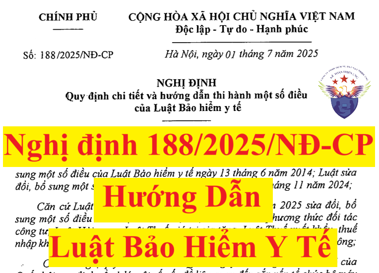

Ngày 01/7/2025, Chính phủ ban hành Nghị định 188/2025/NĐ-CP hướng dẫn Luật Bảo hiểm y tế, trong đó có hướng dẫn mức đóng bảo hiểm y tế với người lao động và người sử dụng lao động (doanh nghiệp).
Nghị định 188/2025/NĐ-CP có hiệu lực từ ngày 15/8/2025.
Nội dung chi tiết của Nghị định 188/2025/NĐ-CP như sau:
Nghị định 188/2025/NĐ-CP có hiệu lực từ ngày 15/8/2025.
Nội dung chi tiết của Nghị định 188/2025/NĐ-CP như sau:
NGHỊ ĐỊNH QUY ĐỊNH CHI TIẾT VÀ HƯỚNG DẪN THI HÀNH MỘT SỐ ĐIỀU CỦA LUẬT BẢO HIỂM Y TẾ Căn cứ Luật Bảo hiểm y tế ngày 14 tháng 11 năm 2008; Luật sửa đổi, bổ sung một số điều của Luật Bảo hiểm y tế ngày 13 tháng 6 năm 2014; Luật sửa đổi, bổ sung một số điều của Luật Bảo hiểm y tế ngày 27 tháng 11 năm 2024; Căn cứ Luật số 90/2025/QH15 ngày 25 tháng 6 năm 2025 sửa đổi, bổ sung một số điều của Luật Đấu thầu, Luật Đầu tư theo phương thức đối tác công tư, Luật Hải quan, Luật Thuế giá trị gia tăng, Luật Thuế xuất khẩu, thuế nhập khẩu, Luật Đầu tư, Luật Đầu tư công, Luật Quản lý, sử dụng tài sản công; Căn cứ Nghị quyết số 190/2025/QH15 ngày 19 tháng 02 năm 2025 của Quốc hội quy định về xử lý một số vấn đề liên quan đến sắp xếp tổ chức bộ máy nhà nước; Theo đề nghị của Bộ trưởng Bộ Y tế; Chính phủ ban hành Nghị định quy định chi tiết và hướng dẫn thi hành một số điều của Luật Bảo hiểm y tế. Chương I QUY ĐỊNH CHUNG Nghị định này quy định chi tiết và hướng dẫn thi hành một số điều của Luật Bảo hiểm y tế số 25/2008/QH12 ngày 14 tháng 11 năm 2008 đã được sửa đổi, bổ sung một số điều theo Luật số 32/2013/QH13, Luật số 46/2014/QH13, Luật số 97/2015/QH13, Luật số 35/2018/QH14, Luật số 68/2020/QH14, Luật số 30/2023/QH15 và Luật số 51/2024/QH15 (sau đây gọi là Luật Bảo hiểm y tế), bao gồm: 1. Quy định chi tiết các nội dung về: a) Hợp đồng khám bệnh, chữa bệnh bảo hiểm y tế theo quy định tại Điều 25 của Luật Bảo hiểm y tế; b) Thủ tục khám bệnh, chữa bệnh bảo hiểm y tế theo quy định tại khoản 1 Điều 28 của Luật Bảo hiểm y tế; c) Phương thức thanh toán và việc áp dụng phương thức thanh toán chi phí khám bệnh, chữa bệnh bảo hiểm y tế theo quy định tại Điều 30 của Luật Bảo hiểm y tế; d) Thanh toán chi phí khám bệnh, chữa bệnh bảo hiểm y tế theo quy định tại các điểm a và b khoản 2 và khoản 3 Điều 31 của Luật Bảo hiểm y tế; đ) Phân bổ và sử dụng quỹ theo quy định tại khoản 5 Điều 35 của Luật Bảo hiểm y tế; e) Xử lý vi phạm pháp luật về bảo hiểm y tế theo quy định tại điểm a khoản 2, điểm a khoản 3 và khoản 4 Điều 49 của Luật Bảo hiểm y tế. 2. Quy định các nội dung về: a) Đối tượng tham gia bảo hiểm y tế theo quy định tại điểm a khoản 7 Điều 12 của Luật Bảo hiểm y tế; b) Mức đóng, mức hỗ trợ đóng, trách nhiệm và phương thức đóng bảo hiểm y tế theo quy định tại các điểm đ và e khoản 1 và khoản 7 Điều 13 của Luật Bảo hiểm y tế; c) Cấp thẻ bảo hiểm y tế bản giấy và bản điện tử theo quy định tại khoản 3 Điều 17 của Luật Bảo hiểm y tế; d) Phạm vi được hưởng của người tham gia bảo hiểm y tế theo quy định tại các điểm a và c khoản 3 Điều 21 của Luật Bảo hiểm y tế; đ) Mức hưởng bảo hiểm y tế của người tham gia bảo hiểm y tế theo quy định tại điểm b khoản 1, các điểm e và h khoản 4 Điều 22 của Luật Bảo hiểm y tế; trường hợp người tham gia bảo hiểm y tế sử dụng dịch vụ khám bệnh, chữa bệnh theo yêu cầu theo quy định tại khoản 6 Điều 22 Luật Bảo hiểm y tế và các trường hợp khác không thuộc quy định tại khoản 1 Điều 22 của Luật Bảo hiểm y tế; e) Ký kết hợp đồng khám bệnh, chữa bệnh bảo hiểm y tế theo quy định tại Điều 24 của Luật Bảo hiểm y tế; g) Thanh toán chi phí khám bệnh, chữa bệnh bảo hiểm y tế theo quy định tại điểm c khoản 2, điểm a khoản 4 Điều 31 của Luật Bảo hiểm y tế; h) Quản lý quỹ bảo hiểm y tế, quyết định nguồn tài chính để bảo đảm việc khám bệnh, chữa bệnh bảo hiểm y tế trong trường hợp mất cân đối thu, chi quỹ bảo hiểm y tế theo quy định tại khoản 2 Điều 34 của Luật Bảo hiểm y tế; i) Chi tổ chức và hoạt động bảo hiểm y tế theo quy định tại khoản 5 Điều 35 của Luật Bảo hiểm y tế; k) Các trường hợp thuộc khoản 1 Điều 48b của Luật Bảo hiểm y tế nhưng có lý do chính đáng thì không bị coi là trốn đóng bảo hiểm y tế; l) Chuyển tiếp đối với việc thực hiện hợp đồng khám bệnh, chữa bệnh bảo hiểm y tế được ký trước ngày 01 tháng 7 năm 2025 mà còn hiệu lực sau ngày 01 tháng 7 năm 2025. 3. Hướng dẫn thi hành một số nội dung sau đây: a) Thanh toán chi phí thuốc, thiết bị y tế theo quy định tại khoản 3 Điều 55 của Luật Đấu thầu năm 2023 được sửa đổi, bổ sung tại Luật số 90/2025/QH15; b) Ứng dụng công nghệ thông tin, chuyển đổi số trong thực hiện bảo hiểm y tế; c) Nhiệm vụ, quyền hạn của các bộ, địa phương, cơ quan, người có thẩm quyền về bảo hiểm y tế sau khi sắp xếp tổ chức bộ máy; d) Trách nhiệm của các bên liên quan trong tổ chức thực hiện. Điều 2. Đối tượng áp dụng 1. Nghị định này áp dụng đối với người tham gia bảo hiểm y tế, cơ sở khám bệnh, chữa bệnh bảo hiểm y tế, cơ quan bảo hiểm xã hội và tổ chức, cá nhân khác có liên quan đến bảo hiểm y tế, bao gồm cả các đối tượng thuộc trường hợp quy định tại khoản 2 Điều này. 2. Người tham gia bảo hiểm y tế, cơ sở khám bệnh, chữa bệnh bảo hiểm y tế trong các trường hợp sau đây: a) Người tham gia bảo hiểm y tế thuộc thẩm quyền quản lý của Bộ Quốc phòng, Bộ Công an khám bệnh, chữa bệnh tại cơ sở khám bệnh, chữa bệnh bảo hiểm y tế không thuộc thẩm quyền quản lý của Bộ Quốc phòng, Bộ Công an; b) Người tham gia bảo hiểm y tế không thuộc thẩm quyền quản lý của Bộ Quốc phòng, Bộ Công an khám bệnh, chữa bệnh tại cơ sở khám bệnh, chữa bệnh bảo hiểm y tế thuộc thẩm quyền quản lý của Bộ Quốc phòng, Bộ Công an. 3. Người tham gia bảo hiểm y tế thuộc quân đội nhân dân, công an nhân dân và người làm công tác cơ yếu khám bệnh, chữa bệnh tại cơ sở khám bệnh, chữa bệnh bảo hiểm y tế thuộc thẩm quyền quản lý của Bộ Quốc phòng, Bộ Công an áp dụng theo quy định riêng của Chính phủ đối với các đối tượng này. Điều 3. Các trường hợp không bị coi là trốn đóng bảo hiểm y tế Các trường hợp theo quy định tại điểm a, điểm c khoản 1 Điều 48b của Luật Bảo hiểm y tế không bị coi là trốn đóng bảo hiểm y tế khi có một trong các lý do sau theo công bố của cơ quan có thẩm quyền về phòng, tránh thiên tai, tình trạng khẩn cấp, phòng thủ dân sự và phòng, chống dịch bệnh, bao gồm: 1. Bão, lũ, ngập lụt, động đất, hỏa hoạn lớn, hạn hán kéo dài và các loại thiên tai khác ảnh hưởng trực tiếp và nghiêm trọng đến hoạt động sản xuất, kinh doanh. 2. Dịch bệnh nguy hiểm được cơ quan nhà nước có thẩm quyền công bố, gây ảnh hưởng nghiêm trọng đến hoạt động sản xuất, kinh doanh và khả năng tài chính của cơ quan, tổ chức, người sử dụng lao động. 3. Tình trạng khẩn cấp theo quy định của pháp luật gây ảnh hưởng đột xuất, bất ngờ đến hoạt động của cơ quan, tổ chức, người sử dụng lao động. 4. Các sự kiện bất khả kháng khác theo quy định của pháp luật dân sự. Điều 4. Xác định số tiền phải nộp và hoàn trả chi phí cho người bệnh trong trường hợp chậm đóng, trốn đóng bảo hiểm y tế 1. Cơ quan, tổ chức, người sử dụng lao động chậm đóng, trốn đóng bảo hiểm y tế phải nộp số tiền đối với hành vi chậm đóng, trốn đóng cho cơ quan bảo hiểm xã hội. Số tiền phải nộp đối với hành vi chậm đóng, trốn đóng bảo hiểm y tế được xác định như sau:
Cđt = Pst x n x 0,03%
Trong đó:- Cđt: Số tiền phải đóng trên số ngày chậm đóng, trốn đóng cho tháng t (t=1,2,3,...12) - Pst: Số tiền phải đóng phát sinh của tháng t - n: Số ngày chậm đóng, trốn đóng. 2. Cơ quan, tổ chức, người sử dụng lao động chậm đóng, trốn đóng bảo hiểm y tế hoàn trả chi phí khám bệnh, chữa bệnh bảo hiểm y tế cho người lao động trong trường hợp cơ quan, tổ chức, người sử dụng lao động chậm đóng, trốn đóng bảo hiểm y tế thực hiện như sau: a) Người lao động hoặc thân nhân hoặc người đại diện hợp pháp theo quy định của pháp luật của người lao động trực tiếp nộp hồ sơ theo thành phần quy định tại các khoản 2, 3 và 4 Điều 55 Nghị định này cho cơ quan, tổ chức, người sử dụng lao động chậm đóng, trốn đóng bảo hiểm y tế; b) Cơ quan, tổ chức, người sử dụng lao động có trách nhiệm phải thanh toán chi phí khám bệnh, chữa bệnh cho người lao động hoặc thân nhân hoặc người đại diện hợp pháp theo quy định của pháp luật của người lao động trong thời hạn 40 ngày kể từ ngày nhận đủ hồ sơ đề nghị thanh toán; c) Cơ sở khám bệnh, chữa bệnh cung cấp bàng kê chi phí xác định số tiền người bệnh đã thanh toán cho cơ sở khám bệnh, chữa bệnh kèm theo hóa đơn hợp pháp theo đề nghị của người bệnh để làm cơ sở cho người bệnh đề nghị hoàn trả chi phí khám bệnh, chữa bệnh bảo hiểm y tế. Chương II ĐỐI TƯỢNG, MỨC ĐÓNG, MỨC HỖ TRỢ ĐÓNG VÀ TRÁCH NHIỆM ĐÓNG BẢO HIỂM Y TẾ Ngoài các đối tượng tham gia bảo hiểm y tế theo quy định tại các khoản 1, 2, 3, 4, 5 và 6 Điều 12 của Luật Bảo hiểm y tế, người tham gia bảo hiểm y tế còn bao gồm các đối tượng sau đây: 1. Công nhân cao su đang hưởng trợ cấp hằng tháng theo quy định của Chính phủ tham gia bảo hiểm y tế theo nhóm do cơ quan bảo hiểm xã hội đóng quy định tại khoản 2 Điều 12 của Luật Bảo hiểm y tế. 2. Người dân các xã an toàn khu cách mạng trong kháng chiến chống Pháp hoặc chống Mỹ hiện đang thường trú tại các xã an toàn khu cách mạng trong kháng chiến chống Pháp hoặc chống Mỹ đã được cập nhật thông tin trong Cơ sở dữ liệu quốc gia về dân cư, Cơ sở dữ liệu về cư trú tham gia bảo hiểm y tế theo nhóm do ngân sách nhà nước đóng quy định tại khoản 3 Điều 12 của Luật Bảo hiểm y tế. 3. Người được phong tặng danh hiệu nghệ nhân nhân dân, nghệ nhân ưu tú thuộc hộ gia đình có mức thu nhập bình quân đầu người hằng tháng thấp hơn mức lương cơ sở theo quy định của Chính phủ mà không thuộc đối tượng quy định tại các khoản 1, 2 và 3 Điều 12 của Luật Bảo hiểm y tế tham gia bảo hiểm y tế theo nhóm do ngân sách nhà nước đóng quy định tại khoản 3 Điều 12 của Luật Bảo hiểm y tế. 4. Nạn nhân bom mìn vật nổ sau chiến tranh theo quy định tại khoản 8 Điều 3 của Nghị định số 18/2019/NĐ-CP ngày 01 tháng 02 năm 2019 của Chính phủ về quản lý và thực hiện hoạt động khắc phục hậu quả bom mìn vật nổ sau chiến tranh mà không thuộc đối tượng quy định tại các khoản 1, 2 và 3 Điều 12 của Luật Bảo hiểm y tế tham gia bảo hiểm y tế theo nhóm được ngân sách nhà nước hỗ trợ mức đóng quy định tại khoản 4 Điều 12 của Luật Bảo hiểm y tế. 5. Thân nhân của người làm công tác khác trong tổ chức cơ yếu theo quy định của pháp luật về cơ yếu không thuộc đối tượng tham gia bảo hiểm y tế theo quy định tại các điểm a, b, c, d, đ, e, g, h và i khoản 1, khoản 2 và khoản 3 Điều 12 của Luật Bảo hiểm y tế tham gia bảo hiểm y tế theo nhóm do người sử dụng lao động đóng hoặc người lao động đóng hoặc cùng đóng quy định tại khoản 1 Điều 12 của Luật Bảo hiểm y tế. 6. Người tham gia kháng chiến, bảo vệ Tổ quốc, làm nghĩa vụ quốc tế và các đối tượng khác đã được ngân sách nhà nước đóng bảo hiểm y tế theo quy định tại các văn bản quy phạm pháp luật ban hành trước ngày 01 tháng 01 năm 2025 tham gia bảo hiểm y tế theo nhóm do ngân sách nhà nước đóng quy định tại khoản 3 Điều 12 của Luật Bảo hiểm y tế. 7. Học viên đào tạo quân sự Ban Chỉ huy quân sự cấp xã trình độ cao đẳng, đại học ngành quân sự cơ sở hệ tập trung theo quyết định của Thủ tướng Chính phủ và các quy định của pháp luật trước ngày 01 tháng 01 năm 2025 đang hưởng sinh hoạt phí từ ngân sách nhà nước, chưa tham gia bảo hiểm y tế thì tham gia bảo hiểm y tế theo nhóm do ngân sách nhà nước đóng quy định tại khoản 3 Điều 12 của Luật Bảo hiểm y tế. 8. Các đối tượng quy định tại các khoản 1, 2, 3, 4, 5, 6 và 7 Điều này đồng thời thuộc nhiều đối tượng tham gia bảo hiểm y tế khác nhau theo các nhóm đối tượng quy định tại Điều 12 của Luật Bảo hiểm y tế thì tham gia bảo hiểm y tế theo nguyên tắc quy định tại điểm a khoản 5 Điều 13 của Luật Bảo hiểm y tế. 9. Người thuộc đối tượng được quy định tại khoản 4 Điều này đồng thời thuộc đối tượng quy định tại khoản 4 Điều 12 của Luật Bảo hiểm y tế thì được lựa chọn tham gia theo đối tượng có mức hỗ trợ cao nhất. Điều 6. Mức đóng, mức hỗ trợ đóng và trách nhiệm đóng bảo hiểm y tế 1. Mức đóng do người sử dụng lao động đóng hoặc người lao động đóng hoặc cùng đóng được quy định như sau: a) Mức đóng hằng tháng của đối tượng quy định tại các điểm a, c, d và e khoản 1 Điều 12 của Luật Bảo hiểm y tế bằng 4,5% tiền lương tháng làm căn cứ đóng bảo hiểm xã hội bắt buộc, trong đó người sử dụng lao động đóng hai phần ba và người lao động đóng một phần ba; b) Mức đóng hàng tháng của đối tượng quy định tại các điểm b và đ khoản 1 Điều 12 của Luật Bảo hiểm y tế bằng 4,5% tiền lương tháng làm căn cứ đóng bảo hiểm xã hội bắt buộc và do đối tượng đóng; c) Mức đóng hằng tháng của đối tượng quy định tại điểm g khoản 1 Điều 12 của Luật Bảo hiểm y tế bằng 4,5% mức lương cơ sở, trong đó người sử dụng lao động đóng hai phần ba và người lao động đóng một phần ba; d) Mức đóng hằng tháng của đối tượng quy định tại điểm h khoản 1 Điều 12 của Luật Bảo hiểm y tế bằng 4,5% tiền lương tháng làm căn cứ đóng bảo hiểm xã hội bắt buộc, trong đó người sử dụng lao động đóng hai phần ba và người lao động đóng một phần ba; đ) Mức đóng hằng tháng của đối tượng quy định tại điểm i khoản 1 Điều 12 của Luật Bảo hiểm y tế bằng 4,5% mức lương cơ sở và do người sử dụng lao động của công nhân và viên chức quốc phòng đang phục vụ trong quân đội, người sử dụng lao động của công nhân công an đang công tác trong công an nhân dân đóng; e) Mức đóng hằng tháng của đối tượng quy định tại khoản 5 Điều 5 của Nghị định này bằng 4,5% mức lương cơ sở và do người sử dụng lao động của người làm công tác khác trong tổ chức cơ yếu theo quy định của pháp luật về cơ yếu đóng; g) Người lao động là cán bộ, công chức, viên chức đang trong thời gian bị tạm giữ, tạm giam, tạm đình chỉ công tác hoặc tạm đình chỉ chức vụ mà chưa bị xử lý kỷ luật thì mức đóng hằng tháng bằng 4,5% của 50% mức tiền lương tháng làm căn cứ đóng bảo hiểm xã hội bắt buộc của người lao động của tháng liền kề trước khi bị tạm giam, tạm giữ hoặc tạm đình chỉ theo quy định của pháp luật, trong đó người sử dụng lao động đóng hai phần ba và người lao động đóng một phần ba. Trường hợp cơ quan có thẩm quyền kết luận là không vi phạm pháp luật, người sử dụng lao động và người lao động phải truy đóng bảo hiểm y tế trên số tiền lương được truy lĩnh. 2. Mức đóng do cơ quan bảo hiểm xã hội đóng được quy định như sau: a) Mức đóng hằng tháng của đối tượng quy định tại điểm a khoản 2 Điều 12 của Luật Bảo hiểm y tế bằng 4,5% tiền lương hưu hoặc trợ cấp mất sức lao động; b) Mức đóng hàng tháng của đối tượng quy định tại các điểm b và c khoản 2 Điều 12 của Luật Bảo hiểm y tế và khoản 1 Điều 5 Nghị định này bằng 4,5% mức lương cơ sở; c) Mức đóng hằng tháng của đối tượng quy định tại điểm d khoản 2 Điều 12 của Luật Bảo hiểm y tế bằng 4,5% tiền trợ cấp thất nghiệp. 3. Mức đóng của nhóm do ngân sách nhà nước đóng được quy định như sau: a) Mức đóng hằng tháng của đối tượng quy định tại các điểm e, g, h, i, k, l, m, o, p, q, r, s, t và u khoản 3 Điều 12 của Luật Bảo hiểm y tế và các khoản 2, 3, 6 và 7 Điều 5 Nghị định này bằng 4,5% mức lương cơ sở; b) Mức đóng hằng tháng của đối tượng quy định tại điểm n khoản 3 Điều 12 của Luật Bảo hiểm y tế bằng 4,5% mức lương cơ sở và đóng thông qua cơ quan, tổ chức, đơn vị cấp học bổng. 4. Mức đóng của nhóm do ngân sách nhà nước hỗ trợ mức đóng được quy định như sau: Mức đóng hằng tháng của đối tượng quy định tại khoản 4 Điều 12 của Luật Bảo hiểm y tế và khoản 4 Điều 5 Nghị định này bằng 4,5% mức lương cơ sở do đối tượng tự đóng và được ngân sách nhà nước hỗ trợ một phần mức đóng theo quy định tại khoản 6 Điều này. 5. Mức đóng hằng tháng của đối tượng quy định tại khoản 5 Điều 12 của Luật Bảo hiểm y tế được quy định như sau: a) Mức đóng hằng tháng bằng 4,5% mức lương cơ sở và do đối tượng đóng theo hộ gia đình hoặc tự đóng theo cá nhân tham gia; b) Thành viên hộ gia đình quy định tại điểm a khoản 5 Điều 12 của Luật Bảo hiểm y tế cùng tham gia bảo hiểm y tế theo hình thức hộ gia đình trong năm tài chính thì được giảm trừ mức đóng như sau: người thứ nhất đóng bằng 4,5% mức lương cơ sở; người thứ hai, thứ ba, thứ tư đóng lần lượt bằng 70%, 60%, 50% mức đóng của người thứ nhất; từ người thứ năm trở đi đóng bằng 40% mức đóng của người thứ nhất. 6. Mức hỗ trợ từ ngân sách nhà nước được quy định như sau: a) Hỗ trợ 100% mức đóng bảo hiểm y tế đối với người thuộc hộ gia đình cận nghèo đang cư trú trên địa bàn các xã nghèo theo Quyết định của Thủ tướng Chính phủ và các văn bản khác của cơ quan có thẩm quyền; b) Hỗ trợ tối thiểu 70% mức đóng bảo hiểm y tế đối với đối tượng quy định tại điểm a khoản 4 Điều 12 của Luật Bảo hiểm y tế; c) Hỗ trợ tối thiểu 70% mức đóng bảo hiểm y tế đối với đối tượng quy định tại điểm g khoản 4 Điều 12 của Luật Bảo hiểm y tế. Thời gian hỗ trợ là 36 (ba mươi sáu) tháng kể từ thời điểm xã nơi đối tượng đang sinh sống không còn thuộc vùng có điều kiện kinh tế - xã hội khó khăn, đặc biệt khó khăn; d) Hỗ trợ tối thiểu 50% mức đóng bảo hiểm y tế đối với đối tượng quy định tại điểm i khoản 4 Điều 12 của Luật Bảo hiểm y tế. Thời gian hỗ trợ là 01 năm kể từ khi đối tượng được cơ quan có thẩm quyền xác nhận là nạn nhân theo quy định của Luật Phòng, chống mua bán người; đ) Hỗ trợ tối thiểu 50% mức đóng bảo hiểm y tế đối với đối tượng quy định tại các điểm b, c, đ, e và h khoản 4 Điều 12 của Luật Bảo hiểm y tế; e) Hỗ trợ tối thiểu 30% mức đóng bảo hiểm y tế đối với đối tượng quy định tại điểm d khoản 4 Điều 12 của Luật Bảo hiểm y tế và khoản 4 Điều 5 Nghị định này. Điều 7. Phương thức, trách nhiệm đóng bảo hiểm y tế của một số đối tượng 1. Đối với người đang hưởng lương hưu, trợ cấp mất sức lao động, trợ cấp bảo hiểm xã hội hằng tháng do ngân sách nhà nước bảo đảm quy định tại khoản 2, điểm q khoản 3 Điều 12 của Luật Bảo hiểm y tế và khoản 1 Điều 5 Nghị định này, hằng tháng, cơ quan bảo hiểm xã hội chuyển kinh phí đóng bảo hiểm y tế cho đối tượng nảy từ nguồn kinh phí chi lương hưu, trợ cấp bảo hiểm xã hội do ngân sách nhà nước bảo đảm. 2. Đối với đối tượng quy định tại các điểm e, i và k khoản 3 Điều 12 của Luật Bảo hiểm y tế và khoản 6 Điều 5 Nghị định này, hằng quý, Sở Nội vụ chuyển kinh phí đóng bảo hiểm y tế từ nguồn thực hiện chính sách ưu đãi người có công với cách mạng vào quỹ bảo hiểm y tế. Chậm nhất đến ngày 15 tháng 12 hằng năm, cơ quan nội vụ phải thực hiện xong việc chuyển kinh phí vào quỹ bảo hiểm y tế của năm đó. 3. Đối với các đối tượng quy định tại điểm r khoản 3 Điều 12 của Luật Bảo hiểm y tế và khoản 2 Điều 5 Nghị định này, hằng quý, Sở Y tế chuyển kinh phí đóng bảo hiểm y tế từ nguồn thực hiện chính sách bảo trợ xã hội vào quỹ bảo hiểm y tế. Chậm nhất đến ngày 15 tháng 12 hằng năm, Sở Y tế phải thực hiện xong việc chuyển kinh phí vào quỹ bảo hiểm y tế của năm đó. 4. Đối với các đối tượng quy định tại các điểm c, đ, e, h và i khoản 4 Điều 12 của Luật Bảo hiểm y tế và khoản 4 Điều 5 Nghị định này, hằng quý, cơ quan bảo hiểm xã hội tổng hợp số thẻ bảo hiểm y tế đã phát hành và số tiền đóng, hỗ trợ đóng theo Mẫu số 1 Phụ lục ban hành kèm theo Nghị định này gửi Sở Tài chính chuyển kinh phí đóng bảo hiểm y tế từ nguồn ngân sách địa phương theo quy định tại khoản 10 Điều này. 5. Đối với đối tượng quy định tại các điểm g, h, l (trừ thân nhân của đối tượng do Bộ Quốc phòng quản lý), m, o, p, s, t và u khoản 3, các điểm a và g khoản 4 Điều 12 của Luật Bảo hiểm y tế và khoản 3 Điều 5 Nghị định này: a) Hằng quý, cơ quan bảo hiểm xã hội tổng hợp số thẻ bảo hiểm y tế đã phát hành và số tiền đóng, hỗ trợ đóng theo Mẫu số 1 Phụ lục ban hành kèm theo Nghị định này, gửi Sở Tài chính để chuyển kinh phí vào quỹ bảo hiểm y tế theo quy định tại khoản 10 Điều này; b) Thời điểm để tính số tiền phải đóng đối với các đối tượng được lập danh sách hằng năm, tính tiền đóng từ ngày 01 tháng 01; đối với các đối tượng được bổ sung trong năm, tính tiền đóng theo quy định tại khoản 3 và khoản 4 Điều 6 Nghị định này, quyền lợi hưởng từ ngày được xác định tại quyết định phê duyệt. 6. Đối với đối tượng học sinh, sinh viên quy định tại điểm b khoản 4 Điều 12 của Luật Bảo hiểm y tế: a) Định kỳ 03 tháng, 06 tháng hoặc 12 tháng, học sinh, sinh viên hoặc cha, mẹ, người giám hộ của học sinh, sinh viên có trách nhiệm đóng bảo hiểm y tế phần thuộc trách nhiệm đóng theo quy định tại khoản 2 Điều 8 Nghị định này cho cơ quan bảo hiểm xã hội; b) Học sinh, sinh viên đang theo học tại cơ sở giáo dục hoặc cơ sở giáo dục nghề nghiệp trực thuộc bộ, cơ quan trung ương thì do ngân sách trung ương hỗ trợ. Định kỳ 03 tháng, 06 tháng hoặc 12 tháng, Bảo hiểm xã hội tỉnh, thành phố trực thuộc Trung ương tổng hợp số thẻ bảo hiểm y tế đã phát hành, số tiền thu của học sinh, sinh viên và số tiền ngân sách nhà nước hỗ trợ đóng theo Mẫu số 1 Phụ lục ban hành kèm theo Nghị định này, gửi Bảo hiểm xã hội Việt Nam tổng hợp, gửi Bộ Tài chính để chuyển kinh phí vào quỹ bảo hiểm y tế; c) Học sinh, sinh viên đang theo học tại cơ sở giáo dục hoặc cơ sở giáo dục nghề nghiệp khác thì ngân sách địa phương, bao gồm cả phần ngân sách trung ương hỗ trợ (nếu có) nơi cơ sở giáo dục đó đặt trụ sở hỗ trợ, không phân biệt nơi thường trú của học sinh, sinh viên. Định kỳ 03 tháng, 06 tháng hoặc 12 tháng, cơ quan bảo hiểm xã hội tổng hợp số thẻ bảo hiểm y tế đã phát hành, số tiền thu của học sinh, sinh viên và số tiền ngân sách nhà nước hỗ trợ đóng theo Mẫu số 1 Phụ lục ban hành kèm theo Nghị định này, gửi Sở Tài chính để chuyển kinh phí vào quỹ bảo hiểm y tế theo quy định tại khoản 10 Điều này. 7. Đối với các đối tượng được ngân sách nhà nước hỗ trợ một phần mức đóng bảo hiểm y tế quy định tại điểm d khoản 4 Điều 12 của Luật Bảo hiểm y tế: a) Định kỳ 03 tháng, 06 tháng hoặc 12 tháng, người đại diện của hộ gia đình trực tiếp nộp tiền đóng bảo hiểm y tế phần thuộc trách nhiệm đóng theo quy định tại khoản 2 Điều 8 Nghị định này cho cơ quan bảo hiểm xã hội; b) Định kỳ 03 tháng, 06 tháng hoặc 12 tháng, cơ quan bảo hiểm xã hội tổng hợp số thẻ bảo hiểm y tế đã phát hành, số tiền thu của người tham gia và số tiền ngân sách nhà nước hỗ trợ đóng theo Mẫu số 1 Phụ lục ban hành kèm theo Nghị định này, gửi Sở Tài chính để chuyển kinh phí vào quỹ bảo hiểm y tế theo quy định tại khoản 10 Điều này. 8. Đối với đối tượng tham gia bảo hiểm y tế theo hộ gia đình quy định tại khoản 5 Điều 12 của Luật Bảo hiểm y tế: định kỳ 03 tháng, 06 tháng hoặc 12 tháng, người đại diện hộ gia đình hoặc thành viên hộ gia đình tham gia bảo hiểm y tế nộp tiền đóng bảo hiểm y tế theo quy định tại khoản 3 Điều 8 Nghị định này cho cơ quan bảo hiểm xã hội. 9. Đối với đối tượng tham gia bảo hiểm y tế theo quy định tại các điểm h và i khoản 1 Điều 12 của Luật Bảo hiểm y tế và khoản 5 Điều 5 Nghị định này, hằng tháng người sử dụng lao động đóng bảo hiểm y tế cho đối tượng này cùng với việc đóng bảo hiểm y tế cho người lao động theo quy định từ nguồn như sau: a) Đối với đơn vị sử dụng ngân sách nhà nước thì do ngân sách nhà nước bảo đảm; b) Đối với đơn vị sự nghiệp thì sử dụng kinh phí của đơn vị theo quy định của pháp luật về cơ chế tự chủ của đơn vị sự nghiệp công lập; c) Đối với doanh nghiệp thì sử dụng kinh phí của doanh nghiệp. 10. Sở Tài chính căn cứ quy định về phân cấp quản lý ngân sách của cấp có thẩm quyền và bảng tổng hợp đối tượng, kinh phí ngân sách nhà nước đóng, hỗ trợ đóng do cơ quan bảo hiểm xã hội chuyển đến, có trách nhiệm chuyển kinh phí vào quỹ bảo hiểm y tế mỗi quý một lần. Chậm nhất đến ngày 15 tháng 12 hằng năm phải thực hiện xong việc chuyển kinh phí vào quỹ bảo hiểm y tế của năm đó. 11. Đối với đối tượng quy định tại điểm n khoản 3 Điều 12 của Luật Bảo hiểm y tế, hằng quý cơ quan, đơn vị, tổ chức cấp học bổng đóng bảo hiểm y tế theo quy định vào quỹ bảo hiểm y tế. 12. Đối với đối tượng quy định tại điểm l khoản 3 Điều 12 Luật Bảo hiểm y tế là thân nhân của đối tượng do Bộ Quốc phòng quản lý và đối tượng quy định tại khoản 7 Điều 5 Nghị định này, hằng quý cơ quan tài chính của đơn vị trực thuộc Bộ Quốc phòng thực hiện đóng bảo hiểm y tế về Bảo hiểm xã hội quân đội. 13. Trường hợp người tham gia bảo hiểm y tế tử vong, mất tích hoặc không còn cư trú tại Việt Nam, số tiền đóng bảo hiểm y tế tính từ thời điểm đóng đến thời điểm ngừng đóng theo danh sách báo giảm đóng của cơ quan có thẩm quyền lập. Điều 8. Xác định số tiền đóng, hỗ trợ đóng đối với một số đối tượng khi nhà nước điều chỉnh mức đóng bảo hiểm y tế, điều chỉnh mức lương cơ sở 1. Đối với nhóm đối tượng quy định tại khoản 3 Điều 12 của Luật Bảo hiểm y tế và đối tượng được hỗ trợ 100% mức đóng bảo hiểm y tế quy định tại điểm a khoản 6 Điều 6 Nghị định này mà được ngân sách nhà nước hỗ trợ 100% mức đóng bảo hiểm y tế: a) Số tiền ngân sách nhà nước đóng, hỗ trợ đóng hằng tháng được xác định theo mức đóng bảo hiểm y tế nhân (x) với mức lương cơ sở. Khi nhà nước điều chỉnh mức đóng bảo hiểm y tế, điều chỉnh mức lương cơ sở, số tiền ngân sách nhà nước đóng được điều chỉnh kể từ ngày áp dụng mức đóng bảo hiểm y tế mới, mức lương cơ sở mới; b) Số tiền đóng bảo hiểm y tế đối với đối tượng quy định tại điểm h khoản 3 Điều 12 của Luật Bảo hiểm y tế được tính từ ngày sinh đến ngày trẻ đủ 72 tháng tuổi. Trường hợp trẻ em là người Việt Nam sinh ra ở nước ngoài, số tiền đóng bảo hiểm y tế được tính từ ngày trẻ về cư trú tại Việt Nam theo quy định của pháp luật. 2. Đối với nhóm đối tượng được ngân sách nhà nước hỗ trợ một phần mức đóng bảo hiểm y tế quy định tại các điểm b và d khoản 4 Điều 12 của Luật Bảo hiểm y tế: a) Số tiền đóng của người tham gia và hỗ trợ của ngân sách nhà nước hằng tháng được xác định theo mức đóng bảo hiểm y tế nhân (x) với mức lương cơ sở tại thời điểm người tham gia đóng bảo hiểm y tế; b) Khi Nhà nước điều chỉnh mức đóng bảo hiểm y tế, điều chỉnh mức lương cơ sở, người tham gia và ngân sách nhà nước không phải đóng bổ sung hoặc không được hoàn trả phần chênh lệch do điều chỉnh mức đóng bảo hiểm y tế, mức lương cơ sở đối với thời gian còn lại mà người tham gia đã đóng bảo hiểm y tế. 3. Đối với nhóm đối tượng tham gia bảo hiểm y tế theo quy định tại khoản 5 Điều 12 của Luật Bảo hiểm y tế: a) Số tiền đóng của người tham gia hằng tháng được xác định theo mức đóng bảo hiểm y tế nhân (x) với mức lương cơ sở tại thời điểm đóng bảo hiểm y tế; b) Khi Nhà nước điều chỉnh mức đóng bảo hiểm y tế, điều chỉnh mức lương cơ sở, người tham gia không phải đóng bổ sung hoặc không được hoàn trả phần chênh lệch do điều chỉnh mức đóng bảo hiểm y tế, mức lương cơ sở đối với thời gian còn lại mà người tham gia đã đóng bảo hiểm y tế. 4. Đối tượng tham gia vào các ngày trong tháng thì số tiền đóng bảo hiểm y tế được xác định theo tháng kể từ ngày đóng bảo hiểm y tế.
Chương III
Điều 9. Lập danh sách cấp thẻ bảo hiểm y tế của một số đối tượngTHẺ BẢO HIỂM Y TẾ 1. Trách nhiệm lập danh sách cấp thẻ bảo hiểm y tế được thực hiện theo quy định tại khoản 3 Điều 8 và khoản 1 Điều 17 của Luật Bảo hiểm y tế. 2. Cơ quan bảo hiểm xã hội lập danh sách cấp thẻ bảo hiểm y tế đối với người đã hiến bộ phận cơ thể theo quy định của pháp luật căn cứ vào giấy ra viện do cơ sở khám bệnh, chữa bệnh nơi lấy bộ phận cơ thể của người hiến cấp. Cơ sở khám bệnh, chữa bệnh hướng dẫn người hiến kê khai đầy đủ thông tin theo Mẫu số 2 Phụ lục ban hành kèm theo Nghị định này trên Cổng dịch vụ công quốc gia hoặc qua ứng dụng của cơ quan bảo hiểm xã hội và hướng dẫn người hiến thực hiện thủ tục cấp thẻ bảo hiểm y tế theo quy định tại Điều 11 Nghị định này. 3. Ủy ban nhân dân cấp xã lập danh sách cấp thẻ bảo hiểm y tế đối với các đối tượng theo quy định tại các khoản 1, 2, 3, 4 và 6 Điều 5 Nghị định này, đối tượng quy định tại các điểm e, h, i, k, o, r, s và t khoản 3, các điểm a, d và g khoản 4 Điều 12 của Luật Bảo hiểm y tế đang sinh sống tại cộng đồng. 4. Người sử dụng lao động lập danh sách cấp thẻ bảo hiểm y tế đối với đối tượng theo quy định tại khoản 5 Điều 5 Nghị định này. 5. Cơ sở nuôi dưỡng, điều dưỡng thương binh và người có công với cách mạng, cơ sở trợ giúp xã hội (sau đây gọi là cơ sở nuôi dưỡng) lập danh sách cấp thẻ bảo hiểm y tế cho các đối tượng quy định tại các điểm e, h, i, k, r và s khoản 3 Điều 12 của Luật Bảo hiểm y tế đang được nuôi dưỡng thường xuyên trong cơ sở nuôi dưỡng. 6. Danh sách đối tượng tham gia bảo hiểm y tế được lập theo Mẫu số 3 và Mẫu số 4 Phụ lục ban hành kèm theo Nghị định này. Điều 10. Thông tin thẻ bảo hiểm y tế 1. Thẻ bảo hiểm y tế bản điện tử hoặc bản giấy do cơ quan bảo hiểm xã hội phát hành kèm theo mã số bảo hiểm y tế và các thông tin cơ bản sau đây: a) Thông tin cá nhân của người tham gia bảo hiểm y tế, bao gồm: họ và tên, giới tính, ngày tháng năm sinh; b) Thông tin về mức hưởng bảo hiểm y tế theo đối tượng tham gia bảo hiểm y tế; c) Thời điểm thẻ bảo hiểm y tế có giá trị sử dụng; d) Nơi đăng ký khám bệnh, chữa bệnh bảo hiểm y tế ban đầu; đ) Thời điểm tham gia bảo hiểm y tế đủ 05 năm liên tục trở lên đối với đối tượng phải cùng chi trả chi phí khám bệnh, chữa bệnh. 2. Thẻ bảo hiểm y tế bản điện tử được thể hiện ở dạng dữ liệu điện tử do Bảo hiểm xã hội Việt Nam lập bằng phương tiện điện tử, trong đó chứa đựng thông tin theo quy định tại khoản 1 Điều này. 3. Thông tin thẻ bảo hiểm y tế quy định tại khoản 1 Điều này được tích hợp và đồng bộ theo mã số bảo hiểm y tế, số căn cước của người tham gia bảo hiểm y tế. Điều 11. Thủ tục cấp thẻ bảo hiểm y tế 1. Cơ quan bảo hiểm xã hội cấp cho từng người tham gia bảo hiểm y tế thẻ bảo hiểm y tế bản điện tử. Trường hợp người tham gia bảo hiểm y tế đề nghị thì cơ quan bảo hiểm xã hội cấp thẻ bảo hiểm y tế bản giấy. 2. Cấp thẻ bảo hiểm y tế (bao gồm cấp lần đầu, cấp lại) và điều chỉnh thông tin thẻ bảo hiểm y tế được thực hiện như sau: a) Người tham gia bảo hiểm y tế kê khai đầy đủ thông tin theo Mẫu số 2 Phụ lục ban hành kèm theo Nghị định này hoặc cơ quan, tổ chức quản lý đối tượng kê khai đầy đủ thông tin theo Mẫu số 3 Phụ lục ban hành kèm theo Nghị định này trên Cổng dịch vụ công quốc gia hoặc qua ứng dụng của cơ quan bảo hiểm xã hội hoặc nộp trực tiếp tại bộ phận một cửa của cơ quan bảo hiểm xã hội được giao nhiệm vụ tiếp nhận hoặc gửi qua dịch vụ bưu chính công ích đến cơ quan bảo hiểm xã hội được giao nhiệm vụ tiếp nhận; b) Người tham gia bảo hiểm y tế hoặc cơ quan, tổ chức quản lý đối tượng tích chọn cấp thẻ bảo hiểm y tế bản điện tử hoặc cấp thẻ bảo hiểm y tế bản giấy trên Tờ khai tham gia hoặc danh sách đối tượng tham gia. Trường hợp thay đổi thông tin thân nhân hoặc thay đổi thông tin quyền lợi được hưởng thì người tham gia bảo hiểm y tế phải cung cấp bản chụp (scan) các văn bản, tài liệu liên quan để nộp cùng Tờ khai trên Cổng dịch vụ công quốc gia hoặc qua ứng dụng của cơ quan bảo hiểm xã hội hoặc nộp trực tiếp tại bộ phận một cửa của cơ quan bảo hiểm xã hội được giao nhiệm vụ tiếp nhận hoặc gửi qua dịch vụ bưu chính công ích đến cơ quan bảo hiểm xã hội được giao nhiệm vụ tiếp nhận; c) Cổng dịch vụ công quốc gia hoặc ứng dụng của cơ quan bảo hiểm xã hội trả tự động Giấy tiếp nhận hồ sơ và hẹn trả kết quả cấp thẻ bảo hiểm y tế cho người tham gia bảo hiểm y tế hoặc cho cơ quan, tổ chức quản lý đối tượng. Trường hợp nộp trực tiếp hồ sơ tại bộ phận một cửa của cơ quan bảo hiểm xã hội, cán bộ tiếp nhận hồ sơ tại bộ phận một cửa trực tiếp kiểm tra hồ sơ, cấp Giấy tiếp nhận hồ sơ và hẹn trả kết quả cấp thẻ bảo hiểm y tế cho người tham gia bảo hiểm y tế hoặc cho cơ quan, tổ chức quản lý đối tượng; d) Trường hợp cấp thẻ bảo hiểm y tế bản điện tử, trong thời hạn 05 ngày làm việc kể từ ngày nhận đủ hồ sơ theo quy định tại các điểm a, b và c khoản này, cơ quan bảo hiểm xã hội trả kết quả thẻ bảo hiểm y tế bản điện tử vào ứng dụng bảo hiểm xã hội số (VssID), hòm thư điện tử cá nhân (email), liên kết với tài khoản định danh điện tử (VNeID) mức độ 2. Người tham gia bảo hiểm y tế sử dụng thiết bị điện tử có cài đặt, đăng nhập ứng dụng VNeID hoặc VssID có kết nối internet để nhận thẻ bảo hiểm y tế điện tử. Trường hợp cấp thẻ bảo hiểm y tế bản giấy, trong thời hạn 05 ngày làm việc kể từ ngày nhận được đủ hồ sơ theo quy định tại các điểm a, b và c khoản này, cơ quan bảo hiểm xã hội chuyển thẻ bảo hiểm y tế bản giấy cho người tham gia bảo hiểm y tế hoặc tổ chức quản lý đối tượng để chuyển lại cho người tham gia bảo hiểm y tế. 3. Đối với trẻ em dưới 6 tuổi, việc cấp thẻ bảo hiểm y tế thực hiện liên thông cùng với thủ tục đăng ký khai sinh, đăng ký thường trú theo quy định tại Nghị định số 63/2024/NĐ-CP ngày 10 tháng 6 năm 2024 của Chính phủ quy định việc thực hiện liên thông điện tử 02 nhóm thủ tục hành chính: đăng ký khai sinh, đăng ký thường trú, cấp thẻ bảo hiểm y tế cho trẻ em dưới 6 tuổi; đăng ký khai tử, xóa đăng ký thường trú, giải quyết mai táng phí, tử tuất. 4. Bảo hiểm xã hội Quân đội thực hiện cấp thẻ bảo hiểm y tế đối với đối tượng quy định tại khoản 7 Điều 5 Nghị định này. Điều 12. Thu hồi, tạm giữ hoặc tạm khóa giá trị sử dụng thẻ bảo hiểm y tế 1. Thẻ bảo hiểm y tế bị thu hồi trong các trường hợp quy định tại khoản 1 Điều 20 của Luật Bảo hiểm y tế. 2. Trường hợp gian lận trong việc cấp thẻ bảo hiểm y tế bao gồm: a) Có hành vi gian lận thông tin về đối tượng, mức hưởng trong việc cấp thẻ bảo hiểm y tế; b) Các hành vi gian lận khác. 3. Thẻ bảo hiểm y tế bị tạm giữ hoặc tạm khóa giá trị sử dụng trong trường hợp quy định tại khoản 2 Điều 20 của Luật Bảo hiểm y tế. 4. Khi phát hiện hành vi vi phạm được quy định tại các khoản 1, 2 và 3 Điều này, cơ sở khám bệnh, chữa bệnh thông báo cho cơ quan bảo hiểm xã hội. 5. Cơ quan bảo hiểm xã hội thu hồi, tạm giữ hoặc tạm khóa giá trị sử dụng thẻ bảo hiểm y tế khi phát hiện hoặc nhận được thông báo của cơ sở khám bệnh, chữa bệnh về các hành vi vi phạm quy định tại các khoản 1, 2 và 3 Điều này. 6. Khi thu hồi, tạm giữ hoặc tạm khóa giá trị sử dụng thẻ bảo hiểm y tế, cơ quan bảo hiểm xã hội phải thông báo cho người tham gia bảo hiểm y tế biết. 7. Thẻ bảo hiểm y tế bị tạm khóa giá trị sử dụng được mở khóa, bị tạm giữ được trả lại khi người cho người khác mượn thẻ và người sử dụng thẻ bảo hiểm y tế của người khác đã thực hiện nghĩa vụ nộp phạt và biện pháp khắc phục hậu quả (nếu có) theo quyết định xử phạt vi phạm hành chính đối với trường hợp quy định tại khoản 3 Điều này. Điều 13. Thời điểm thẻ bảo hiểm y tế có giá trị sử dụng 1. Đối với đối tượng quy định tại điểm đ khoản 2 Điều 12 của Luật Bảo hiểm y tế: Từ ngày hưởng trợ cấp thất nghiệp ghi trong quyết định hưởng trợ cấp thất nghiệp của cơ quan nhà nước có thẩm quyền. 2. Đối với đối tượng quy định tại điểm h khoản 3 Điều 12 của Luật Bảo hiểm y tế: a) Trường hợp trẻ em sinh từ ngày 30 tháng 9 trở về trước: từ ngày sinh đến hết ngày 30 tháng 9 của năm trẻ đủ 72 tháng tuổi; b) Trường hợp trẻ sinh sau ngày 30 tháng 9: từ ngày sinh đến hết ngày cuối của tháng trẻ đủ 72 tháng tuổi. 3. Đối với đối tượng quy định tại điểm r khoản 3 Điều 12 của Luật Bảo hiểm y tế: từ ngày được hưởng trợ cấp xã hội tại quyết định của Ủy ban nhân dân theo phân cấp về thẩm quyền. 4. Đối với đối tượng quy định tại điểm o khoản 3 và điểm a khoản 4 Điều 12 của Luật Bảo hiểm y tế mà được ngân sách nhà nước hỗ trợ 100% mức đóng bảo hiểm y tế: từ ngày được xác định tại Quyết định phê duyệt danh sách của cơ quan nhà nước có thẩm quyền. 5. Đối với đối tượng quy định tại điểm m khoản 3 Điều 12 của Luật Bảo hiểm y tế: ngay sau khi lấy bộ phận cơ thể hiến. 6. Đối với đối tượng quy định tại điểm h khoản 4 Điều 12 của Luật Bảo hiểm y tế: từ ngày được xác định tại Quyết định phê duyệt danh sách của cơ quan nhà nước có thẩm quyền. 7. Đối tượng quy định tại điểm b khoản 4 Điều 12 của Luật Bảo hiểm y tế là học sinh của cơ sở giáo dục phổ thông đóng bảo hiểm y tế hàng năm như sau: a) Học sinh lớp 1: từ ngày 01 tháng 10 năm đầu tiên của cấp tiểu học; từ ngày cuối của tháng trẻ đủ 72 tháng tuổi đối với trường hợp quy định tại điểm b khoản 2 Điều này; b) Học sinh lớp 12: từ ngày 01 tháng 01 đến hết ngày 30 tháng 9 của năm đó. Khuyến khích học sinh lớp 12 đóng bảo hiểm y tế và được hưởng mức hỗ trợ đóng bảo hiểm y tế đến hết ngày 31 tháng 12 của năm học cuối để bảo đảm liên tục quyền lợi bảo hiểm y tế, không phải hoàn trả phần kinh phí hỗ trợ đóng bảo hiểm y tế của ngân sách nhà nước trong trường hợp thay đổi đối tượng. 8. Đối tượng quy định tại điểm b khoản 4 Điều 12 của Luật Bảo hiểm y tế là học sinh, sinh viên của cơ sở giáo dục đại học, cơ sở giáo dục nghề nghiệp đóng bảo hiểm y tế hằng năm, trong đó: a) Học sinh, sinh viên năm thứ nhất của khóa học: từ ngày nhập học; trường hợp thẻ của học sinh lớp 12 đang còn giá trị sử dụng sau ngày nhập học thì đóng từ ngày thẻ bảo hiểm y tế hết hạn; b) Học sinh, sinh viên năm cuối của khóa học: từ ngày 01 tháng 01 đến ngày cuối của tháng kết thúc khóa học. Khuyến khích học sinh, sinh viên năm cuối của khóa học đóng bảo hiểm y tế và được hưởng mức hỗ trợ đóng bảo hiểm y tế đến hết ngày 31 tháng 12 của năm học cuối để bảo đảm liên tục quyền lợi bảo hiểm y tế, không phải hoàn trả phần kinh phí hỗ trợ đóng bảo hiểm y tế của ngân sách nhà nước trong trường hợp thay đổi đối tượng. 9. Đối với các đối tượng khác, thẻ bảo hiểm y tế có giá trị sử dụng từ ngày người tham gia đóng bảo hiểm y tế, trừ trường hợp quy định tại điểm c khoản 3 Điều 16 của Luật Bảo hiểm y tế. 10. Giá trị sử dụng của thẻ bảo hiểm y tế quy định tại Điều này tương ứng số tiền đóng bảo hiểm y tế theo quy định, trừ đối tượng là trẻ em dưới 6 tuổi. Chương IV PHẠM VI ĐƯỢC HƯỞNG, MỨC HƯỞNG CỦA NGƯỜI THAM GIA BẢO HIỂM Y TẾ 1. Người tham gia bảo hiểm y tế thuộc đối tượng quy định tại các điểm a, b, c, d, đ, e, h, i, o và r khoản 3 Điều 12 của Luật Bảo hiểm y tế trong trường hợp đang điều trị nội trú hoặc cấp cứu phải chuyển cơ sở khám bệnh, chữa bệnh được thanh toán chi phí vận chuyển. 2. Quỹ bảo hiểm y tế thanh toán chi phí vận chuyển người bệnh cho cơ sở khám bệnh, chữa bệnh chuyển người bệnh đi căn cứ vào giá dịch vụ vận chuyển người bệnh cụ thể như sau: a) Đối với cơ sở khám bệnh, chữa bệnh của Nhà nước, thanh toán theo giá dịch vụ vận chuyển người bệnh được cấp có thẩm quyền phê duyệt hoặc quy định giá; b) Đối với cơ sở khám bệnh, chữa bệnh tư nhân, áp dụng giá dịch vụ vận chuyển người bệnh của cơ sở khám bệnh, chữa bệnh của Nhà nước làm căn cứ đề nghị quỹ bảo hiểm y tế thanh toán thực hiện theo nguyên tắc tương tự như thanh toán chi phí dịch vụ kỹ thuật trong khám bệnh, chữa bệnh bảo hiểm y tế đối với cơ sở khám bệnh, chữa bệnh tư nhân quy định tại Điều 47 Nghị định này. 3. Trường hợp chưa có giá dịch vụ vận chuyển người bệnh, chi phí vận chuyển được quỹ bảo hiểm y tế thanh toán được xác định dựa trên các căn cứ như sau: a) Căn cứ khoảng cách thực tế giữa hai cơ sở khám bệnh, chữa bệnh; b) Mức thanh toán chi phí nhiên liệu được tính theo định mức 0,2 lít xăng được tiêu dùng phổ biến cho 01 km và không áp dụng tỷ lệ, mức hưởng theo quy định tại Điều 22 của Luật Bảo hiểm y tế. Đơn giá xăng theo giá xăng phổ biến trên địa bàn của cơ sở khám bệnh, chữa bệnh vận chuyển người bệnh tại thời điểm vận chuyển người bệnh đi được ghi trên giấy chuyển cơ sở khám bệnh, chữa bệnh. 4. Đối với cơ sở khám bệnh, chữa bệnh cung cấp dịch vụ vận chuyển người bệnh trong trường hợp chưa có giá dịch vụ vận chuyển người bệnh được cấp có thẩm quyền phê duyệt hoặc quy định giá, quỹ bảo hiểm y tế thanh toán như sau: a) Thanh toán chi phí vận chuyển cả chiều đi và về cho cơ sở khám bệnh, chữa bệnh nơi chuyển người bệnh đi theo đơn giá trên hóa đơn mua xăng hoặc dầu căn cứ theo loại xăng hoặc dầu thực tế tiêu thụ của phương tiện vận chuyển người bệnh nhưng không cao hơn mức thanh toán chi phí nhiên liệu quy định tại điểm b khoản 3 Điều này; b) Trường hợp phương tiện vận chuyển người bệnh không sử dụng nhiên liệu là xăng, dầu thì áp dụng mức thanh toán chi phí nhiên liệu quy định tại điểm b khoản 3 Điều này; c) Trường hợp có nhiều hơn 01 (một) người bệnh cùng được vận chuyển trên một phương tiện thì mức thanh toán được tính theo mức quy định đối với vận chuyển 01 người bệnh; d) Cơ sở khám bệnh, chữa bệnh chỉ định chuyển người bệnh đi có trách nhiệm tổng hợp toàn bộ chi phí vận chuyển và thanh toán với cơ quan bảo hiểm xã hội. Nhân viên y tế của cơ sở khám bệnh, chữa bệnh nơi tiếp nhận người bệnh chuyển đến ký xác nhận trên phiếu điều xe của cơ sở chuyển người bệnh đi. 5. Đối với người bệnh tự túc phương tiện vận chuyển, quỹ bảo hiểm y tế thanh toán như sau: a) Thanh toán chi phí vận chuyển một chiều (chiều đi) theo hóa đơn vận chuyển người bệnh cho cơ sở khám bệnh, chữa bệnh nơi tiếp nhận người bệnh theo mức thanh toán không vượt quá mức thanh toán quy định tại các điểm a và b khoản 3 Điều này; b) Cơ sở khám bệnh, chữa bệnh chỉ định chuyển người bệnh có trách nhiệm ghi nội dung người bệnh tự túc phương tiện vận chuyển trên phiếu chuyển cơ sở khám bệnh, chữa bệnh; c) Cơ sở khám bệnh, chữa bệnh nơi tiếp nhận người bệnh hoàn trả chi phí cho người bệnh căn cứ theo hóa đơn vận chuyển mà người bệnh cung cấp theo quy định tại điểm a khoản này và tổng hợp chi phí vận chuyển để thanh toán với cơ quan bảo hiểm xã hội. Điều 15. Mức hưởng bảo hiểm y tế của một số đối tượng, trường hợp 1. Người tham gia bảo hiểm y tế thuộc đối tượng quy định tại các khoản 1, 2, 3, 4, 5, 6 và 7 Điều 5 Nghị định này khi khám bệnh, chữa bệnh theo quy định tại Điều 26 và Điều 27 của Luật Bảo hiểm y tế được quỹ bảo hiểm y tế thanh toán chi phí khám bệnh, chữa bệnh trong phạm vi được hưởng với mức hưởng như sau: a) 100% chi phí khám bệnh, chữa bệnh đối với đối tượng quy định tại các khoản 2 và 6 Điều 5 Nghị định này; b) 80% chi phí khám bệnh, chữa bệnh đối với các đối tượng quy định tại các khoản 1, 3, 4, 5 và 7 Điều 5 Nghị định này. 2. Người tham gia bảo hiểm y tế thuộc đối tượng quy định tại các điểm a, b, c, d và đ khoản 3 Điều 12 của Luật Bảo hiểm y tế khi đi khám bệnh, chữa bệnh tại các cơ sở khám bệnh, chữa bệnh bảo hiểm y tế không thuộc thẩm quyền quản lý của Bộ Quốc phòng, Bộ Công an được quỹ bảo hiểm y tế thanh toán chi phí khám bệnh, chữa bệnh theo mức hưởng quy định tại Điều 11 của Nghị định số 70/2015/NĐ-CP ngày 01 tháng 9 năm 2015 của Chính phủ quy định chi tiết và hướng dẫn thi hành một số điều của Luật Bảo hiểm y tế đối với quân đội nhân dân, công an nhân dân và người làm công tác cơ yếu được sửa đổi, bổ sung bởi Nghị định số 74/2025/NĐ-CP ngày 31 tháng 3 năm 2025 của Chính phủ. Điều 16. Đối tượng không áp dụng tỷ lệ thanh toán quy định tại điểm c khoản 2 Điều 21 của Luật Bảo hiểm y tế Đối tượng không áp dụng tỷ lệ thanh toán quy định tại điểm c khoản 2 Điều 21 của Luật Bảo hiểm y tế bao gồm: 1. Người hoạt động cách mạng trước ngày 01 tháng 01 năm 1945. 2. Người hoạt động cách mạng từ ngày 01 tháng 01 năm 1945 đến ngày khởi nghĩa tháng Tám năm 1945. 3. Bà mẹ Việt Nam anh hùng. 4. Thương binh, người hưởng chính sách như thương binh, thương binh loại B, bệnh binh suy giảm khả năng lao động từ 81% trở lên. 5. Thương binh, người hưởng chính sách như thương binh, thương binh loại B, bệnh binh khi điều trị vết thương, bệnh tật tái phát. 6. Người hoạt động kháng chiến bị nhiễm chất độc hóa học có tỷ lệ suy giảm khả năng lao động từ 81% trở lên. 7. Trẻ em dưới 6 tuổi. Điều 17. Áp dụng mức hưởng bảo hiểm y tế đối với một số trường hợp 1. Mức chi phí cho một lần khám bệnh, chữa bệnh để xác định người tham gia bảo hiểm y tế được hưởng 100% chi phí khám bệnh, chữa bệnh bảo hiểm y tế quy định tại điểm b khoản 1 Điều 22 của Luật Bảo hiểm y tế là thấp hơn 15% mức lương cơ sở. 2. Quy định tại điểm b khoản 1 Điều 22 của Luật Bảo hiểm y tế và khoản 1 Điều này được áp dụng đối với các trường hợp người tham gia bảo hiểm y tế đi khám bệnh, chữa bệnh theo quy định tại các khoản 1, 3, 4 và 5 Điều 22 của Luật Bảo hiểm y tế. 3. Quy định tại các điểm đ và e khoản 1 Điều 22 của Luật Bảo hiểm y tế được áp dụng đối với các trường hợp người tham gia bảo hiểm y tế đi khám bệnh, chữa bệnh theo quy định tại các khoản 3, 4 và 5 Điều 22 của Luật Bảo hiểm y tế trừ trường hợp quy định tại khoản 2 Điều này và trừ các đối tượng có mức hưởng 100% chi phí khám bệnh, chữa bệnh. 4. Người tham gia bảo hiểm y tế thuộc nhiều trường hợp có mức hưởng khác nhau quy định tại khoản 1 Điều 22 của Luật Bảo hiểm y tế thì áp dụng theo trường hợp có mức hưởng cao nhất. Trường hợp áp dụng mức hưởng quy định tại các điểm a, b, c và d khoản 1 Điều 22 của Luật Bảo hiểm y tế thì không áp dụng mức hưởng theo đối tượng quy định tại các điểm đ và e khoản 1 Điều 22 của Luật Bảo hiểm y tế. Điều 18. Áp dụng mức hưởng đối với trường hợp có thời gian tham gia bảo hiểm y tế 05 năm liên tục trở lên 1. Một số trường hợp được tính là thời gian tham gia bảo hiểm y tế liên tục để áp dụng mức hưởng khi có thời gian tham gia bảo hiểm y tế 5 năm liên tục trở lên theo quy định tại điểm d khoản 1 Điều 22 của Luật Bảo hiểm y tế được quy định cụ thể như sau: a) Trường hợp gián đoạn tham gia bảo hiểm y tế trong vòng 90 ngày được tính là thời gian tham gia bảo hiểm y tế liên tục; b) Người được cơ quan có thẩm quyền cử đi công tác, học tập, làm việc hoặc theo chế độ phu nhân, phu quân hoặc con đẻ, con nuôi hợp pháp dưới 18 tuổi đi theo bố hoặc mẹ công tác nhiệm kỳ tại cơ quan Việt Nam ở nước ngoài thì thời gian ở nước ngoài được tính là thời gian tham gia bảo hiểm y tế; c) Người lao động khi đi lao động ở nước ngoài theo Luật Người lao động Việt Nam đi làm việc ở nước ngoài theo hợp đồng và các trường hợp được cơ quan nhà nước cử đi làm việc ở nước ngoài thì thời gian đã tham gia bảo hiểm y tế trước khi đi lao động, làm việc ở nước ngoài được tính là thời gian đã tham gia bảo hiểm y tế nếu khi về nước tiếp tục tham gia bảo hiểm y tế trong thời gian 30 ngày kể từ ngày nhập cảnh; d) Người lao động trong thời gian làm thủ tục đề nghị hưởng trợ cấp thất nghiệp theo quy định của Luật Việc làm trừ thời gian từ ngày chấm dứt hợp đồng lao động hoặc hợp đồng làm việc đến ngày được nộp hồ sơ đề nghị hưởng trợ cấp thất nghiệp thì thời gian đã tham gia bảo hiểm y tế trước đó được tính là thời gian đã tham gia bảo hiểm y tế; đ) Đối tượng quy định tại các điểm a, b và d khoản 3 Điều 12 của Luật Bảo hiểm y tế khi nghỉ hưu, xuất ngũ, chuyển ngành hoặc thôi việc thì thời gian học tập, công tác trong quân đội nhân dân, công an nhân dân và tổ chức cơ yếu được tính là thời gian tham gia bảo hiểm y tế. Trường hợp không đủ cơ sở để xác định thời gian tham gia bảo hiểm y tế, cơ quan bảo hiểm xã hội căn cứ vào một trong các giấy tờ do đơn vị quân đội, công an, cơ yếu cấp có thể hiện quá trình công tác như: Sổ bảo hiểm xã hội, quyết định phục viên xuất ngũ, thôi việc; lý lịch: quân nhân, công nhân và viên chức quốc phòng, công an nhân dân, cơ yếu; giấy xác nhận quá trình công tác của đơn vị cấp trung đoàn và tương đương trở lên để xác định thời gian tham gia bảo hiểm y tế cho đối tượng; e) Đối tượng quy định tại điểm đ khoản 3 Điều 12 của Luật Bảo hiểm y tế khi thôi thực hiện nghĩa vụ dân quân thường trực thì thời gian thực hiện nghĩa vụ được tính là thời gian tham gia bảo hiểm y tế. 2. Thanh toán chi phí khám bệnh, chữa bệnh đối với người bệnh có thời gian tham gia bảo hiểm y tế 05 năm liên tục trở lên và có số tiền cùng chi trả chi phí khám bệnh, chữa bệnh trong năm lớn hơn 06 tháng lương cơ sở theo quy định tại điểm d khoản 1 Điều 22 của Luật Bảo hiểm y tế như sau: a) Quỹ bảo hiểm y tế thanh toán 100% chi phí khám bệnh, chữa bệnh trong phạm vi được hưởng của người tham gia bảo hiểm y tế kể từ thời điểm người bệnh đồng thời đạt đủ điều kiện tham gia bảo hiểm y tế 05 năm liên tục trở lên và có số tiền cùng chi trả chi phí khám bệnh, chữa bệnh trong năm tài chính lớn hơn 06 tháng lương cơ sở đến hết ngày 31 tháng 12 của năm đó; trường hợp người tham gia bảo hiểm y tế đến khám bệnh, chữa bệnh trước ngày 01 tháng 01 và kết thúc lượt khám bệnh, chữa bệnh, ra viện kể từ ngày 01 tháng 01 năm sau thì chi phí điều trị được xác định theo từng năm để tính số tiền cùng chi trả; b) Cơ quan bảo hiểm xã hội tổng hợp thông tin số tiền cùng chi trả lũy kế trong năm tài chính của người bệnh, thời điểm người bệnh tham gia bảo hiểm y tế đủ 05 năm liên tục trở lên và thông báo trên Cổng tiếp nhận dữ liệu của Bảo hiểm xã hội Việt Nam. Cơ sở khám bệnh, chữa bệnh căn cứ số tiền cùng chi trả lũy kế và thời điểm người bệnh tham gia bảo hiểm y tế đủ 05 năm liên tục trở lên để xác định thời điểm người bệnh đủ điều kiện để được hưởng miễn cùng chi trả trong lần khám bệnh, chữa bệnh của người bệnh; c) Trường hợp mức lương cơ sở thay đổi trong năm, cách xác định số tiền còn lại phải cùng chi trả từ thời điểm mức lương cơ sở thay đổi đến hết ngày 31 tháng 12 năm đó như sau
Đối với các trường hợp có số tiền cùng chi trả từ ngày 01 tháng 01 đến trước ngày thay đổi mức lương cơ sở trong năm đã đủ hoặc vượt quá 6 tháng lương cơ sở thì được hưởng quyền lợi theo quy định và không áp dụng công thức này. Điều 19. Lộ trình thực hiện và tỷ lệ mức hưởng khi khám bệnh, chữa bệnh ngoại trú tại cơ sở khám bệnh, chữa bệnh cấp cơ bản theo quy định tại điểm e và điểm h khoản 4 Điều 22 của Luật Bảo hiểm y tế 1. Từ ngày 01 tháng 01 năm 2025, khi khám bệnh, chữa bệnh ngoại trú tại cơ sở khám bệnh, chữa bệnh cấp cơ bản đạt số điểm dưới 50 điểm hoặc được tạm xếp cấp cơ bản, người tham gia bảo hiểm y tế được quỹ bảo hiểm y tế thanh toán 100% mức hưởng, trừ cơ sở khám bệnh, chữa bệnh cấp cơ bản mà trước ngày 01 tháng 01 năm 2025 đã được cơ quan có thẩm quyền xác định là tuyến tỉnh hoặc tuyến trung ương. 2. Từ ngày 01 tháng 7 năm 2026, khi khám bệnh, chữa bệnh ngoại trú tại cơ sở khám bệnh, chữa bệnh cấp cơ bản đạt số điểm từ 50 điểm đến dưới 70 điểm, người tham gia bảo hiểm y tế được quỹ bảo hiểm y tế thanh toán 50% mức hưởng. 3. Từ ngày 01 tháng 7 năm 2026, khi khám bệnh, chữa bệnh ngoại trú tại cơ sở khám bệnh, chữa bệnh cấp cơ bản mà trước ngày 01 tháng 01 năm 2025 đã được cơ quan có thẩm quyền xác định là tuyến tỉnh hoặc tuyến trung ương hoặc tương đương tuyến tỉnh hoặc tuyến trung ương, người tham gia bảo hiểm y tế được quỹ bảo hiểm y tế thanh toán 50% mức hưởng. 4. Từ ngày 01 tháng 7 năm 2026, khi khám bệnh, chữa bệnh ngoại trú tại cơ sở khám bệnh, chữa bệnh cấp chuyên sâu mà trước ngày 01 tháng 01 năm 2025 đã được cơ quan có thẩm quyền xác định là tuyến tỉnh theo quy định tại điểm h khoản 4 Điều 22 của Luật Bảo hiểm y tế, người tham gia bảo hiểm y tế được quỹ bảo hiểm y tế thanh toán 50% mức hưởng. Điều 20. Mức hưởng đối với trường hợp người tham gia bảo hiểm y tế đi khám bệnh, chữa bệnh theo yêu cầu 1. Người có thẻ bảo hiểm y tế đi khám bệnh, chữa bệnh theo yêu cầu được quỹ bảo hiểm y tế thanh toán phần chi phí khám bệnh, chữa bệnh theo phạm vi được hưởng và mức hưởng của pháp luật về bảo hiểm y tế. Phần chênh lệch giữa chi phí dịch vụ khám bệnh, chữa bệnh theo yêu cầu với chi phí được quỹ bảo hiểm y tế thanh toán do người bệnh thanh toán cho cơ sở khám bệnh, chữa bệnh. 2. Cơ sở khám bệnh, chữa bệnh có trách nhiệm bảo đảm về nhân lực, điều kiện chuyên môn, công khai những khoản chi phí mà người bệnh phải chi trả ngoài phạm vi được hưởng và mức hưởng bảo hiểm y tế, phần chi phí chênh lệch và phải thông báo trước cho người bệnh. Điều 21. Quy định thời điểm áp dụng mức hưởng bảo hiểm y tế trong trường hợp có nhiều mức hưởng hoặc thay đổi mức hưởng 1. Trường hợp người tham gia bảo hiểm y tế có mức hưởng thuộc nhiều trường hợp quy định tại Điều 22 của Luật Bảo hiểm y tế thì được hưởng theo mức hưởng cao nhất. 2. Trường hợp chuyển đổi mức hưởng bảo hiểm y tế thì mức hưởng bảo hiểm y tế mới được tính từ thời điểm thẻ bảo hiểm y tế mới có giá trị sử dụng. Người bệnh có thẻ bảo hiểm y tế khi đang trong quá trình điều trị nội trú mà có thay đổi về mức hưởng bảo hiểm y tế có trách nhiệm cung cấp thông tin về thẻ liên quan đến việc thay đổi mức hưởng. Cơ sở khám bệnh, chữa bệnh có trách nhiệm kiểm tra quyền lợi, mức hưởng của người tham gia bảo hiểm y tế trước khi kết thúc lượt khám bệnh, chữa bệnh, ra viện. Chương V HỢP ĐỒNG KHÁM BỆNH, CHỮA BỆNH BẢO HIỂM Y TẾ 1. Bảo đảm các điều kiện hoạt động của cơ sở khám bệnh, chữa bệnh theo quy định tại Điều 49 Luật Khám bệnh, chữa bệnh phù hợp với phạm vi cung ứng dịch vụ khám bệnh, chữa bệnh bảo hiểm y tế. 2. Bảo đảm tiêu chuẩn kết nối, liên thông dữ liệu khám bệnh, chữa bệnh bảo hiểm y tế với hệ thống thông tin, giám định bảo hiểm y tế của cơ quan bảo hiểm xã hội theo quy định của Bộ trưởng Bộ Y tế và xác thực dữ liệu thanh toán chi phí khám bệnh, chữa bệnh theo quy định của pháp luật. Điều 23. Hợp đồng khám bệnh, chữa bệnh bảo hiểm y tế 1. Hợp đồng khám bệnh, chữa bệnh bảo hiểm y tế được ký giữa cơ sở khám bệnh, chữa bệnh đáp ứng đủ điều kiện quy định tại Điều 22 Nghị định này và cơ quan bảo hiểm xã hội được cấp có thẩm quyền giao nhiệm vụ ký hợp đồng: a) Mỗi giấy phép hoạt động được dùng để ký 01 hợp đồng khám bệnh, chữa bệnh bảo hiểm y tế, trừ trường hợp quy định tại các điểm b và đ khoản này; b) Trường hợp cơ sở khám bệnh, chữa bệnh có thêm cơ sở khám bệnh, chữa bệnh trên cùng địa bàn tỉnh, thành phố trực thuộc Trung ương thì có thể ký 01 hợp đồng khám bệnh, chữa bệnh bảo hiểm y tế với cơ quan bảo hiểm xã hội hoặc hợp đồng khám bệnh, chữa bệnh bảo hiểm y tế cho từng cơ sở khám bệnh, chữa bệnh với cơ quan bảo hiểm xã hội; c) Trường hợp cơ sở khám bệnh, chữa bệnh có thêm cơ sở khám bệnh, chữa bệnh tại địa bàn tỉnh, thành phố trực thuộc Trung ương khác thì mỗi cơ sở khám bệnh, chữa bệnh ký hợp đồng khám bệnh, chữa bệnh bảo hiểm y tế với cơ quan bảo hiểm xã hội nơi cơ sở khám bệnh, chữa bệnh đặt địa điểm; d) Cơ sở khám bệnh, chữa bệnh có cơ sở khám bệnh, chữa bệnh trực thuộc đáp ứng đủ điều kiện quy định tại Điều 22 Nghị định này nhưng không cùng cấp chuyên môn kỹ thuật thì ký riêng hợp đồng khám bệnh, chữa bệnh cho cơ sở trực thuộc; đ) Trường hợp cơ sở khám bệnh, chữa bệnh bảo hiểm y tế thuộc thẩm quyền quản lý của Bộ Quốc phòng, Bộ Công an, cơ sở khám bệnh, chữa bệnh có thể ký 01 hợp đồng khám bệnh, chữa bệnh bảo hiểm y tế với cơ quan bảo hiểm xã hội quân đội, công an và 01 hợp đồng với cơ quan bảo hiểm xã hội trực thuộc Bảo hiểm xã hội Việt Nam. 2. Hợp đồng khám bệnh, chữa bệnh bảo hiểm y tế được thực hiện theo Mẫu số 5 Phụ lục ban hành kèm theo Nghị định này và có các nội dung cơ bản quy định tại Điều 25 Nghị định này. Phụ lục hợp đồng theo quy định tại khoản 2 Điều 24 Nghị định này và các văn bản thông báo theo quy định tại khoản 3 Điều 24 Nghị định này là thành phần không tách rời của hợp đồng và có thời hạn hiệu lực theo thời hạn hiệu lực của hợp đồng. 3. Trường hợp có thay đổi theo quy định tại khoản 2 Điều 24 Nghị định này, cơ sở khám bệnh, chữa bệnh và cơ quan bảo hiểm xã hội phải ký phụ lục hợp đồng theo quy định tại Điều 29 Nghị định này. 4. Hợp đồng khám bệnh, chữa bệnh bảo hiểm y tế có hiệu lực kể từ ngày ký hợp đồng hoặc được quy định cụ thể trong hợp đồng. 5. Hợp đồng khám bệnh, chữa bệnh bảo hiểm y tế là hợp đồng không xác định thời hạn hoặc có thời hạn theo thỏa thuận của 02 bên trừ trường hợp chấm dứt hợp đồng theo quy định tại các điểm b, c, d và đ khoản 1 Điều 32 Nghị định này. Hằng năm, khi kết thúc năm tài chính, cơ quan bảo hiểm xã hội và cơ sở khám bệnh, chữa bệnh bảo hiểm y tế cùng thống nhất xác định các nội dung và số chi phí khám bệnh, chữa bệnh đề nghị thanh toán, tạm ứng, đã giám định, đã thanh toán, chưa thanh toán, quyết toán, từ chối thanh toán, thu hồi trong năm và phương thức, thời hạn giải quyết đối với từng nội dung chưa thống nhất, các nghĩa vụ phải thực hiện của từng bên để làm căn cứ cho cơ sở khám bệnh, chữa bệnh thực hiện các quyền, nghĩa vụ tài chính, quyết toán và nộp thuế (nếu có) đúng thời hạn và cơ quan bảo hiểm xã hội thực hiện tổng kết, báo cáo, quyết toán. 6. Khi chấm dứt hợp đồng các bên phải thực hiện thủ tục thanh lý hợp đồng theo Mẫu số 6 Phụ lục ban hành kèm theo Nghị định này và các nội dung quy định tại Điều 33 Nghị định này. 7. Cơ sở khám bệnh, chữa bệnh chỉ được khám bệnh, chữa bệnh bảo hiểm y tế và thanh toán chi phí khám bệnh, chữa bệnh bảo hiểm y tế kể từ thời điểm hợp đồng khám bệnh, chữa bệnh bảo hiểm y tế có hiệu lực. Các bên ký hợp đồng phải bảo đảm các điều kiện của hợp đồng trong suốt thời gian thực hiện hợp đồng. 8. Người ký hợp đồng khám bệnh, chữa bệnh bảo hiểm y tế của cơ sở khám bệnh, chữa bệnh là người đứng đầu cơ sở khám bệnh, chữa bệnh theo quy định tại khoản 7 Điều 2 của Nghị định 96/2023/NĐ-CP ngày 30 tháng 12 năm 2023 của Chính phủ quy định chi tiết một số điều của Luật Khám bệnh, chữa bệnh; người đứng tên trên đăng ký hộ kinh doanh cá thể sở hữu cơ sở khám bệnh, chữa bệnh tư nhân, người được giao đứng đầu cơ sở khám bệnh, chữa bệnh trong điều lệ hợp tác xã hoặc hoặc cấp phó được các đối tượng quy định tại khoản này phân công hoặc ủy quyền. 9. Đối với các đơn vị, trường học không phải cơ quan nhà nước, đơn vị sự nghiệp công lập thì cơ sở khám bệnh, chữa bệnh của đơn vị, trường học này áp dụng các quy định về hợp đồng khám bệnh, chữa bệnh đối với cơ sở khám bệnh, chữa bệnh tư nhân. Điều 24. Các trường hợp ký phụ lục hợp đồng và thông báo thông tin thay đổi trong thực hiện hợp đồng khám bệnh, chữa bệnh bảo hiểm y tế 1. Trong quá trình thực hiện hợp đồng nếu có phát sinh, thay đổi các nội dung liên quan đến việc thực hiện hợp đồng thì các bên thực hiện thủ tục ký phụ lục hợp đồng theo quy định tại khoản 2 Điều này; thông báo theo quy định tại khoản 3 Điều này; chấm dứt hợp đồng theo quy định tại Điều 32 Nghị định này. 2. Trường hợp thay đổi tên gọi, con dấu, tài khoản, chủ tài khoản của cơ sở khám bệnh, chữa bệnh hoặc cơ quan bảo hiểm xã hội, thay đổi cấp chuyên môn kỹ thuật, thay đổi số giường bệnh mà phải điều chỉnh giấy phép hoạt động, thay đổi phương thức thanh toán thì ký phụ lục hợp đồng. 3. Các trường hợp khác có phát sinh, thay đổi các nội dung liên quan đến việc thực hiện hợp đồng mà không thuộc trường hợp quy định tại khoản 2 Điều này và Điều 32 Nghị định này thì các bên không phải ký lại hợp đồng, phụ lục hợp đồng. Cơ sở khám bệnh, chữa bệnh và cơ quan bảo hiểm xã hội đã ký hợp đồng thực hiện thủ tục thông báo để làm căn cứ thực hiện như sau: a) Cơ sở khám bệnh, chữa bệnh gửi văn bản có thông tin, tài liệu liên quan đến việc thay đổi cho cơ quan bảo hiểm xã hội nơi ký hợp đồng. Văn bản do cơ sở khám bệnh, chữa bệnh ký ban hành là bản gốc, văn bản do cơ quan có thẩm quyền ban hành là bản chụp có đóng dấu treo của cơ sở khám bệnh, chữa bệnh để xác nhận; b) Trường hợp cơ quan bảo hiểm xã hội có ý kiến về các nội dung thay đổi, phát sinh của cơ sở khám bệnh, chữa bệnh, trong thời hạn tối đa không quá 05 ngày làm việc kể từ ngày nhận được văn bản thông báo của cơ sở khám bệnh, chữa bệnh, cơ quan bảo hiểm xã hội có trách nhiệm gửi văn bản phản hồi cho cơ sở khám bệnh, chữa bệnh nêu rõ nội dung, lý do trong văn bản phản hồi. Trường hợp quá thời hạn 05 ngày làm việc kể từ ngày nhận được văn bản thông báo mà cơ quan bảo hiểm xã hội không có ý kiến thì được coi là đồng ý; c) Trong thời hạn tối đa không quá 15 ngày kể từ ngày nhận được văn bản phản hồi có ý kiến của cơ quan bảo hiểm xã hội, cơ sở khám bệnh, chữa bệnh có trách nhiệm gửi văn bản trả lời các ý kiến của cơ quan bảo hiểm xã hội. 4. Trong thời gian chờ ký phụ lục hợp đồng, quỹ bảo hiểm y tế tiếp tục thanh toán chi phí khám bệnh, chữa bệnh bảo hiểm y tế cho cơ sở khám bệnh, chữa bệnh, bảo đảm tính liên tục. Điều 25. Nội dung hợp đồng khám bệnh, chữa bệnh bảo hiểm y tế 1. Nội dung cơ bản của hợp đồng khám bệnh, chữa bệnh bảo hiểm y tế theo quy định tại khoản 2 Điều 25 của Luật Bảo hiểm y tế được lập theo Mẫu số 5 Phụ lục ban hành kèm theo Nghị định này. Trường hợp cơ sở khám bệnh, chữa bệnh có nhiều cơ sở trực thuộc được cấp giấy phép hoạt động ở các địa điểm khác nhau và ký chung hợp đồng thì phải thể hiện rõ nội dung cho từng cơ sở trực thuộc. 2. Nội dung về đối tượng phục vụ, yêu cầu về phạm vi cung ứng dịch vụ của cơ sở khám bệnh, chữa bệnh phải phù hợp với phạm vi hoạt động chuyện môn đã được cấp có thẩm quyền phê duyệt. Dự kiến số lượng thẻ và cơ cấu nhóm đối tượng tham gia bảo hiểm y tế đối với cơ sở khám bệnh, chữa bệnh bảo hiểm y tế ban đầu phải phù hợp với quy định của Bộ trưởng Bộ Y tế. 3. Tùy theo điều kiện của cơ sở khám bệnh, chữa bệnh, cơ quan bảo hiểm xã hội và cơ sở khám bệnh, chữa bệnh có thể bổ sung nội dung khác trong hợp đồng và phải được sự thống nhất, đồng thuận của hai bên, không trái quy định của pháp luật. Trường hợp không đạt được sự thống nhất, đồng thuận của hai bên về nội dung bổ sung thì không đưa vào hợp đồng. 4. Phương thức thanh toán chi phí khám bệnh, chữa bệnh thực hiện theo quy định tại Chương VII Nghị định này. 5. Quy định về thanh toán, quyết toán chi phí khám bệnh, chữa bệnh bảo hiểm y tế trong hợp đồng do hai bên thống nhất các nội dung theo quy định tại Nghị định này và pháp luật về bảo hiểm y tế. 6. Thời hạn của hợp đồng khám bệnh, chữa bệnh bảo hiểm y tế thực hiện theo quy định tại Điều 23 Nghị định này. 7. Phương thức giải quyết tranh chấp hợp đồng do hai bên thỏa thuận. Trường hợp các bên lựa chọn khởi kiện ra toà án để giải quyết tranh chấp hợp đồng thì thực hiện theo quy định của pháp luật dân sự. Trường hợp phát sinh vướng mắc về chính sách, pháp luật, quy định, hướng dẫn chuyên môn, các bên phản ánh, kiến nghị đến cơ quan nhà nước có thẩm quyền giải quyết. 8. Quy định việc thông báo và phản hồi giữa các bên khi có thay đổi, phát sinh liên quan đến thực hiện hợp đồng; cơ chế tiếp nhận, phản hồi thông tin liên quan đến trích chuyền, gửi dữ liệu giám định và thanh toán chi phí khám bệnh, chữa bệnh bảo hiểm y tế. Điều 26. Hồ sơ ký hợp đồng khám bệnh, chữa bệnh bảo hiểm y tế 1. Hồ sơ ký hợp đồng bao gồm; a) Văn bản đề nghị ký hợp đồng khám bệnh, chữa bệnh bảo hiểm y tế của cơ sở khám bệnh, chữa bệnh theo Mẫu số 7 Phụ lục ban hành kèm theo Nghị định này; b) Bản chụp giấy phép hoạt động khám bệnh, chữa bệnh do cơ quan nhà nước có thẩm quyền cấp cho cơ sở khám bệnh, chữa bệnh có đóng dấu treo của cơ sở khám bệnh, chữa bệnh để xác nhận; c) Bản chụp quyết định xếp cấp hoặc tạm xếp cấp chuyên môn kỹ thuật cho cơ sở khám bệnh, chữa bệnh của cơ quan có thẩm quyền; đối với trường hợp quy định tại điểm đ và điểm h khoản 4 Điều 22 của Luật Bảo hiểm y tế và khoản 3 và 4 Điều 19 Nghị định này còn phải có bản chụp văn bản của cơ quan có thẩm quyền xác định cơ sở khám bệnh, chữa bệnh đã được phân tuyến chuyên môn kỹ thuật trước ngày 01 tháng 01 năm 2025. Các văn bản này phải có đóng dấu treo của cơ sở khám bệnh, chữa bệnh để xác nhận; d) Bản chụp có đóng dấu treo của cơ sở khám bệnh, chữa bệnh để xác nhận quyết định phê duyệt danh mục dịch vụ kỹ thuật y tế được cấp có thẩm quyền phê duyệt; đ) Danh mục thuốc, thiết bị y tế sử dụng tại cơ sở khám bệnh, chữa bệnh; e) Bảng kê nhân lực, tổng số giường bệnh của cơ sở khám bệnh, chữa bệnh theo từng khoa, phòng, bộ phận chuyên môn được cấp có thẩm quyền phê duyệt; g) Bản chụp có đóng dấu treo của cơ sở khám bệnh, chữa bệnh để xác nhận đối với quyết định phê duyệt giá dịch vụ khám bệnh, chữa bệnh thuộc danh mục do quỹ bảo hiểm y tế thanh toán được cấp có thẩm quyền phê duyệt. Đối với trường hợp quy định tại Điều 47 Nghị định này, cơ sở khám bệnh, chữa bệnh có văn bản đề xuất giá dịch vụ khám bệnh, chữa bệnh bảo hiểm y tế áp dụng để xác định mức thanh toán tại cơ sở; h) Bảng kê danh mục các thiết bị phần mềm, phần cứng bảo đảm việc kết nối liên thông để trích chuyển dữ liệu điện tử trong thanh toán bảo hiểm y tế theo Mẫu số 8 Phụ lục ban hành kèm theo Nghị định này; i) Đối với các văn bản quy định tại các điểm b, c, d và g khoản này, cơ sở khám bệnh, chữa bệnh không phải nộp bản chụp trong trường hợp cơ quan có thẩm quyền khi ban hành văn bản đã gửi cho cơ quan bảo hiểm xã hội hoặc trường hợp có thể tra cứu trên hệ thống trực tuyến của cơ quan có thẩm quyền nhưng cơ sở khám bệnh, chữa bệnh phải dẫn chiếu địa chỉ trang thông tin điện tử có thể tra cứu trong văn bản đề nghị ký hợp đồng khám bệnh, chữa bệnh bảo hiểm y tế quy định tại điểm a khoản này. 2. Trường hợp ký hợp đồng nối tiếp khi hợp đồng đã ký hết hạn hoặc hai bên thống nhất chấm dứt hợp đồng trước thời hạn mà các tài liệu không có sự thay đổi, cơ sở khám bệnh, chữa bệnh không phải nộp lại và được sử dụng hồ sơ đã nộp khi ký hợp đồng liền kề trước đó. Trường hợp các tài liệu trong hồ sơ quy định tại khoản 1 Điều này của cơ sở khám bệnh, chữa bệnh có sự thay đổi thì cơ sở khám bệnh, chữa bệnh chỉ phải nộp các tài liệu chứng minh nội dung thay đổi. 3. Số lượng hồ sơ: 01 bộ. 4. Hồ sơ được nộp bằng bản điện tử trên Cổng dịch vụ công quốc gia hoặc qua ứng dụng của cơ quan bảo hiểm xã hội. Trong thời hạn chưa hoàn thành hệ thống dịch vụ công trực tuyến và tại các đơn vị hành chính ở vùng có điều kiện kinh tế xã hội khó khăn hoặc đặc biệt khó khăn thì nộp hồ sơ trực tiếp tại bộ phận một cửa của cơ quan bảo hiểm xã hội được giao nhiệm vụ tiếp nhận hoặc gửi qua dịch vụ bưu chính công ích đến cơ quan bảo hiểm xã hội được giáo nhiệm vụ tiếp nhận. Điều 27. Hồ sơ ký phụ lục hợp đồng 1. Hồ sơ ký phụ lục hợp đồng bao gồm: a) Văn bản đề nghị ký phụ lục hợp đồng khám bệnh, chữa bệnh bảo hiểm y tế của cơ sở khám bệnh, chữa bệnh, cơ quan bảo hiểm xã hội theo Mẫu số 7 Phụ lục ban hành kèm theo Nghị định này; b) Bản chụp văn bản chứng minh sự thay đổi đối với trường hợp quy định tại khoản 2 Điều 24 Nghị định này có đóng dấu treo của cơ sở khám bệnh, chữa bệnh hoặc cơ quan bảo hiểm xã hội để xác nhận. 2. Số lượng hồ sơ: 01 bộ. 3. Hồ sơ được nộp bằng bản điện tử trên cồng dịch vụ công quốc gia hoặc qua ứng dụng của cơ quan bảo hiểm xã hội. Trong thời hạn chưa hoàn thành hệ thống dịch vụ công trực tuyến và tại các đơn vị hành chính ở vùng có điều kiện kinh tế xã hội khó khăn hoặc đặc biệt khó khăn thì nộp hồ sơ trực tiếp tại bộ phận một cửa của cơ quan bảo hiểm xã hội được giao nhiệm vụ tiếp nhận hoặc gửi qua dịch vụ bưu chính công ích đến cơ quan bảo hiểm xã hội được giao nhiệm vụ tiếp nhận. Điều 28. Thủ tục ký hợp đồng khám bệnh, chữa bệnh bảo hiểm y tế 1. Cơ sở khám bệnh, chữa bệnh gửi hồ sơ theo quy định tại Điều 26 Nghị định này đến cơ quan bảo hiểm xã hội được cấp có thẩm quyền giao nhiệm vụ ký hợp đồng. 2. Trường hợp không có yêu cầu sửa đổi, bổ sung hồ sơ, trong thời hạn 10 ngày kể từ ngày nhận đủ hồ sơ hợp lệ và đủ điều kiện để ký hợp đồng (trường hợp nộp hồ sơ bản giấy căn cứ theo ngày ghi trên dấu công văn đến), cơ quan bảo hiểm xã hội phải thực hiện xong việc ký hợp đồng. 3. Trường hợp có yêu cầu sửa đổi, bổ sung hồ sơ được thực hiện như sau: a) Trong thời hạn 05 ngày làm việc, kể từ ngày nhận hồ sơ (trường hợp nộp hồ sơ bản giấy căn cứ theo ngày ghi trên dấu công văn đến), cơ quan bảo hiểm xã hội có trách nhiệm trả lời bằng văn bản nêu cụ thể nội dung cần sửa đổi, bổ sung gửi cơ sở khám bệnh, chữa bệnh; b) Trong thời hạn 30 ngày kề từ ngày nhận được văn bản yêu cầu sửa đổi, bổ sung (trường hợp nộp hồ sơ bản giấy căn cứ theo ngày ghi trên dấu công văn đến), cơ sở khám bệnh, chữa bệnh có trách nhiệm sửa đổi, bổ sung hồ sơ và gửi cơ quan bảo hiểm xã hội. Trường hợp quá 30 ngày mà cơ sở khám bệnh, chữa bệnh không bổ sung và gửi hồ sơ thì phải thực hiện lại thủ tục theo các khoản 1, 2 Điều này; c) Trong thời hạn 10 ngày kể từ ngày nhận hồ sơ sửa đổi, bổ sung (trường hợp nộp hồ sơ bản giấy căn cứ theo ngày ghi trên dấu công văn đến), cơ quan bảo hiểm xã hội thực hiện ký hợp đồng trong trường hợp đủ điều kiện hoặc có văn bản thông báo từ chối ký hợp đồng trong trường hợp chưa đủ điều kiện và nêu rõ lý do, căn cứ pháp lý xác định chưa đủ điều kiện ký hợp đồng. 4. Việc thẩm định để ký hợp đồng khám bệnh, chữa bệnh bảo hiểm y tế được thực hiện trên hồ sơ do cơ sở khám bệnh, chữa bệnh nộp theo quy định tại Điều 26 Nghị định này. Cơ sở khám bệnh, chữa bệnh hoàn toàn chịu trách nhiệm trước pháp luật về tính chính xác của hồ sơ và bảo đảm tuân thủ các điều kiện hoạt động khám bệnh, chữa bệnh theo quy định của pháp luật. 5. Trường hợp ký hợp đồng nối tiếp khi hợp đồng đã ký hết hạn hoặc hai bên thống nhất chấm dứt hợp đồng trước thời hạn, các bên thực hiện thủ tục theo quy định như sau: a) Cơ sở khám bệnh, chữa bệnh gửi hồ sơ theo quy định tại khoản 2 Điều 26 Nghị định này đến cơ quan bảo hiểm xã hội được cấp có thẩm quyền giao nhiệm vụ ký hợp đồng; b) Trường hợp không có yêu cầu sửa đổi, bổ sung hồ sơ, trong thời hạn 03 ngày làm việc, kể từ ngày nhận đủ hồ sơ hợp lệ và đủ điều kiện ký hợp đồng (trường hợp nộp hồ sơ bản giấy căn cứ theo ngày ghi trên dấu công văn đến), cơ quan bảo hiểm xã hội phải thực hiện xong việc ký hợp đồng; c) Trường hợp có yêu cầu sửa đổi, bổ sung hồ sơ, trong thời hạn 02 ngày làm việc, kể từ ngày nhận hồ sơ (trường hợp nộp hồ sơ bản giấy căn cứ theo ngày ghi trên dấu công văn đến), cơ quan bảo hiểm xã hội có trách nhiệm trả lời bằng văn bản nêu cụ thể nội dung cần sửa đổi, bổ sung gửi cơ sở khám bệnh, chữa bệnh; d) Trong thời hạn 10 ngày kể từ ngày nhận được văn bản yêu cầu sửa đổi, bổ sung (trường hợp nộp hồ sơ bản giấy căn cứ theo ngày ghi trên dấu công văn đến), cơ sở khám bệnh, chữa bệnh có trách nhiệm sửa đổi, bổ sung hồ sơ và gửi cơ quan bảo hiểm xã hội. Trường hợp quá 10 ngày mà cơ sở khám bệnh, chữa bệnh không bổ sung và gửi hồ sơ thì phải thực hiện lại thủ tục theo quy định tại Điều này; đ) Trong thời hạn 03 ngày làm việc, kể từ ngày nhận được hồ sơ sửa đổi, bổ sung (trường hợp nộp hồ sơ bản giấy căn cứ theo ngày ghi trên dấu công văn đến), cơ quan bảo hiểm xã hội thực hiện ký hợp đồng trong trường hợp đủ điều kiện hoặc có văn bản thông báo từ chối ký hợp đồng trong trường hợp chưa đủ điều kiện và nêu rõ lý do, căn cứ pháp lý xác định chưa đủ điều kiện ký hợp đồng; e) Trường hợp cơ sở khám bệnh, chữa bệnh và cơ quan bảo hiểm xã hội thống nhất tiếp tục ký hợp đồng mới khi hết thời hạn hiệu lực của hợp đồng khám bệnh, chữa bệnh bảo hiểm y tế, việc ký hợp đồng mới phải bảo đảm ngày có hiệu lực của hợp đồng nối tiếp với thời hạn hiệu lực của hợp đồng cũ. Điều 29. Thủ tục ký phụ lục hợp đồng khám bệnh, chữa bệnh bảo hiểm y tế 1. Trong thời hạn 03 ngày làm việc kể từ ngày có văn bản của cấp có thẩm quyền về sự thay đổi đối với trường hợp quy định tại khoản 2 Điều 24 Nghị định này, cơ quan bảo hiểm xã hội gửi hoặc cơ sở khám bệnh, chữa bệnh gửi hồ sơ ký phụ lục hợp đồng cho bên còn lại. 2. Trong thời hạn 05 ngày làm việc kể từ ngày nhận được hồ sơ, cơ sở khám bệnh, chữa bệnh và cơ quan bảo hiểm xã hội hoàn thành việc ký phụ lục hợp đồng. Điều 30. Ký hợp đồng khám bệnh, chữa bệnh bảo hiểm y tế tại trạm y tế xã, phường, đặc khu, nhà hộ sinh, phòng khám đa khoa khu vực, cơ sở khám bệnh, chữa bệnh của cơ quan, đơn vị, trường học 1. Đối với trạm y tế xã, phường, đặc khu, nhà hộ sinh, phòng khám đa khoa khu vực, việc ký hợp đồng khám bệnh, chữa bệnh bảo hiểm y tế được thực hiện theo một trong hai hình thức sau đây: a) Ủy ban nhân dân cấp tỉnh quyết định 01 đơn vị đại diện ký hợp đồng với cơ quan bảo hiểm xã hội cho trạm y tế xã, phường, đặc khu, nhà hộ sinh, phòng khám đa khoa khu vực thuộc địa bàn quản lý; b) Trạm y tế xã, phường, đặc khu, nhà hộ sinh, phòng khám đa khoa khu vực trực tiếp ký hợp đồng với cơ quan bảo hiểm xã hội. 2. Đối với cơ sở khám bệnh, chữa bệnh của cơ quan, đơn vị, trường học (trừ cơ quan, đơn vị, trường học được cấp kinh phí khám bệnh, chữa bệnh trong công tác chăm sóc sức khỏe ban đầu theo quy định tại Điều 63 Nghị định này), cơ quan bảo hiểm xã hội ký hợp đồng khám bệnh, chữa bệnh bảo hiểm y tế trực tiếp với cơ quan, đơn vị, trường học. 3. Đơn vị ký hợp đồng quy định tại các khoản 1 và 2 Điều này có trách nhiệm bảo đảm điều kiện hoạt động của cơ sở khám bệnh, chữa bệnh theo đúng hợp đồng đã ký. Điều 31. Tạm dừng hợp đồng khám bệnh, chữa bệnh bảo hiểm y tế 1. Hợp đồng khám bệnh, chữa bệnh bảo hiểm y tế tạm dừng toàn bộ hoặc một phần trong trường hợp cơ sở khám bệnh, chữa bệnh bị đình chỉ toàn bộ hoặc một phần hoạt động theo quyết định của cơ quan có thẩm quyền. 2. Khi ra quyết định đình chỉ toàn bộ hoặc một phần hoạt động của cơ sở khám bệnh, chữa bệnh, cơ quan có thẩm quyền có trách nhiệm gửi thông báo đến cơ quan bảo hiểm xã hội nơi ký hợp đồng. Việc tạm dừng hợp đồng khám bệnh, chữa bệnh được tính từ thời điểm quyết định đình chỉ toàn bộ hoặc một phần hoạt động của cơ sở khám bệnh, chữa bệnh có hiệu lực. Khi ra quyết định cho phép cơ sở khám bệnh, chữa bệnh hoạt động trở lại, cơ quan có thẩm quyền có trách nhiệm gửi thông báo đến cơ quan bảo hiểm xã hội nơi ký hợp đồng. 3. Trường hợp cơ sở khám bệnh, chữa bệnh bị đình chỉ hoạt động được cơ quan có thẩm quyền cho phép hoạt động trở lại, cơ sở khám bệnh, chữa bệnh có văn bản thông báo với cơ quan bảo hiểm xã hội về việc tiếp tục thực hiện hợp đồng và các tài liệu chứng minh nếu có sự thay đổi so với hồ sơ ký hợp đồng khám bệnh, chữa bệnh trước khi tạm dừng hợp đồng. 4. Khi tạm dừng hợp đồng, hai bên phải thống nhất phương án bảo đảm quyền lợi cho người bệnh trong thời gian tạm dừng hợp đồng. Khi tiếp tục thực hiện hợp đồng cơ sở khám bệnh, chữa bệnh có trách nhiệm bảo đảm điều kiện hoạt động theo đúng hợp đồng khám bệnh, chữa bệnh bảo hiểm y tế đã ký kết. Điều 32. Các trường hợp chấm dứt hợp đồng và thủ tục chấm dứt hợp đồng khám bệnh, chữa bệnh bảo hiểm y tế 1. Các trường hợp chấm dứt hợp đồng khám bệnh, chữa bệnh bảo hiểm y tế bao gồm: a) Hết thời hạn của hợp đồng; b) Hai bên thỏa thuận chấm dứt hợp đồng trước thời hạn; c) Cơ sở khám bệnh, chữa bệnh chấm dứt hoạt động, giải thể, phá sản; d) Cơ sở khám bệnh, chữa bệnh bị thu hồi giấy phép hoạt động; đ) Quá thời hạn tạm dừng hoạt động 03 tháng mà cơ sở khám bệnh, chữa bệnh chưa khắc phục được các nội dung vi phạm để tiếp tục hoạt động trở lại. 2. Khi hết thời hạn hợp đồng theo quy định tại các điểm a và b khoản 1 Điều này, các bên thực hiện thủ tục thanh lý hợp đồng theo quy định tại Điều 33 Nghị định này. 3. Đối với trường hợp chấm dứt hợp đồng theo quy định tại các điểm c và d khoản 1 Điều này, trong thời hạn 03 ngày làm việc kể từ ngày chấm dứt hoạt động theo quyết định của cơ quan nhà nước có thẩm quyền, cơ sở khám bệnh, chữa bệnh có trách nhiệm thông báo cho cơ quan bảo hiểm xã hội nơi ký hợp đồng về việc chấm dứt hợp đồng. Các bên thực hiện thủ tục thanh lý hợp đồng theo quy định tại Điều 33 Nghị định này. Thời điểm chấm dứt hợp đồng kể từ ngày quyết định chấm dứt hoạt động hoặc thu hồi giấy phép hoạt động của cơ sở khám bệnh, chữa bệnh có hiệu lực. 4. Trường hợp quá thời hạn quy định tại điểm đ khoản 1 Điều này mà cơ sở khám bệnh, chữa bệnh chưa được cấp có thẩm quyền theo quy định của pháp luật về khám bệnh, chữa bệnh cho phép tiếp tục hoạt động trở lại, cơ quan bảo hiểm xã hội nơi ký hợp đồng và cơ sở khám bệnh, chữa bệnh thực hiện chấm dứt hợp đồng và thanh lý hợp đồng theo quy định tại Điều 33 Nghị định này. Điều 33. Thanh lý hợp đồng khám bệnh, chữa bệnh bảo hiểm y tế 1. Hợp đồng khám bệnh, chữa bệnh bảo hiểm y tế giữa cơ quan bảo hiểm xã hội và cơ sở khám bệnh, chữa bệnh được thanh lý sau khi chấm dứt hợp đồng theo quy định tại Điều 32 Nghị định này. Mẫu thanh lý hợp đồng khám bệnh, chữa bệnh bảo hiểm y tế được thực hiện theo Mẫu số 6 Phụ lục ban hành kèm theo Nghị định này. 2. Việc thanh lý hợp đồng được thực hiện theo quy định của pháp luật dân sự. 3. Hai bên cùng đối chiếu, xác định, thống nhất các nội dung và số chi phí khám bệnh, chữa bệnh đề nghị thanh toán, tạm ứng, đã giám định, đã thanh toán, chưa thanh toán, quyết toán, từ chối thanh toán, thu hồi trong năm và phương thức, thời hạn giải quyết đối với từng nội dung chưa thống nhất, các nghĩa vụ phải thực hiện của từng bên; các khoản tiền truy thu hoặc hoàn trả (nếu có) để làm căn cứ chấm dứt hợp đồng. Sau khi thống nhất, xác nhận, cơ quan bảo hiểm xã hội thực hiện thanh toán hoặc thu hồi các khoản tiền liên quan theo quy định. 4. Quyền và nghĩa vụ của cơ quan bảo hiểm xã hội: a) Kiểm tra, xác nhận công nợ, tài liệu đối chiếu quyết toán của cơ sở khám bệnh, chữa bệnh; yêu cầu hoàn trả các khoản thanh toán sai quy định (nếu có); từ chối thanh lý nếu cơ sở khám bệnh, chữa bệnh chưa hoàn tất các nghĩa vụ tài chính hoặc chưa cung cấp đủ tài liệu phục vụ quyết toán; b) Có trách nhiệm thực hiện thanh toán các khoản chi phí chưa thanh toán đúng thời hạn; không yêu cầu bàn giao hồ sơ bệnh án gốc, trừ trường hợp có quy định khác của pháp luật. 5. Quyền và nghĩa vụ của cơ sở khám bệnh, chữa bệnh: a) Yêu cầu cơ quan bảo hiểm xã hội thanh toán đầy đủ các khoản chi phí đã quyết toán; giữ lại hồ sơ bệnh án theo đúng quy định và chỉ bàn giao tài liệu phục vụ quyết toán; được đề nghị tiếp tục ký hợp đồng nếu có nhu cầu và đáp ứng điều kiện theo quy định; b) Có trách nhiệm hoàn thành quyết toán tài chính và thanh toán các khoản phải hoàn trả (nếu có); cung cấp tài liệu phục vụ đối chiếu, kiểm tra nhưng phải bảo đảm quy định về lưu trữ hồ sơ bệnh án và chịu trách nhiệm trước pháp luật đối với các hồ sơ, tài liệu đã thanh toán với cơ quan bảo hiểm xã hội; bảo đảm việc chuyển người bệnh sang các cơ sở khám bệnh, chữa bệnh khác và không ảnh hưởng đến quyền lợi của người tham gia bảo hiểm y tế. Điều 34. Quyền và trách nhiệm của cơ quan bảo hiểm xã hội trong thực hiện hợp đồng 1. Quyền của cơ quan bảo hiểm xã hội a) Các quyền theo quy định tại Điều 40 của Luật Bảo hiểm y tế; b) Yêu cầu cơ sở khám bệnh, chữa bệnh thực hiện chuyển dữ liệu điện tử đã được xác thực để thực hiện thanh toán chi phí khám bệnh, chữa bệnh bảo hiểm y tế theo quy định của Bộ trưởng Bộ Y tế; c) Yêu cầu cơ sở khám bệnh, chữa bệnh thuyết minh trong trường hợp cơ quan bảo hiểm xã hội thống kê chi phí khám bệnh, chữa bệnh bảo hiểm y tế tăng cao hơn so với mức tăng bình quân của các cơ sở khám bệnh, chữa bệnh cùng cấp chuyên môn kỹ thuật, cùng loại hình cơ sở khám bệnh, chữa bệnh đa khoa hoặc chuyên khoa trong năm trên địa bàn tỉnh, thành phố trực thuộc Trung ương hoặc toàn quốc hoặc mức tăng bình quân của cơ sở khám bệnh, chữa bệnh đó cùng kỳ năm trước; d) Từ chối thanh toán các chi phí khám bệnh, chữa bệnh bảo hiểm y tế không đúng quy định của pháp luật về bảo hiểm y tế và khám bệnh, chữa bệnh. 2. Trách nhiệm của cơ quan bảo hiểm xã hội a) Thực hiện theo quy định tại Điều 41 của Luật Bảo hiểm y tế; b) Cung cấp cho cơ sở khám bệnh, chữa bệnh thông tin về lịch sử khám bệnh, chữa bệnh của người tham gia bảo hiểm y tế; c) Bảo mật các thông tin thu thập trong quá trình thực hiện giám định và thanh toán chi phí khám bệnh, chữa bệnh bảo hiểm y tế, khai thác, sử dụng Hồ sơ bệnh án theo quy định của pháp luật; d) Phối hợp với cơ sở khám bệnh, chữa bệnh trong việc xác minh, làm rõ thông tin của người tham gia bảo hiểm y tế khi có yêu cầu và giải quyết các khó khăn, vướng mắc trong việc tiếp nhận, kiểm tra thủ tục khám bệnh, chữa bệnh bảo hiểm y tế; xem xét thu hồi, tạm giữ hoặc tạm khóa thẻ bảo hiểm y tế và xử lý theo thẩm quyền đối với các trường hợp vi phạm khi tiếp nhận được thông tin phản ánh về các trường hợp vi phạm; hướng dẫn, hỗ trợ kỹ thuật trong việc trích chuyển dữ liệu điện tử để phục vụ công tác giám định và thanh toán chi phí khám bệnh, chữa bệnh bảo hiểm y tế cho cơ sở khám bệnh, chữa bệnh; đ) Duy trì tiếp nhận, phản hồi kịp thời việc tiếp nhận dữ liệu đề nghị thanh toán, gửi trả hồ sơ lỗi trong đó nêu cụ thể các lỗi, phần chi phí đề nghị thanh toán bị trả lại do lỗi, kết quả giám định chi phí khám bệnh, chữa bệnh bảo hiểm y tế, các sự cố, vướng mắc liên quan đến việc tiếp nhận dữ liệu cho cơ sở khám bệnh, chữa bệnh theo quy định; e) Tạm ứng, thanh toán và quyết toán chi phí khám bệnh, chữa bệnh bảo hiểm y tế đúng thời hạn và đúng số lượng, tỷ lệ tạm ứng theo quy định của phập luật về bảo hiểm y tế; g) Thống nhất số lượng hồ sơ gửi giám định, số tạm ứng chi phí khám bệnh, chữa bệnh kỳ kế tiếp khi xảy ra sự cố, vướng mắc trong việc tiếp nhận dữ liệu; h) Kiểm tra việc thực hiện hợp đồng, kiểm tra việc duy trì các điều kiện sau khi ký hợp đồng của cơ sở khám bệnh, chữa bệnh. 3. Thực hiện các quyền và trách nhiệm khác theo quy định của pháp luật về bảo hiểm y tế và khám bệnh, chữa bệnh. 4. Trách nhiệm giải trình với cơ quan quản lý nhà nước về y tế trong trường hợp có kiến nghị, phản ánh cơ quan bảo hiểm xã hội có hành vi vi phạm hợp đồng khám bệnh, chữa bệnh bảo hiểm y tế, thanh toán, từ chối thanh toán, thu hồi chi phí khám bệnh, chữa bệnh không đúng quy định của pháp luật. Điều 35. Quyền và trách nhiệm của cơ sở khám bệnh, chữa bệnh trong thực hiện hợp đồng 1. Quyền của cơ sở khám bệnh, chữa bệnh a) Các quyền theo quy định tại Điều 42 của Luật Bảo hiểm y tế và quy định của pháp luật về khám bệnh, chữa bệnh; b) Được cung cấp thông tin kịp thời khi hệ thống thông tin giám định bảo hiểm y tế phát hiện có gia tăng chi phí khám bệnh, chữa bệnh bảo hiểm y tế cao so với mức chi phí bình quân của cơ sở khám bệnh, chữa bệnh cùng cấp chuyên môn kỹ thuật, cùng loại hình cơ sở khám bệnh, chữa bệnh đa khoa hoặc chuyên khoa trong năm trên địa bàn tỉnh, thành phố trực thuộc Trung ương hoặc toàn quốc hoặc mức tăng bình quân của cơ sở khám bệnh, chữa bệnh đó cùng kỳ năm trước để kịp thời rà soát, kiểm tra xác minh, thực hiện giải pháp điều chỉnh phù hợp; c) Được đề nghị cơ quan bảo hiểm xã hội làm rõ lý do chậm thanh toán, quyết toán chi phí khám bệnh, chữa bệnh bảo hiểm y tế; d) Được cơ quan bảo hiểm xã hội thông báo kịp thời về các sự cố của hệ thống tiếp nhận dữ liệu, các lỗi của hồ sơ, dữ liệu chi phí khám bệnh, chữa bệnh bảo hiểm y tế khi gửi đề nghị thanh toán; đ) Được kiến nghị cơ quan quản lý nhà nước về y tế, tài chính hướng dẫn, giải quyết các vướng mắc phát sinh trong quá trình thực hiện hợp đồng; e) Được cơ quan có thẩm quyền lấy ý kiến đối với quy trình, thủ tục giám định, các quy định, chính sách bảo hiểm y tế có liên quan đến quyền, nghĩa vụ của cơ sở khám bệnh, chữa bệnh bảo hiểm y tế. 2. Trách nhiệm của cơ sở khám bệnh, chữa bệnh a) Thực hiện quy định tại Điều 43 của Luật Bảo hiểm y tế và các trách nhiệm theo quy định của pháp luật về khám bệnh, chữa bệnh; b) Rà soát, ban hành kịp thời các quy trình, hướng dẫn chuyên môn trong khám bệnh, chữa bệnh bảo hiểm y tế; tuân thủ các quy định của pháp luật về khám bệnh, chữa bệnh, các hướng dẫn chuyên môn của Bộ Y tế và quy định của pháp luật có liên quan về mua sắm, đấu thầu để bảo đảm cung ứng thuốc hóa chất, thiết bị y tế, dịch vụ kỹ thuật y tế có chất lượng, hiệu quả và tiết kiệm; c) Gửi dữ liệu điện tử về chi phí khám bệnh, chữa bệnh bảo hiểm y tế sau khi kết thúc lượt khám bệnh, chữa bệnh của người bệnh, ký số bảng tổng hợp chi phí khám bệnh, chữa bệnh của người tham gia bảo hiểm y tế hằng tháng, quý theo quy định của Bộ trưởng Bộ Y tế; xác thực dữ liệu điện tử theo quy định của pháp luật; chịu trách nhiệm trước pháp luật về tính chính xác của bản tổng hợp chi phí đề nghị thanh toán với bảng kê chi phí khám bệnh, chữa bệnh bảo hiểm y tế của người bệnh; d) Thiết lập hệ thống cơ sở hạ tầng công nghệ thông tin, nâng cấp, hoàn thiện hệ thống phần mềm quản lý bệnh viện để thực hiện đúng quy định của pháp luật về chuẩn dữ liệu đầu vào, chuẩn dữ liệu đầu ra, trích chuyển dữ liệu điện tử, chuyển đổi số và giao dịch điện tử trong lĩnh vực y tế; đ) Tuân thủ các quy định về thanh toán chi phí khám bệnh, chữa bệnh bảo hiểm y tế; chủ động rà soát, kiểm tra các chi phí khám bệnh, chữa bệnh bảo hiểm y tế tăng cao tại cơ sở theo kiến nghị, cảnh báo của cơ quan bảo hiểm xã hội; xác định nguyên nhân chủ quan, khách quan, xây dựng và tổ chức thực hiện các giải pháp để khắc phục các nguyên nhân chủ quan, bất cập gửi cơ quan bảo hiểm xã hội nơi ký hợp đồng; e) Công khai kết quả xếp cấp chuyên môn kỹ thuật được cơ quan có thẩm quyền phê duyệt kèm theo số điểm trên trang thông tin điện tử của cơ sở và tại nơi đón tiếp người bệnh. Cơ quan có thẩm quyền xếp cấp chuyên môn kỹ thuật có trách nhiệm công khai danh sách các cơ sở khám bệnh, chữa bệnh được xếp cấp kèm theo số điểm trên Cổng thông tin điện tử của cơ quan và trên hệ thống thông tin về quản lý hoạt động khám bệnh, chữa bệnh; g) Trường hợp thực hiện khám bệnh, chữa bệnh ngày nghỉ, ngày lễ, cơ sở khám bệnh, chữa bệnh phải bố trí đủ nhân lực chuyên môn, bộ phận hành chính, tài chính kế toán để đáp ứng yêu cầu khám bệnh, chữa bệnh, kịp thời giải quyết quyền lợi của người bệnh và phù hợp với phạm vi khám bệnh, chữa bệnh vào ngày nghỉ, ngày lễ; h) Tuân thủ các quy định về quản lý, sử dụng thuốc, thiết bị y tế nhằm bảo đảm chất lượng, an toàn trong cung cấp dịch vụ khám bệnh, chữa bệnh bảo hiểm y tế; i) Chỉ định đầy đủ và bảo đảm phạm vi chi trả của quỹ bảo hiểm y tế cho người tham gia bảo hiểm y tế theo yêu cầu chuyên môn và tình trạng bệnh; không được thu thêm của người bệnh bảo hiểm y tế và thanh toán với cơ quan bảo hiểm xã hội các chi phí đã được tính trong kết cấu giá dịch vụ khám bệnh, chữa bệnh được cấp có thẩm quyền quy định hoặc phê duyệt cho cơ sở khám bệnh, chữa bệnh. 3. Trách nhiệm giải trình với cơ quan quản lý nhà nước về y tế trong trường hợp có kiến nghị, phản ánh cơ sở khám bệnh, chữa bệnh có hành vi vi phạm hợp đồng khám bệnh, chữa bệnh bảo hiểm y tế. 4. Thực hiện các quyền và trách nhiệm khác theo quy định của pháp luật về bảo hiểm y tế và khám bệnh, chữa bệnh. Điều 36. Kiểm tra việc thực hiện hợp đồng khám bệnh, chữa bệnh bảo hiểm y tế 1. Các trường hợp kiểm tra bao gồm: a) Kiểm tra thường xuyên theo kế hoạch hằng năm; b) Kiểm tra đột xuất khi phát hiện có vi phạm pháp luật hoặc có dấu hiệu vi phạm liên quan tới việc thực hiện hợp đồng khám bệnh, chữa bệnh bảo hiểm y tế. 2. Nguyên tắc kiểm tra: a) Việc kiểm tra phải căn cứ vào kế hoạch kiểm tra đã được cấp có thẩm quyền phê duyệt; b) Việc kiểm tra thường xuyên bảo đảm nguyên tắc cơ sở khám bệnh, chữa bệnh không bị kiểm tra quá 01 lần về cùng 01 nội dung trong 01 năm kể cả các đoàn kiểm tra, thanh tra, kiểm toán của các cơ quan có thẩm quyền trừ trường hợp phát hiện có vi phạm pháp luật hoặc có dấu hiệu vi phạm; c) Nội dung kiểm tra căn cứ vào các điều, khoản, nội dung, trách nhiệm trong hợp đồng khám bệnh, chữa bệnh bảo hiểm y tế đã ký kết. Không kiểm tra các nội dung ngoài phạm vi của hợp đồng khám bệnh, chữa bệnh bảo hiểm y tế đã ký và các nội dung không thuộc chức năng, nhiệm vụ của cơ quan bảo hiểm xã hội; d) Kế hoạch kiểm tra phải được gửi cho đối tượng được kiểm tra ngay sau khi phê duyệt. Thời gian kiểm tra phải được thông báo cho đối tượng được kiểm tra trước khi tiến hành kiểm tra ít nhất 07 ngày; việc kiểm tra đột xuất phải có văn bản thông báo trước cho đối tượng kiểm tra trước ít nhất 01 ngày; đ) Kết luận kiểm tra phải được gửi cho đối tượng được kiểm tra. Trong vòng 03 tháng kể từ ngày nhận được kết luận kiểm tra, đối tượng kiểm tra phải có báo cáo về việc thực hiện kết luận kiểm tra gửi cho cơ quan kiểm tra. 3. Bộ trưởng Bộ Tài chính quy định thẩm quyền kiểm tra việc thực hiện hợp đồng khám bệnh, chữa bệnh bảo hiểm y tế. Chương VI THỦ TỤC KHÁM BỆNH, CHỮA BỆNH BẢO HIỂM Y TẾ 1. Người tham gia bảo hiểm y tế khi khám bệnh, chữa bệnh phải xuất trình thông tin về thẻ bảo hiểm y tế, giấy tờ chứng minh nhân thân của người đó theo một trong các hình thức sau đây: a) Căn cước hoặc căn cước công dân hoặc tài khoản định danh điện tử (VNeID) mức độ 2 đã tích hợp thông tin về thẻ bảo hiểm y tế; b) Thẻ bảo hiểm y tế bản điện tử hoặc bản giấy. Đối với đối tượng tham gia bảo hiểm y tế quy định tại các điểm a, b, c và d khoản 3 Điều 12 của Luật Bảo hiểm y tế chưa có thông tin về thẻ bảo hiểm y tế tra cứu được trên hệ thống công nghệ thông tin thì phải xuất trình thẻ bảo hiểm y tế bản giấy. Trường hợp sử dụng thẻ bảo hiểm y tế chưa có ảnh hoặc mã số bảo hiểm y tế thì phải xuất trình thêm một trong các giấy tờ chứng minh thân nhân: căn cước, căn cước công dân, giấy chứng nhận căn cước, hộ chiếu, liên kết với tài khoản định danh điện tử (VNeID) mức độ 2 hoặc ứng dụng VssID hoặc giấy tờ chứng minh nhân thân khác do cơ quan, tổ chức có thẩm quyền cấp hoặc giấy xác nhận của công an cấp xã. 2. Đối với trẻ em dưới 6 tuổi chỉ xuất trình thẻ bảo hiểm y tế bản giấy hoặc bản điện tử hoặc mã số bảo hiểm y tế; trường hợp chưa được cấp thẻ bảo hiểm y tế thì xuất trình giấy chứng sinh bản gốc hoặc bản chụp. Đối với trẻ vừa sinh, cha hoặc mẹ hoặc thân nhân của trẻ ký xác nhận trên hồ sơ bệnh án hoặc người đại diện cơ sở khám bệnh, chữa bệnh xác nhận trên hồ sơ bệnh án trong trường hợp trẻ không có cha, mẹ hoặc thân nhân. 3. Người tham gia bảo hiểm y tế trong thời gian chờ cấp hoặc thay đổi thông tin về thẻ bảo hiểm y tế, khi đến khám bệnh, chữa bệnh phải xuất trình giấy tiếp nhận hồ sơ và hẹn trả kết quả cấp, cấp lại và đổi thẻ bảo hiểm y tế, thông tin về thẻ bảo hiểm y tế do cơ quan bảo hiểm xã hội hoặc tổ chức, cá nhân được cơ quan bảo hiểm xã hội ủy quyền tiếp nhận hồ sơ cấp lại thẻ, đổi thẻ cấp và một loại giấy tờ chứng minh về nhân thân của người đó theo quy định tại điểm b khoản 1 Điều này. 4. Người đã hiến bộ phận cơ thể người phải xuất trình thông tin về thẻ bảo hiểm y tế theo quy định tại khoản 1 hoặc khoản 3 Điều này. Trường hợp chưa có thẻ bảo hiểm y tế thì phải xuất trình giấy ra viện do cơ sở khám bệnh, chữa bệnh nơi lấy bộ phận cơ thể người cấp cho người đã hiến bộ phận cơ thể người và một trong các giấy tờ chứng minh nhân thân của người đó; căn cước, căn cước công dân, giấy chứng nhận căn cước, hộ chiếu, liên kết với tài khoản định danh điện tử (VNeID) mức độ 2 hoặc ứng dụng VssID hoặc giấy tờ chứng minh nhân thân khác do cơ quan, tổ chức có thẩm quyền cấp. Trường hợp chưa có thẻ bảo hiểm y tế nhưng phải điều trị ngay sau khi hiến, cơ sở khám bệnh, chữa bệnh và người bệnh hoặc thân nhân của người bệnh xác nhận vào hồ sơ bệnh án. 5. Trường hợp cấp cứu, người tham gia bảo hiểm y tế phải xuất trình các giấy tờ theo quy định tại khoản 1 hoặc khoản 2 hoặc khoản 3 Điều này trước khi kết thúc đợt điều trị. Điều 38. Thủ tục khám bệnh, chữa bệnh bảo hiểm y tế trong một số trường hợp 1. Trường hợp người bệnh có thẻ bảo hiểm y tế khi đến khám bệnh, chữa bệnh mà xuất trình thông tin thẻ muộn thì được quỹ bảo hiểm y tế thanh toán chi phí khám bệnh, chữa bệnh trong phạm vi quyền lợi và mức hưởng kể từ thời điểm xuất trình thông tin thẻ bảo hiểm y tế, trừ trường hợp cấp cứu. Chi phí khám bệnh, chữa bệnh trong thời gian người bệnh chưa xuất trình thông tin thẻ bảo hiểm y tế được quỹ bảo hiểm y tế thanh toán trực tiếp theo quy định tại các Điều 55, 56 và 57 Nghị định này. 2. Trường hợp người bệnh có thẻ bảo hiểm y tế bản điện tử khi đi khám bệnh, chữa bệnh bảo hiểm y tế mà không xuất trình được thẻ bảo hiểm y tế bản điện tử do liên kết với tài khoản định danh điện tử (VNeID) mức độ 2 hoặc ứng dụng VssID bị lỗi hoặc do lỗi kết nối Internet được thực hiện như sau: a) Người bệnh cung cấp thông tin mã số thẻ bảo hiểm y tế để cơ sở khám bệnh, chữa bệnh thực hiện tra cứu thông tin trên Cổng tiếp nhận dữ liệu của Bảo hiểm xã hội Việt Nam. Trường hợp Cổng tiếp nhận dữ liệu của Bảo hiểm xã hội Việt Nam không tra cứu được thì cơ sở khám bệnh, chữa bệnh ghi nhận thông tin mã số thẻ bảo hiểm y tế, tiếp nhận người bệnh để khám bệnh, chữa bệnh. Cơ sở khám bệnh, chữa bệnh phối hợp với cơ quan bảo hiểm xã hội thực hiện tra cứu lại thông tin thẻ bảo hiểm y tế của người bệnh để xác định phạm vi, quyền lợi, chế độ hưởng bảo hiểm y tế; b) Trường hợp tại thời điểm người bệnh kết thúc lượt khám bệnh, chữa bệnh, ra viện mà hệ thống dữ liệu quản lý thẻ bảo hiểm y tế bản điện tử vẫn bị lỗi không trích xuất được thông tin và cơ quan bảo hiểm xã hội chưa xác minh, làm rõ được thì cơ sở khám bệnh, chữa bệnh có trách nhiệm gửi toàn bộ hồ sơ khám bệnh, chữa bệnh, thông tin liên hệ của người bệnh kèm ảnh màn hình tra cứu cho cơ quan bảo hiểm xã hội để tiếp tục xác minh thông tin khi hệ thống được khôi phục và giám định, thanh toán chi phí khám bệnh, chữa bệnh theo quy định. Người bệnh chịu trách nhiệm cung cấp thông tin về đối tượng tham gia bảo hiểm y tế, thông tin thẻ bảo hiểm y tế cho cơ sở khám bệnh, chữa bệnh và bảo đảm tính chính xác của thông tin đã cung cấp. 3. Cơ sở khám bệnh, chữa bệnh, cơ quan bảo hiểm xã hội không được quy định thêm thủ tục khám bệnh, chữa bệnh bảo hiểm y tế ngoài các thủ tục quy định tại Điều này. Trường hợp cơ sở khám bệnh, chữa bệnh, cơ quan bảo hiểm xã hội cần sao chụp thẻ bảo hiểm y tế, các giấy tờ liên quan đến khám bệnh, chữa bệnh của người bệnh để phục vụ cho công tác quản lý thì phải tự sao chụp sau khi có ý kiến đồng ý của người bệnh hoặc người giám hộ người bệnh, không được yêu cầu người bệnh sao chụp hoặc chi trả cho khoản chi phí này. Chương VII PHƯƠNG THỨC THANH TOÁN CHI PHÍ KHÁM BỆNH, CHỮA BỆNH BẢO HIỂM Y TẾ 1. Phương thức thanh toán theo giá dịch vụ là phương thức thanh toán dựa trên giá dịch vụ khám bệnh, chữa bệnh và các chi phí trong kết cấu giá dịch vụ khám bệnh, chữa bệnh theo quy định của pháp luật về khám bệnh, chữa bệnh nhưng chưa được tính trong giá làm căn cứ xác định mức thanh toán chi phí khám bệnh, chữa bệnh của quỹ bảo hiểm y tế. 2. Mức thanh toán chi phí khám bệnh, chữa bệnh của quỹ bảo hiểm y tế được xác định như sau: a) Đối với cơ sở khám bệnh, chữa bệnh của Nhà nước, quỹ bảo hiểm y tế thanh toán chi phí khám bệnh, chữa bệnh bảo hiểm y tế bằng giá dịch vụ khám bệnh, chữa bệnh thuộc danh mục do quỹ bảo hiểm y tế thanh toán được cấp có thẩm quyền quy định hoặc phê duyệt; b) Đối với cơ sở khám bệnh, chữa bệnh tư nhân, quỹ bảo hiểm y tế thanh toán chi phí khám bệnh, chữa bệnh bảo hiểm y tế căn cứ giá dịch vụ khám bệnh, chữa bệnh thuộc danh mục do quỹ bảo hiểm y tế thanh toán được cấp có thẩm quyền theo quy định của pháp luật về khám bệnh, chữa bệnh quy định hoặc phê duyệt cho các cơ sở khám bệnh, chữa bệnh của Nhà nước trên địa bàn theo nguyên tắc quy định tại các điểm a, b, c và d khoản 2 Điều 47 Nghị định này. Phần chênh lệch giữa giá dịch vụ khám bệnh, chữa bệnh của cơ sở khám bệnh, chữa bệnh tư nhân với giá dịch vụ khám bệnh, chữa bệnh thuộc danh mục do quỹ bảo hiểm y tế thanh toán do người bệnh tự chi trả. 3. Đối với các chi phí khám bệnh, chữa bệnh trong phạm vi hưởng, mức hưởng của người tham gia bảo hiểm y tế trong kết cấu giá dịch vụ khám bệnh, chữa bệnh theo lộ trình và quy định của pháp luật về khám bệnh, chữa bệnh nhưng chưa được tính trong giá, quỹ bảo hiểm y tế thanh toán theo số lượng thực tế sử dụng, giá mua theo quy định của pháp luật về đấu thầu hoặc theo mức thanh toán chi phí khám bệnh, chữa bệnh của quỹ bảo hiểm y tế đối với cơ sở khám bệnh, chữa bệnh tư nhân; chi phí máu, chế phẩm máu thanh toán theo quy định của Bộ trưởng Bộ Y tế. Điều 40. Phương thức thanh toán theo định suất 1. Thanh toán theo định suất được áp dụng đối với khám bệnh, chữa bệnh bảo hiểm y tế ngoại trú. 2. Phạm vi thanh toán theo định suất bao gồm chi phí khám bệnh, chữa bệnh ngoại trú trong phạm vi được hưởng và mức hưởng của người có thẻ bảo hiểm y tế. 3. Bảo hiểm xã hội Việt Nam xác định quỹ định suất thực hiện trong năm dựa trên tổng số chi phí khám bệnh, chữa bệnh bảo hiểm y tế ngoại trú thực tế và số dự kiến chi khám bệnh, chữa bệnh bảo hiểm y tế trong năm theo quy định tại khoản 6 Điều này để cơ quan bảo hiểm xã hội thông báo cho cơ sở khám bệnh, chữa bệnh bảo hiểm y tế. 4. Trường hợp kinh phí định suất còn dư trong năm, cơ sở khám bệnh, chữa bệnh được giữ lại một phần kinh phí và được hạch toán vào nguồn thu sự nghiệp của đơn vị; phần kinh phí còn lại được chuyển về quỹ bảo hiểm y tế để điều tiết. 5. Trường hợp kinh phí định suất bội chi trong năm, cơ sở khám bệnh, chữa bệnh tự cân đối trong nguồn thu của cơ sở khám bệnh, chữa bệnh theo quy định; trường hợp cơ sở khám bệnh, chữa bệnh bội chi kinh phí định suất trong 02 năm liên tiếp thì được xem xét điều chỉnh cho năm tiếp theo. 6. Bộ trưởng Bộ Y tế xác định các bệnh, nhóm bệnh, dịch vụ y tế và các chi phí không thuộc phạm vi thanh toán theo định suất, hướng dẫn kỹ thuật xác định, việc tổ chức thực hiện thanh toán theo định suất. 7. Bộ Y tế chủ trì, phối hợp với Bộ Tài chính quy định giao kinh phí định suất, điều tiết phần kinh phí còn dư, xác định phần kinh phí còn dư cơ sở khám bệnh, chữa bệnh được giữ lại và lộ trình thanh toán theo định suất. Điều 41. Phương thức thanh toán theo nhóm chẩn đoán 1. Thanh toán theo nhóm chẩn đoán (DRG) là thanh toán theo mức chi phí được xác định trước cho từng nhóm chẩn đoán tương đồng về đặc tính lâm sàng và nguồn lực cần thiết, không phụ thuộc vào chi phí thực tế sử dụng trong khám bệnh, chữa bệnh bảo hiểm y tế. 2. Phạm vi thanh toán theo nhóm chẩn đoán bao gồm chi phí khám bệnh, chữa bệnh trong phạm vi được hưởng và mức hưởng của người có thẻ bảo hiểm y tế khi khám bệnh, chữa bệnh bảo hiểm y tế nội trú và điều trị ban ngày. 3. Bộ trưởng Bộ Y tế quy định phạm vi dữ liệu được sử dụng trong xây dựng phương thức thanh toán theo DRG, danh mục DRG; nguyên tắc, phương pháp, kỹ thuật xây dựng, điều chỉnh thuật toán phân loại DRG và hạch toán chi phí để tính tham số thanh toán theo DRG, xác định mức chi phí, tổng quỹ DRG; hướng dẫn việc tổ chức thực hiện, lộ trình thanh toán theo nhóm chẩn đoán. 4. Bảo hiểm xã hội Việt Nam xác định danh mục DRG, dự kiến tổng chi phí DRG, trọng số tương đối (relative weight), mức thanh toán cơ bản (base rate) và hệ số điều chỉnh theo quy định tại khoản 3 Điều này và gửi Bộ Y tế để ban hành, đồng thời gửi dữ liệu chi phí khám bệnh, chữa bệnh đã sử dụng trong xây dựng DRG để lưu trữ và phục vụ công tác thẩm định, ban hành. Điều 42. Áp dụng phương thức thanh toán 1. Chi phí khám bệnh, chữa bệnh bảo hiểm y tế của các dịch vụ y tế đã được thanh toán theo một phương thức thanh toán thì không được thanh toán trùng theo phương thức khác. 2. Phương thức thanh toán được áp dụng tại cơ sở khám bệnh, chữa bệnh được nêu cụ thể trong hợp đồng khám bệnh, chữa bệnh với cơ quan bảo hiểm xã hội theo quy định tại Điều 25 Nghị định này. Chương VIII THANH TOÁN CHI PHÍ KHÁM BỆNH, CHỮA BỆNH GIỮA CƠ QUAN BẢO HIỂM XÃ HỘI VÀ CƠ SỞ KHÁM BỆNH, CHỮA BỆNH Quỹ bảo hiểm y tế thanh toán chi phí thuốc, thiết bị y tế được điều chuyện giữa các cơ sở khám bệnh, chữa bệnh bảo hiểm y tế trong trường hợp tại thời điểm người bệnh được kê đơn, chỉ định sử dụng thuốc, thiết bị y tế không có sẵn và không thể thay thế bằng thuốc, thiết bị y tế khác, cụ thể như sau: 1. Việc xác định cơ sở khám bệnh, chữa bệnh không có sẵn thuốc, thiết bị y tế tại thời điểm kê đơn, chỉ định và không thể thay thế bằng thuốc, thiết bị y tế khác được quy định như sau: a) Cơ sở khám bệnh, chữa bệnh không có thuốc thương mại nào chứa hoạt chất mà người bệnh được chỉ định hoặc có thuốc cùng hoạt chất nhưng khác nồng độ hoặc hàm lượng hoặc dạng bào chế hoặc đường dùng mà không thể thay thế để chỉ định cho người bệnh; b) Cơ sở khám bệnh, chữa bệnh không có thiết bị y tế mà người bệnh được chỉ định sử dụng và không có thiết bị y tế để thay thế, trừ thiết bị y tế chẩn đoán in vitro, thiết bị y tế đặc thù cá nhân, thiết bị y tế thuộc danh mục thiết bị y tế do Bộ trưởng Bộ Y tế ban hành được mua, bán như các hàng hóa thông thường theo quy định tại Nghị định số 98/2021/NĐ-CP ngày 08 tháng 11 năm 2021 của Chính phủ về quản lý trang thiết bị y tế được sửa đổi, bổ sung bởi Nghị định số 07/2023/NĐ-CP ngày 03 tháng 3 năm 2023 và Nghị định số 04/2025/NĐ-CP ngày 01 tháng 01 năm 2025 của Chính phủ. 2. Tại thời điểm người bệnh được kê đơn, chỉ định, cơ sở khám bệnh, chữa bệnh không có sẵn thuốc, thiết bị y tế do một trong các nguyên nhân sau đây: a) Trong giai đoạn dịch bệnh nhóm A đối với cơ sở khám bệnh, chữa bệnh bị phong tỏa, cách ly y tế hoặc nằm trong vùng thực hiện việc giãn cách xã hội hoặc thực hiện nhiệm vụ phòng, chống dịch bệnh; b) Cơ sở khám bệnh, chữa bệnh đang trong quá trình lựa chọn nhà thầu theo kế hoạch lựa chọn nhà thầu đã được duyệt theo một trong các hình thức: đấu thầu rộng rãi hoặc đấu thầu hạn chế hoặc chào hàng cạnh tranh hoặc mua sắm trực tiếp hoặc lựa chọn nhà thầu trong trường hợp đặc biệt nhưng chưa lựa chọn được nhà thầu hoặc chào giá trực tuyến hoặc mua sắm trực tuyến và đã thực hiện chỉ định thầu rút gọn theo quy định của pháp luật về đấu thầu nhưng không lựa chọn được nhà thầu; c) Cơ sở khám bệnh, chữa bệnh đã ký hợp đồng với nhà thầu cung ứng thuốc, thiết bị y tế đó nhưng tại thời điểm chỉ định thuốc, thiết bị y tế cho người bệnh có bằng chứng bằng văn bản xác nhận nhà thầu không cung ứng được thuốc (văn bản cung ứng thuốc từ nhà cung cấp, phụ lục hợp đồng, biên bản xác nhận nhà thầu không cung cấp thuốc). 3. Thẩm quyền quyết định trường hợp được nhận thuốc, thiết bị y tế điều chuyển từ cơ sở khám bệnh, chữa bệnh bảo hiểm y tế khác được quy định như sau: a) Giám đốc cơ sở khám bệnh, chữa bệnh nơi điều trị cho người bệnh căn cứ tình hình thực tế và các điều kiện quy định tại khoản 1 và khoản 2 Điều này để lựa chọn cơ sở khám bệnh, chữa bệnh bảo hiểm y tế có sẵn thuốc, thiết bị y tế, đồng ý điều chuyển; b) Việc quyết định lựa chọn cơ sở khám bệnh, chữa bệnh điều chuyển thuốc, thiết bị y tế bảo đảm phù hợp, hiệu quả, tiết kiệm; khuyến khích thực hiện điều chuyển thuốc, thiết bị y tế đối với các cơ sở khám bệnh, chữa bệnh trên cùng địa bàn tỉnh, thành phố trực thuộc trung ương. 4. Việc điều chuyển và thanh toán thuốc, thiết bị y tế được thực hiện như sau: a) Cơ sở khám bệnh, chữa bệnh có trách nhiệm thông báo về việc điều chuyển thuốc, thiết bị y tế và các khoản chi phí mà người bệnh bảo hiểm y tế phải chi trả trong trường hợp người bệnh phải trả thêm chi phí ngoài chi phí cùng chi trả theo quy định; b) Cơ sở điều chuyển thuốc, thiết bị y tế và cơ sở nhận thuốc, thiết bị y tế có văn bản giao nhận; c) Quỹ bảo hiểm y tế thanh toán chi phí thuốc, thiết bị y tế trong phạm vi quyền lợi và mức hưởng của người tham gia bảo hiểm y tế theo quy định cho cơ sở khám bệnh, chữa bệnh nơi nhận theo giá thanh toán bảo hiểm y tế của cơ sở khám bệnh, chữa bệnh nơi chuyển thuốc, thiết bị y tế. Các chi phí khác do người bệnh thanh toán cho cơ sở khám bệnh, chữa bệnh nơi điều trị; d) Cơ sở khám bệnh, chữa bệnh nhận thuốc, thiết bị y tế có trách nhiệm thanh toán chi phí thuốc, thiết bị y tế cho cơ sở khám bệnh, chữa bệnh nơi điều; chuyển. Cơ sở khám bệnh, chữa bệnh nơi điều trị cho người bệnh tổng hợp phần chi phí thuốc, thiết bị y tế thuộc phạm vi thanh toán của quỹ bảo hiểm y tế vào chi phí khám bệnh, chữa bệnh của người bệnh để thanh toán với cơ quan bảo hiểm xã hội; đ) Cơ quan bảo hiểm xã hội có trách nhiệm công bố số lượng thuốc, thiết, bị y tế chưa sử dụng hết theo kết quả trúng thầu của các cơ sở khám bệnh, chữa bệnh bảo hiểm y tế trên cổng tiếp nhận dữ liệu của Bảo hiểm xã hội Việt Nam để cơ sở khám bệnh, chữa bệnh tham khảo đề nghị điều chuyển thuốc, thiết bị y tế. 5. Trường hợp người bệnh bảo hiểm y tế không đồng ý thanh toán các chi phí ngoài phạm vi được hưởng và mức hưởng của người tham gia bảo hiểm y tế khi điều chuyển thuốc, thiết bị y tế thì cơ sở khám bệnh, chữa bệnh chuyển người bệnh tới cơ sở khám bệnh, chữa bệnh khác bảo đảm cung ứng thuốc, thiết bị y tế để điều trị cho người bệnh. Điều 44. Quy định về việc chuyển người bệnh hoặc mẫu bệnh phẩm đến cơ sở khác đủ điều kiện để thực hiện dịch vụ cận lâm sàng 1. Các cơ sở khám bệnh, chữa bệnh chỉ thực hiện chuyển người bệnh hoặc mẫu bệnh phẩm đến cơ sở tiếp nhận được cấp có thẩm quyền phê duyệt đủ điều kiện thực hiện dịch vụ cận lâm sàng. Cơ sở tiếp nhận người bệnh hoặc mẫu bệnh phẩm để thực hiện các dịch vụ cận lâm sàng không được chuyển tiếp người bệnh hoặc mẫu bệnh phẩm đến cơ sở thứ ba (khác). 2. Việc chuyển thực hiện dịch vụ cận lâm sàng được thực hiện theo nguyên tắc phù hợp với yêu cầu về chuyên môn kỹ thuật trong khám bệnh, chữa bệnh, bảo đảm quyền lợi của người tham gia bảo hiểm y tế và thuộc các trường hợp như sau: a) Dịch vụ cận lâm sàng được cơ quan nhà nước có thẩm quyền phê duyệt cho cơ sở khám bệnh, chữa bệnh và đang được thực hiện tại cơ sở khám bệnh, chữa bệnh nhưng tại thời điểm chỉ định sử dụng cho người bệnh, cơ sở khám bệnh, chữa bệnh đó không thực hiện được hoặc không đủ để đáp ứng toàn bộ nhu cầu thực hiện dịch vụ cận lâm sàng. Cơ sở khám bệnh, chữa bệnh nơi chuyển người bệnh hoặc mẫu bệnh phẩm điền thông tin vào Mẫu số 9 Phụ lục ban hành kèm theo Nghị định này để gửi kèm trong quá trình chuyển người bệnh hoặc mẫu bệnh phẩm đến cơ sở thực hiện dịch vụ cận lâm sàng. Cơ sở khám bệnh, chữa bệnh nơi chuyển người bệnh hoặc mẫu bệnh phẩm gửi danh sách các dịch vụ cận lâm sàng đã thực hiện chuyển đến cơ sở thực hiện dịch vụ cận lâm sàng cho cơ quan bảo hiểm xã hội nơi ký hợp đồng khám bệnh, chữa bệnh bảo hiểm y tế để làm căn cứ thanh toán; b) Dịch vụ cận lâm sàng chưa được cơ quan nhà nước có thẩm quyền phê duyệt cho cơ sở khám bệnh, chữa bệnh nhung thực tế cần thiết cho các hoạt động chuyên môn và có trong danh mục được Bộ trưởng Bộ Y tế ban hành. Người đứng đầu cơ sở khám bệnh, chữa bệnh bảo hiểm y tế nơi chuyển người bệnh hoặc mẫu bệnh phẩm căn cứ chức năng, nhiệm vụ, phạm vi hoạt động chuyên môn được cấp có thẩm quyền phê duyệt để lập danh sách các dịch vụ cận lâm sàng cần chuyển và ký hợp đồng nguyên tắc với cơ sở thực hiện dịch vụ cận lâm sàng. Trong hợp đồng nguyên tắc có nội dung thống nhất việc cơ quan bảo hiểm xã hội nơi ký hợp đồng khám bệnh, chữa bệnh bảo hiểm y tế với cơ sở khám bệnh, chữa bệnh nơi chuyển đi giám định về dịch vụ cận lâm sàng đã tiếp nhận và thực hiện tại cơ sở thực hiện dịch vụ cận lâm sàng. Cơ sở khám bệnh, chữa bệnh bảo hiểm y tế nơi chuyển người bệnh hoặc mẫu bệnh phẩm gửi danh sách các dịch vụ cận lâm sàng cần chuyển và hợp đồng nguyên tắc đến cơ quan bảo hiểm xã hội nơi ký hợp đồng khám bệnh, chữa bệnh bảo hiểm y tế trước khi thực hiện. 3. Cơ sở khám bệnh, chữa bệnh chuyển người bệnh hoặc mẫu bệnh phẩm có trách nhiệm thanh toán chi phí cho cơ sở khám bệnh, chữa bệnh hoặc đơn vị thực hiện dịch vụ, đồng thời tổng hợp chi phí dịch vụ cận lâm sàng vào chi phí khám bệnh, chữa bệnh của người bệnh để thanh toán với cơ quan bảo hiểm xã hội. Cơ sở tiếp nhận thực hiện dịch vụ cận lâm sàng không được thu thêm chi phí về khám bệnh của người bệnh. Trường hợp người bệnh phải trả thêm chi phí thực hiện dịch vụ cận lâm sàng ngoài chi phí cùng chi trả theo quy định, cơ sở khám bệnh, chữa bệnh nơi chuyển người bệnh hoặc mẫu bệnh phẩm cần thông báo và có sự đồng ý của người bệnh trước khi chuyển người bệnh hoặc mẫu bệnh phẩm. 4. Quỹ bảo hiểm y tế thanh toán chi phí dịch vụ cận lâm sàng theo phạm vi, mức hưởng của người tham gia bảo hiểm y tế, cụ thể như sau: a) Trường hợp quy định tại điểm a khoản 2 Điều này: quỹ bảo hiểm y tế thanh toán theo giá dịch vụ cận lâm sàng đã được cấp có thẩm quyền phê duyệt cho cơ sở nơi thực hiện dịch vụ cận lâm sàng nhưng không vượt quá giá dịch vụ khám bệnh, chữa bệnh của cơ sở chuyển đi. Trường hợp cơ sở nơi thực hiện dịch vụ cận lâm sàng chưa được cơ quan có thẩm quyền phê duyệt hoặc chưa có mức giá dịch vụ khám bệnh, chữa bệnh bảo hiểm y tế, quỹ bảo hiểm y tế thanh toán theo giá dịch vụ kỹ thuật được cấp có thẩm quyền phê duyệt cho cơ sở khám bệnh, chữa bệnh nơi chuyển người bệnh hoặc mẫu bệnh phẩm; b) Trường hợp quy định tại điểm b khoản 2 Điều này: quỹ bảo hiểm y tế thanh toán theo giá dịch vụ cận lâm sàng đã được cấp có thẩm quyền phê duyệt cho cơ sở nơi thực hiện dịch vụ cận lâm sàng. Trường hợp cơ sở nơi thực hiện dịch vụ cận lâm sàng chưa được cơ quan có thẩm quyền phê duyệt giá dịch vụ khám bệnh, chữa bệnh bảo hiểm y tế, quỹ bảo hiểm y tế thanh toán theo giá dịch vụ kỹ thuật được cấp có thẩm quyền phê duyệt cho cơ sở khám bệnh, chữa bệnh bảo hiểm y tế của Nhà nước áp dụng theo nguyên tắc thanh toán quy định tại các điểm a, b, c và d khoản 2 Điều 47 Nghị định này, Điều 45. Thanh toán chi phí khám bệnh, chữa bệnh trong quá trình chuyển giao kỹ thuật 1. Thanh toán chi phí khám bệnh, chữa bệnh trong quá trình chuyển giao kỹ thuật do nhân lực của cơ sở khám bệnh, chữa bệnh chuyển giao kỹ thuật thực hiện theo đề án chuyển giao kỹ thuật, hợp đồng chuyển giao kỹ thuật theo quy định của pháp luật về khám bệnh, chữa bệnh. 2. Cơ sở khám bệnh, chữa bệnh nhận chuyển giao kỹ thuật có trách nhiệm thông báo bằng văn bản cho cơ quan bảo hiểm xã hội ký hợp đồng khám bệnh, chữa bệnh bảo hiểm y tế về các dịch vụ khám bệnh, chữa bệnh được thực hiện theo đề án, hợp đồng chuyển giao để làm cơ sở thanh toán, văn bản phê duyệt của cấp có thẩm quyền đối với các kỹ thuật loại đặc biệt. Quỹ bảo hiểm y tế thanh toán theo số lượng dịch vụ khám bệnh, chữa bệnh trong đề án, hợp đồng; chuyển giao hoặc văn bản phê duyệt của cấp có thẩm quyền đối với các kỹ thuật loại đặc biệt. 3. Mức thanh toán theo giá dịch vụ khám bệnh, chữa bệnh thuộc danh mục do quỹ bảo hiểm y tế thanh toán được cấp có thẩm quyền phê duyệt cho cơ sở khám bệnh, chữa bệnh chuyển giao kỹ thuật. Trường hợp cơ sở khám bệnh, chữa bệnh chuyển giao kỹ thuật là cơ sở khám bệnh, chữa bệnh tư nhân thì thực hiện theo quy định tại điểm b khoản 2 Điều 39 Nghị định này. 4. Đối với các chi phí khám bệnh, chữa bệnh thuộc phạm vi thanh toán của quỹ bảo hiểm y tế chưa được tính trong kết cấu giá dịch vụ khám bệnh, chữa bệnh, quỹ bảo hiểm y tế thanh toán theo quy định tại khoản 3 Điều 39 Nghị định này. 5. Sau khi hoàn thành việc thực hiện hợp đồng chuyển giao cơ sở khám bệnh, chữa bệnh phải trình cấp có thẩm quyền phê duyệt danh mục kỹ thuật và phê duyệt giá theo quy định của pháp luật về giá dịch vụ khám bệnh, chữa bệnh để làm cơ sở thanh toán đối với dịch vụ kỹ thuật đó. Điều 46. Thanh toán chi phí khám bệnh, chữa bệnh đối với cơ sở khám bệnh, chữa bệnh có tổ chức khám bệnh, chữa bệnh bảo hiểm y tế ngoài giờ hành chính hoặc vào ngày nghỉ, ngày lễ 1. Người có thẻ bảo hiểm y tế đến khám bệnh, chữa bệnh được quỹ bảo hiểm y tế thanh toán trong phạm vi được hưởng và mức hưởng bảo hiểm y tế. 2. Cơ sở khám bệnh, chữa bệnh có trách nhiệm bảo đảm về nhân lực, điều kiện chuyên môn, công khai những khoản chi phí mà người bệnh phải chi trả ngoài phạm vi được hưởng và mức hưởng bảo hiểm y tế và phải thông báo trước cho người bệnh; thông báo bằng văn bản cho cơ quan quản lý nhà nước về y tế trên địa bàn và cơ quan bảo hiểm xã hội nơi ký hợp đồng khám bệnh, chữa bệnh bảo hiểm y tế ít nhất 03 ngày làm việc trước khi thực hiện hoạt động khám bệnh, chữa bệnh ngoài giờ hành chính hoặc vào ngày nghỉ, ngày lễ để làm cơ sở thực hiện và thanh toán chi phí khám bệnh, chữa bệnh. Điều 47. Thanh toán chi phí dịch vụ khám bệnh, chữa bệnh trong khám bệnh, chữa bệnh bảo hiểm y tế đối với cơ sở khám bệnh, chữa bệnh tư nhân 1. Mức thanh toán chi phí dịch vụ khám bệnh, chữa bệnh của quỹ bảo hiểm y tế được thực hiện theo quy định tại Điều 39 Nghị định này. 2. Trường hợp cơ sở khám bệnh, chữa bệnh tư nhân áp dụng mức thanh toán chi phí khám bệnh, chữa bệnh của quỹ bảo hiểm y tế theo quy định tại điểm b khoản 2 Điều 39 Nghị định này thì thực hiện như sau: a) Cơ sở khám bệnh, chữa bệnh cấp chuyên sâu được thanh toán theo giá thực tế nhưng không cao hơn giá cao nhất của dịch vụ khám bệnh, chữa bệnh đó của cơ sở khám bệnh, chữa bệnh cùng cấp chuyên sâu của Nhà nước trên địa bàn tỉnh hoặc của cơ sở khám bệnh, chữa bệnh cấp cơ bản của Nhà nước trên địa bàn tỉnh trong trường hợp không có giá của cơ sở khám bệnh, chữa bệnh cấp chuyên sâu của Nhà nước trên địa bàn tỉnh; b) Cơ sở khám bệnh, chữa bệnh cấp cơ bản được thanh toán theo giá thực tế nhưng không cao hơn giá cao nhất của dịch vụ khám bệnh, chữa bệnh đó của cơ sở khám bệnh, chữa bệnh cùng cấp cơ bản của Nhà nước trên địa bàn tỉnh. Trường hợp cơ sở khám bệnh, chữa bệnh cấp cơ bản của Nhà nước trên địa bàn tỉnh không có giá của dịch vụ khám bệnh, chữa bệnh đó thì được thanh toán tối đa bằng giá thấp nhất của dịch vụ kỹ thuật đó của cơ sở khám bệnh, chữa bệnh cấp chuyên sâu của Nhà nước trên địa bàn tỉnh; c) Cơ sở khám bệnh, chữa bệnh cấp ban đầu được thanh toán theo giá thực tế nhưng không cao hơn giá cao nhất của dịch vụ khám bệnh, chữa bệnh đó của cơ sở khám bệnh, chữa bệnh cùng cấp ban đầu của Nhà nước trên địa bàn tỉnh. Trường hợp, cơ sở khám bệnh, chữa bệnh cấp ban đầu của Nhà nước trên địa bàn tỉnh không có giá của dịch vụ khám bệnh, chữa bệnh đó thì được thanh toán tối đa bằng giá thấp nhất của dịch vụ khám bệnh, chữa bệnh đó của cơ sở khám bệnh, chữa bệnh cấp cơ bản của Nhà nước trên địa bàn tỉnh; d) Trường hợp chưa có giá của dịch vụ khám bệnh, chữa bệnh đó được cấp có thẩm quyền quy định hoặc phê duyệt cho cơ sở khám bệnh, chữa bệnh của Nhà nước trên địa bàn tỉnh, cơ sở khám bệnh, chữa bệnh tư nhân được thanh toán theo nguyên tắc quy định tại các điểm a, b và c khoản này theo giá dịch vụ khám bệnh, chữa bệnh đó được cấp có thẩm quyền phê duyệt cho cơ sở khám bệnh, chữa bệnh của Nhà nước thuộc một trong các tỉnh giáp ranh. Trường hợp cơ sở khám bệnh, chữa bệnh của Nhà nước thuộc các tỉnh giáp ranh không có giá của dịch vụ khám bệnh, chữa bệnh đó thì thanh toán theo giạ dịch vụ khám bệnh, chữa bệnh đó được cấp có thẩm quyền phê duyệt cho cơ sở khám bệnh, chữa bệnh của Nhà nước trên địa bàn tỉnh khác trên toàn quốc. Điều 48. Mức thanh toán trong trường hợp dịch vụ kỹ thuật đã được cơ sở khám bệnh, chữa bệnh chỉ định và thực hiện nhưng vì nguyên nhân diễn biến bệnh hoặc thể trạng người bệnh nên không thể tiếp tục thực hiện được kỹ thuật 1. Quỹ bảo hiểm y tế thanh toán theo số lượng thực tế các loại thuốc, thiết bị y tế, khí y tế, vật tư, dụng cụ, công cụ, hóa chất đã sử dụng để thực hiện dịch vụ kỹ thuật đó đang được quỹ bảo hiểm y tế thanh toán cho cơ sở khám bệnh, chữa bệnh và giá mua theo quy định của pháp luật về đấu thầu; đối với chi phí máu, chế phẩm máu thanh toán theo quy định của Bộ trưởng Bộ Y tế. 2. Quỹ bảo hiểm y tế thanh toán phần chi phí tiền lương, tiền công, phụ cấp, các khoản đóng góp và phụ cấp phẫu thuật, thủ thuật (nếu có) thực tế theo mức do Bộ trưởng Bộ Y tế quy định trên cơ sở cơ cấu giá của dịch vụ kỹ thuật mà cơ sở đang được quỹ bảo hiểm y tế thanh toán. Điều 49. Thanh toán chi phí mua thuốc, hóa chất, vật tư xét nghiệm, thiết bị y tế cho cơ sử khám bệnh, chữa bệnh là đơn vị sự nghiệp công lập tư bảo đảm chi thường xuyên và chi đầu tư, đơn vị sự nghiệp công lập tự bảo đảm chi thường xuyên và các cơ sở khám bệnh, chữa bệnh tư nhân thuộc trường hợp quy định tại khoản 3 Điều 55 của Luật Đấu thầu năm 2023 được sửa đổi, bổ sung bởi Luật số 90/2025/QH15 Trường hợp cơ sở khám bệnh, chữa bệnh là đơn vị sự nghiệp công lập tự bảo đảm chi thường xuyên và chi đầu tư, đơn vị sự nghiệp công lập tự bảo đảm chi thường xuyên và các cơ sở khám bệnh, chữa bệnh tư nhân không chọn áp dụng quy định của Luật Đấu thầu đối với mua thuốc, hóa chất, vật tư xét nghiệm, thiết bị y tế và thuộc trường hợp thanh toán theo quy định tại khoản 3 Điều 39 Nghị định này, quỹ bảo hiểm y tế thanh toán trong phạm vi được hưởng và mức hưởng của người tham gia bảo hiểm y tế theo đơn giá mua nhưng không cao hơn đơn giá theo kết quả lựa chọn nhà thầu còn hiệu lực tại thời điểm thanh toán của thuốc cùng tên thương mại, hãng sản xuất, xuất xứ, nồng độ, hàm lượng, đường dùng, cùng nhóm tiêu chí kỹ thuật, dạng bào chế, đơn vị tính hoặc của cùng hóa chất, vật tư xét nghiệm, thiết bị y tế có cùng hãng sản xuất, xuất xứ, tiêu chí kỹ thuật theo nguyên tắc và thứ tự ưu tiên như sau: 1. Kết quả mua sắm tập trung quốc gia, kết quả đàm phán giá. 2. Kết quả mua sắm tập trung trên địa bàn tỉnh. 3. Kết quả mua sắm của các cơ sở khám bệnh, chữa bệnh của Nhà nước cùng cấp chuyên môn kỹ thuật trên cùng địa bàn tỉnh với cơ sở khám bệnh, chữa bệnh đó. 4. Trường hợp không có đơn giá quy định tại khoản 3 Điều này, quỹ bảo hiểm y tế thanh toán theo nguyên tắc như sau: a) Cơ sở khám bệnh, chữa bệnh cấp ban đầu được thanh toán theo đơn giá trúng thầu thấp nhất của cơ sở khám bệnh, chữa bệnh của Nhà nước cấp cơ bản trên địa bàn tỉnh. Trường hợp không có đơn giá trúng thầu của cơ sở khám bệnh, chữa bệnh của Nhà nước cấp cơ bản, cơ sở khám bệnh, chữa bệnh được thanh toán theo đơn giá trúng thầu thấp nhất của cơ sở khám bệnh, chữa bệnh của Nhà nước cấp chuyên sâu trên địa bàn tỉnh; b) Cơ sở khám bệnh, chữa bệnh cấp cơ bản được thanh toán theo đơn giá trúng thầu thấp nhất của cơ sở khám bệnh, chữa bệnh của Nhà nước cấp ban đầu trên địa bàn tỉnh. Trường hợp không có đơn giá trúng thầu của cơ sở khám bệnh, chữa bệnh của Nhà nước cấp ban đầu, cơ sở khám bệnh, chữa bệnh được thanh toán theo đơn giá thấp nhất của cơ sở khám bệnh, chữa bệnh của Nhà nước cấp chuyên sâu trên địa bàn tỉnh; c) Cơ sở khám bệnh, chữa bệnh cấp chuyên sâu được thanh toán theo đơn giá trúng thầu thấp nhất của cơ sở khám bệnh, chữa bệnh của Nhà nước cấp ban đầu hoặc cấp cơ bản trên địa bàn tỉnh. 5. Trường hợp không có đơn giá quy định tại khoản 4 Điều này, quỹ bảo hiểm y tế thanh toán theo đơn giá trúng thầu của cơ sở khám bệnh, chữa bệnh của Nhà nước, kết quả mua sắm tập trung trên địa bàn tỉnh giáp ranh theo thứ tự ưu tiên sau: a) Theo kết quả mua sắm tập trung trên địa bàn; b) Kết quả mua sắm của các cơ sở khám bệnh, chữa bệnh của Nhà nước cùng cấp chuyên môn kỹ thuật với cơ sở khám bệnh, chữa bệnh đó; c) Theo nguyên tắc quy định tại các điểm a, b và c khoản 4 Điều này. 6. Trường hợp không có đơn giá quy định tại khoản 5 Điều này, quỹ bảo hiểm y tế thanh toán theo đơn giá trúng thầu của cơ sở khám bệnh, chữa bệnh của Nhà nước, kết quả mua sắm tập trung trên địa bàn tỉnh khác trên toàn quốc theo nguyên tắc quy định tại các điểm a, b và c khoản 5 Điều này. Điều 50. Thanh toán chi phí khám bệnh, chữa bệnh đối với một số trường hợp 1. Thanh toán chi phí khám bệnh, chữa bệnh đối với trẻ em dưới 6 tuổi, người đã hiến bộ phận cơ thể người mà chưa có thẻ bảo hiểm y tế: a) Cơ sở khám bệnh, chữa bệnh sử dụng chức năng tra cứu thông tin mã thẻ bảo hiểm y tế tạm thời trên Cổng tiếp nhận dữ liệu của Bảo hiểm xã hội Việt Nam để lấy thông tin mã thẻ bảo hiểm y tế tạm thời, tổng hợp chi phí khám bệnh, chữa bệnh bảo hiểm y tế theo phạm vi được hưởng và mức hưởng gửi cơ quan bảo hiểm xã hội thanh toán theo quy định. Trường hợp người bệnh chưa được cấp mã thẻ tạm thì cơ sở khám bệnh, chữa bệnh nhập đầy đủ thông tin trên Cổng tiếp nhận dữ liệu của Bảo hiểm xã hội Việt Nam để Cổng cấp tự động mã thẻ tạm; b) Cơ quan bảo hiểm xã hội có trách nhiệm kiểm tra thông tin mã thẻ bảo hiểm y tế tạm thời; thực hiện thanh toán chi phí khám bệnh, chữa bệnh theo quy định. 2. Trường hợp chuyển cơ sở khám bệnh, chữa bệnh đối với người bệnh cần phải có nhân viên y tế đi kèm và có sử dụng thuốc, thiết bị y tế theo yêu cầu chuyên môn trong quá trình vận chuyển thì chi phí thuốc, thiết bị y tế được tổng hợp vào chi phí điều trị của cơ sở khám bệnh, chữa bệnh chỉ định chuyển người bệnh đi. 3. Trường hợp người bệnh sau khi đã điều trị nội trú ổn định nhưng cần phải tiếp tục sử dụng thuốc sau khi ra viện theo chỉ định của cơ sở khám bệnh, chữa bệnh, quỹ bảo hiểm y tế thanh toán chi phí thuốc trong phạm vi được hưởng và mức hưởng theo quy định của Bộ trưởng Bộ Y tế. Cơ sở khám bệnh, chữa bệnh tổng hợp khoản chi thuốc này vào chi phí khám bệnh, chữa bệnh của người bệnh trước khi ra viện. 4. Trường hợp khi đến khám bệnh, chữa bệnh thẻ bảo hiểm y tế của người bệnh còn giá trị sử dụng nhưng khi đang điều trị nội trú hoặc đang điều trị ban ngày hoặc đang điều trị ngoại trú tại cơ sở khám bệnh, chữa bệnh mã thẻ bảo hiểm y tế hết hạn sử dụng thì được quỹ bảo hiểm y tế thanh toán chi phí khám bệnh, chữa bệnh trong phạm vi được hưởng và mức hưởng cho đến khi ra viện tối đa 15 ngày kể từ ngày thẻ bảo hiểm y tế hết hạn sử dụng. Khi ra viện, kết thúc lượt khám bệnh, chữa bệnh, người bệnh có trách nhiệm đóng bảo hiểm y tế nối tiếp với thời hạn của thẻ bảo hiểm y tế đã hết hạn. 5. Các khoản chi phí khám bệnh, chữa bệnh đối với trường hợp người tham gia bảo hiểm y tế đến khám bệnh, chữa bệnh trước ngày 01 tháng 01 và kết thúc lượt khám bệnh, chữa bệnh, ra viện kể từ ngày 01 tháng 01 năm sau thì thực hiện như sau: a) Trường hợp cơ sở khám bệnh, chữa bệnh tiếp tục ký hợp đồng khám bệnh, chữa bệnh bảo hiểm y tế thì tính vào chi phí khám bệnh, chữa bệnh năm sau; b) Trường hợp cơ sở khám bệnh, chữa bệnh không tiếp tục ký hợp đồng khám bệnh, chữa bệnh bảo hiểm y tế thì tính vào chi phí khám bệnh, chữa bệnh năm trước. 6. Trường hợp người bệnh có thẻ bảo hiểm y tế khi đi khám bệnh, chữa bệnh mà xuất trình thông tin thẻ muộn thì được quỹ bảo hiểm y tế thanh toán chi phí khám bệnh, chữa bệnh trong phạm vi quyền lợi và mức hưởng kể từ thời điểm xuất trình thông tin thẻ bảo hiểm y tế. Chi phí khám bệnh, chữa bệnh trong thời gian người bệnh chưa xuất trình thông tin thẻ bảo hiểm y tế được quỹ bảo hiểm y tế thanh toán trực tiếp theo thủ tục quy định tại Điều 56 và mức thanh toán quy định tại Điều 57 của Nghị định này. Điều 51. Từ chối thanh toán chi phí khám bệnh, chữa bệnh bảo hiểm y tế 1. Từ chối thanh toán chi phí khám bệnh, chữa bệnh bảo hiểm y tế là việc cơ quan bảo hiểm xã hội từ chối thanh toán đối với các chi phí khám bệnh, chữa bệnh bảo hiểm y tế được xác định không đúng quy định của pháp luật về bảo hiểm y tế và khám bệnh, chữa bệnh trong quá trình giám định và trước khi thanh toán cho cơ sở khám bệnh, chữa bệnh. 2. Việc từ chối thanh toán phải nêu rõ căn cứ, lý do từ chối, số tiền bị từ chối thanh toán trong biên bản giám định, bao gồm cả các chi phí khám bệnh, chữa bệnh bảo hiểm y tế đề nghị cơ quan bảo hiểm xã hội thanh toán trên môi trường điện tử được trả tự động khi cơ sở khám bệnh, chữa bệnh gửi dữ liệu. Đại diện cơ quan bảo hiểm xã hội và đại diện cơ sở khám bệnh, chữa bệnh thống nhất ký biên bản giám định chi phí khám bệnh, chữa bệnh bảo hiểm y tế làm cơ sở quyết toán trong khoảng thời gian quy định tại điểm b khoản 2 Điều 32 của Luật Bảo hiểm y tế. 3. Cơ sở khám bệnh, chữa bệnh có quyền kiến nghị cơ quan bảo hiểm xã hội xem xét lại việc từ chối thanh toán đối với các chi phí khám bệnh, chữa bệnh bảo hiểm y tế hoặc kiến nghị cơ quan có thẩm quyền xem xét, giải quyết theo quy định của pháp luật. Điều 52. Thu hồi chi phí khám bệnh, chữa bệnh bảo hiểm y tế 1. Việc thu hồi chi phí khám bệnh, chữa bệnh bảo hiểm y tế được thực hiện đối với các chi phí khám bệnh, chữa bệnh bảo hiểm y tế đã thanh toán nhưng được phát hiện không đúng quy định của pháp luật qua công tác thanh tra, kiểm tra, kiểm toán, giải quyết vướng mắc, xử lý vi phạm pháp luật của cơ quan có thẩm quyền và phát hiện trong quá trình tổ chức thực hiện. 2. Căn cứ vào kết luận, kết quả xử lý của cấp có thẩm quyền theo quy định tại khoản 1 Điều này, giám đốc cơ quan bảo hiểm xã hội ban hành văn bản thu hồi chi phí khám bệnh, chữa bệnh bảo hiểm y tế thuộc thẩm quyền. Văn bản thu hồi phải nêu rõ căn cứ pháp lý thu hồi, nội dung vi phạm, số tiền bị thu hồi, thời hạn thực hiện thu hồi, trách nhiệm của tổ chức, cá nhân liên quan tới chi phí bị thu hồi. Cơ sở khám bệnh, chữa bệnh có trách nhiệm nộp lại phần kinh phí bị thu hồi vào Quỹ bảo hiểm y tế. 3. Phần kinh phí thu hồi được hạch toán vào năm thực hiện thu hồi. 4. Cơ sở khám bệnh, chữa bệnh có quyền kiến nghị cơ quan bảo hiểm xã hội xem xét lại việc thu hồi đối với các chi phí khám bệnh, chữa bệnh bảo hiểm y tế hoặc kiến nghị cơ quan có thẩm quyền xem xét, giải quyết theo quy định của pháp luật. 5. Trường hợp việc thu hồi chi phí khám bệnh, chữa bệnh bảo hiểm y tế trong công tác thanh tra, kiểm tra, kiểm toán và xử lý vi phạm pháp luật của cơ quan nhà nước có thẩm quyền có quy định khác với Điều này thì áp dụng theo quy định đó. Điều 53. Trách nhiệm của các bên liên quan trong việc từ chối thanh toán, thu hồi chi phí khám bệnh, chữa bệnh bảo hiểm y tế 1. Cơ quan, tổ chức, cá nhân bị từ chối thanh toán, bị đề nghị thu hồi chi phí khám bệnh, chữa bệnh bảo hiểm y tế có trách nhiệm thực hiện theo quyết định của cơ quan bảo hiểm xã hội hoặc theo kết quả giải quyết cuối cùng của cơ quan có thẩm quyền theo quy định của pháp luật. 2. Khi giải quyết việc từ chối thanh toán, thu hồi chi phí khám bệnh, chữa bệnh bảo hiểm y tế, cơ quan giải quyết phải xác định rõ trách nhiệm và việc xử lý hoặc kiến nghị xử lý trách nhiệm của cơ quan, tổ chức, cá nhân có liên quan theo quy định của pháp luật. 3. Trường hợp việc từ chối thanh toán, thu hồi không đúng quy định của pháp luật thì cơ quan bảo hiểm xã hội từ chối thanh toán, thu hồi phải có trách nhiệm thanh toán bổ sung, hoàn trả cho cơ sở khám bệnh, chữa bệnh. Chương IX THANH TOÁN TRỰC TIẾP CHI PHÍ KHÁM BỆNH, CHỮA BỆNH GIỮA CƠ QUAN BẢO HIỂM XÃ HỘI VÀ NGƯỜI THAM GIA BẢO HIỂM Y TẾ Cơ quan bảo hiểm xã hội thanh toán chi phí trực tiếp cho người tham gia bảo hiểm y tế theo phạm vi hưởng và mức hưởng theo quy định của pháp luật về bảo hiểm y tế trong các trường hợp sau đây: 1. Người bệnh trong tình trạng cấp cứu, mất ý thức hoặc tử vong mà chưa xuất trình được thông tin thẻ bảo hiểm y tế trước khi ra viện. 2. Người tham gia bảo hiểm y tế thuộc thẩm quyền quản lý của Bộ Quốc phòng, Bộ Công an bị mất thẻ bảo hiểm y tế nhưng chưa được cấp lại hoặc thông tin thẻ bảo hiểm y tế của người bệnh bị lỗi, sai lệch mà chưa được cơ quan bảo hiểm xã hội đính chính, sửa lại tại thời điểm kết thúc lượt khám bệnh, chữa bệnh, ra viện. 3. Người tham gia bảo hiểm y tế thuộc đối tượng do ngân sách nhà nước đóng bảo hiểm y tế nhưng chưa được cấp thẻ bảo hiểm y tế, trừ các trường hợp quy định tại khoản 1 Điều 50 của Nghị định này. Người bệnh được thanh toán toàn bộ phần chi phí khám bệnh, chữa bệnh trong phạm vi được hưởng và mức hưởng kể từ ngày được xác định thuộc đối tượng do ngân sách nhà nước đóng nhưng chưa được thanh toán do chưa được cấp thẻ bảo hiểm y tế. 4. Người bệnh vào cấp cứu tại cơ sở khám bệnh, chữa bệnh không có hợp đồng khám bệnh, chữa bệnh bảo hiểm y tế. Người bệnh được thanh toán toàn bộ phần chi phí khám bệnh, chữa bệnh trong phạm vi được hưởng và mức hưởng chưa được thanh toán theo quy định của pháp luật về bảo hiểm y tế. 5. Trường hợp khám bệnh, chữa bệnh bảo hiểm y tế đối với người đã thay đổi thuộc nhóm đối tượng có mức hưởng bảo hiểm y tế cao hơn nhưng chưa được cấp thẻ bảo hiểm y tế mới, cơ quan bảo hiểm xã hội thanh toán chi phí chênh lệch giữa hai mức hưởng trực tiếp cho người tham gia bảo hiểm y tế. 6. Trường hợp người bệnh tự mua thuốc, thiết bị y tế theo quy định tại các Điều 58 và 59 của Nghị định này. Đối với đối tượng theo quy định tại các điểm a, b, c và đ khoản 3 Điều 12 của Luật Bảo hiểm y tế, việc thanh toán chi phí thuốc, thiết bị y tế thực hiện theo quy định tại Nghị định số 70/2015/NĐ-CP ngày 01 tháng 9 năm 2015 của Chính phủ quy định chi tiết và hướng dẫn thi hành một số điều của Luật Bảo hiểm y tế đối với quân đội nhân dân, công an nhân dân và người làm công tác cơ yếu được sửa đổi, bổ sung bởi Nghị định số 74/2025/NĐ-CP ngày 31 tháng 3 năm 2025 của Chính phủ. 7. Trường hợp người tham gia bảo hiểm y tế khám bệnh, chữa bệnh trong thời gian thẻ bị thu hồi, tạm giữ hoặc tạm khóa quy định tại các khoản 1, 2 và 3 Điều 12 của Nghị định này mà không do lỗi của người tham gia bảo hiểm y tế, người bệnh được thanh toán toàn bộ phần chi phí khám bệnh, chữa bệnh trong phạm vi được hưởng và mức hưởng theo đúng đối tượng. Điều 55. Hồ sơ đề nghị thanh toán trực tiếp 1. Văn bản đề nghị thanh toán trực tiếp theo Mẫu số 10 Phụ lục ban hành kèm theo Nghị định này. 2. Các giấy tờ là bản chụp gồm: a) Thẻ bảo hiểm y tế hoặc mã số bảo hiểm y tế đối với trường hợp có thông tin về thẻ bảo hiểm y tế bản điện tử, giấy chứng minh nhân thân theo quy định tại điểm b khoản 1 Điều 37 của Nghị định này. Trường hợp quy định tại khoản 5 Điều 54 của Nghị định này, thẻ bảo hiểm y tế bao gồm thẻ có mức hưởng cũ và thẻ có mức hưởng mới cao hơn; b) Giấy ra viện hoặc phiếu khám bệnh hoặc sổ khám bệnh của lần khám bệnh, chữa bệnh đề nghị thanh toán (bản chụp có dấu treo của cơ sở khám bệnh, chữa bệnh); c) Đơn thuốc (nếu có). 3. Hóa đơn và bảng kê chi phí. 4. Trường hợp quy định tại khoản 6 Điều 54 của Nghị định này, hồ sơ đề nghị thanh toán trực tiếp ngoài các quy định tại các khoản 2 và 3 Điều này còn bao gồm các hồ sơ như sau: a) Phiếu chỉ định thiết bị y tế cho người bệnh trong trường hợp chỉ định thiết bị y tế; b) Phiếu xác nhận tình trạng thiếu thuốc, thiết bị y tế theo quy định tại Mẫu số 11 Phụ lục ban hành kèm theo Nghị định này do cơ sở khám bệnh, chữa bệnh cấp cho người bệnh. Điều 56. Quy trình, thủ tục thanh toán trực tiếp 1. Người bệnh hoặc thân nhân của người bệnh theo quy định của pháp luật về khám bệnh, chữa bệnh kê khai đầy đủ thông tin theo văn bản đề nghị thanh toán trực tiếp theo Mẫu số 10 Phụ lục ban hành kèm theo Nghị định này (bao gồm việc tích chọn nhận chi phí thanh toán trực tiếp tại bộ phận một cửa của cơ quan bảo hiểm xã hội hoặc qua số tài khoản cá nhân được kê khai theo Mẫu số 10), đồng thời nộp hồ sơ theo quy định tại các khoản 2, 3 và 4 Điều 55 của Nghị định này trên Cổng dịch vụ công quốc gia hoặc qua ứng dụng của cơ quan bảo hiểm xã hội hoặc nộp trực tiếp tại bộ phận một cửa hoặc gửi qua dịch vụ bưu chính đến bảo hiểm xã hội trên địa bàn nơi người bệnh cư trú hoặc cơ quan bảo hiểm xã hội nơi cấp thẻ hoặc cơ quan bảo hiểm xã hội nơi ký hợp đồng khám bệnh, chữa bệnh bảo hiểm y tế với cơ sở khám bệnh, chữa bệnh nơi bệnh nhân điều trị. 2. Cổng dịch vụ công quốc gia hoặc qua ứng dụng của cơ quan bảo hiểm xã hội trả tự động Giấy tiếp nhận hồ sơ và hẹn trả kết quả thanh toán trực tiếp cho người bệnh hoặc thân nhân của người bệnh hoặc cán bộ tiếp nhận hồ sơ tại bộ phận một cửa của cơ quan bảo hiểm xã hội trực tiếp kiểm tra hồ sơ và cấp Giấy tiếp nhận hồ sơ và hẹn trả kết quả thanh toán trực tiếp cho người bệnh hoặc thân nhân của người bệnh. 3. Trường hợp không có yêu cầu sửa đổi, bổ sung hồ sơ, trong thời hạn 25 ngày, kể từ ngày nhận đủ hồ sơ hợp lệ (trường hợp nộp hồ sơ bản giấy căn cứ theo ngày ghi trên dấu công văn đến hoặc giấy tiếp nhận hồ sơ) cơ quan bảo hiểm xã hội phải hoàn thành việc giám định bảo hiểm y tế và thanh toán chi phí cho người bệnh. Chi phí thanh toán trực tiếp được trả bằng tiền mặt hoặc chuyển khoản theo số tài khoản của người bệnh được cung cấp tại văn bản đề nghị thanh toán trực tiếp. 4. Trường hợp có yêu cầu sửa đổi, bổ sung hồ sơ được thực hiện như sau: a) Trong thời hạn 05 ngày làm việc, kể từ ngày nhận hồ sơ (trường hợp nộp hồ sơ bản giấy căn cứ theo ngày ghi trên dấu công văn đến hoặc giấy tiếp nhận hồ sơ), cơ quan bảo hiểm xã hội phải có văn bản ghi cụ thể nội dung cần sửa đổi, bổ sung gửi người bệnh hoặc thân nhân của người bệnh; b) Trong thời hạn 20 ngày kể từ ngày nhận được văn bản yêu cầu sửa đổi, bổ sung (trường hợp nộp hồ sơ bản giấy căn cứ theo ngày ghi trên dấu công văn đến hoặc giấy tiếp nhận hồ sơ), người bệnh hoặc thân nhân của người bệnh có trách nhiệm sửa đổi, bổ sung hồ sơ và gửi cơ quan bảo hiểm xã hội để xem xét; c) Trong thời hạn 20 ngày, kể từ ngày nhận hồ sơ sửa đổi, bổ sung đáp ứng đủ điều kiện theo quy định (trường hợp nộp hồ sơ bản giấy căn cứ theo ngày ghi trên dấu công văn đến hoặc giấy tiếp nhận hồ sơ), cơ quan bảo hiểm xã hội phải thực hiện thanh toán chi phí cho người bệnh. Chi phí thanh toán trực tiếp bằng tiền mặt hoặc chuyển khoản theo số tài khoản của người bệnh được cung cấp tại văn bản đề nghị thanh toán trực tiếp. Điều 57. Mức thanh toán trực tiếp đối với trường hợp quy định tại điểm a và điểm b khoản 2 Điều 31 của Luật Bảo hiểm y tế 1. Trường hợp người bệnh đến khám bệnh, chữa bệnh tại cơ sở khám bệnh, chữa bệnh cấp cơ bản mà trước ngày 01 tháng 01 năm 2025 đã được cơ quan có thẩm quyền xác định là tuyến huyện hoặc cơ sở khám bệnh, chữa bệnh cấp cơ bản đạt số điểm từ dưới 50 hoặc được tạm xếp cấp cơ bản, trừ trường hợp cơ sở khám bệnh, chữa bệnh cấp cơ bản mà trước ngày 01 tháng 01 năm 2025 đã được cơ quan có thẩm quyền xác định là tuyến tỉnh và không có hợp đồng khám bệnh, chữa bệnh bảo hiểm y tế (trừ trường hợp cấp cứu), mức thanh toán như sau: a) Trường hợp khám bệnh, chữa bệnh ngoại trú, quỹ bảo hiểm y tế thanh toán theo chi phí thực tế trong phạm vi được hưởng và mức hưởng bảo hiểm y tế theo quy định nhưng tối đa không quá 0,15 lần mức lương cơ sở tại thời điểm khám bệnh, chữa bệnh; b) Trường hợp khám bệnh, chữa bệnh nội trú, quỹ bảo hiểm y tế thanh toán theo chi phí thực tế trong phạm vi được hưởng và mức hưởng bảo hiểm y tế theo quy định nhưng tối đa không quá 0,5 lần mức lương cơ sở tại thời điểm ra viện. 2. Trường hợp người bệnh đến khám bệnh, chữa bệnh nội trú tại cơ sở khám bệnh, chữa bệnh cấp cơ bản mà trước ngày 01 tháng 01 năm 2025 đã được cơ quan có thẩm quyền xác định là tuyến tỉnh hoặc cơ sở khám bệnh, chữa bệnh cấp cơ bản đạt số điểm từ 50 điểm đến dưới 70 điểm không có hợp đồng khám bệnh, chữa bệnh bảo hiểm y tế (trừ trường hợp cấp cứu), quỹ bảo hiểm y tế thanh toán theo chi phí thực tế trong phạm vi được hưởng và mức hưởng bảo hiểm y tế theo quy định nhưng tối đa không quá 1,0 lần mức lương cơ sở tại thời điểm ra viện. 3. Trường hợp người bệnh đến khám bệnh, chữa bệnh nội trú tại cơ sở khám bệnh, chữa bệnh cấp chuyên sâu không có hợp đồng khám bệnh, chữa bệnh bảo hiểm y tế (trừ trường hợp cấp cứu), quỹ bảo hiểm y tế thanh toán theo chi phí thực tế trong phạm vi được hưởng và mức hưởng bảo hiểm y tế theo quy định nhưng tối đa không quá 2,5 lần mức lương cơ sở tại thời điểm ra viện. 4. Trường hợp người bệnh đi khám bệnh, chữa bệnh không đúng quy định tại khoản 1 Điều 28 của Luật Bảo hiểm y tế, không xuất trình được thông tin thẻ bảo hiểm y tế hoặc xuất trình thông tin thẻ muộn trước khi kết thúc lượt khám bệnh, chữa bệnh, ra viện trừ trường hợp quy định tại khoản 1 Điều 54 của Nghị định này và khoản 5 Điều này, quỹ bảo hiểm y tế thanh toán theo chi phí thực tế trong phạm vi được hưởng và mức hưởng bảo hiểm y tế trong thời gian người bệnh chưa xuất trình thông tin thẻ bảo hiểm y tế, nhưng tối đa không quá mức cụ thể như sau: a) Trường hợp khám bệnh, chữa bệnh ngoại trú, mức tối đa không quá 0,15 lần mức lương cơ sở tại thời điểm khám bệnh, chữa bệnh; b) Trường hợp khám bệnh, chữa bệnh nội trú, mức tối đa không quá 0,5 lần mức lương cơ sở tại thời điểm ra viện. 5. Trong thời gian người bệnh chưa xuất trình thông tin thẻ bảo hiểm y tế quy định tại khoản 1 Điều 38 của Nghị định này, đối tượng quy định tại các điểm a, b, c, d và đ khoản 3 Điều 12 của Luật Bảo hiểm y tế được quỹ bảo hiểm y tế thanh toán chi phí khám bệnh, chữa bệnh bảo hiểm y tế trong phạm vi quyền lợi và mức hưởng. Điều 58. Thuốc, thiết bị y tế thuộc trường hợp được thanh toán trực tiếp cho người bệnh khi người bệnh tự mua 1. Thuốc thuộc Danh mục thuốc hiếm theo quy định của Bộ trưởng Bộ Y tế. 2. Thiết bị y tế loại C hoặc D, trừ thiết bị y tế chẩn đoán in vitro, thiết bị y tế đặc thù cá nhân, thiết bị y tế thuộc danh mục thiết bị y tế do Bộ trưởng Bộ Y tế ban hành được mua, bán như các hàng hóa thông thường theo quy định tại Nghị định số 98/2021/NĐ-CP ngày 08 tháng 11 năm 2021 của Chính phủ về quản lý trang thiết bị y tế được sửa đổi, bổ sung bởi Nghị định số 07/2023/NĐ-CP ngày 03 tháng 3 năm 2023 và Nghị định số 04/2025/NĐ-CP ngày 01 tháng 01 năm 2025 của Chính phủ. Điều 59. Điều kiện thanh toán chi phí trực tiếp cho người bệnh trong trường hợp người bệnh tự mua thuốc, thiết bị y tế Tại thời điểm kê đơn, chỉ định thuốc, chỉ định sử dụng thiết bị y tế phải đáp ứng toàn bộ điều kiện theo quy định sau đây: 1. Tại thời điểm người bệnh được kê đơn, chỉ định, cơ sở khám bệnh, chữa bệnh không có sẵn thuốc, thiết bị y tế theo quy định tại điểm b khoản 2 Điều 43 của Nghị định này và thuộc trường hợp quy định sau đây: a) Đối với thuốc: không có thuốc thương mại nào chứa hoạt chất mà người bệnh được kê đơn hoặc cùng hoạt chất nhưng khác nồng độ hoặc hàm lượng hoặc dạng bào chế hoặc đường dùng và không thể thay thế để kê đơn cho người bệnh; b) Đối với thiết bị y tế: không có thiết bị y tế mà người bệnh được chỉ định sử dụng và không có thiết bị y tế để thay thế. 2. Không thể chuyển người bệnh đến cơ sở khám bệnh, chữa bệnh khác thuộc một trong các trường hợp sau đây: a) Tình trạng sức khỏe, bệnh lý của người bệnh được xác định không đủ điều kiện để chuyển; b) Cơ sở khám bệnh, chữa bệnh nơi người bệnh đang khám và điều trị đang trong thời gian cách ly y tế theo quy định của pháp luật về phòng, chống bệnh truyền nhiễm; c) Cơ sở khám bệnh, chữa bệnh nơi người bệnh đang khám và điều trị là cơ sở khám bệnh, chữa bệnh cấp chuyên sâu hoặc cấp chuyên môn kỹ thuật cao nhất trên địa bàn tỉnh, thành phố trực thuộc trung ương. 3. Không thể điều chuyển thuốc, thiết bị y tế giữa các cơ sở khám bệnh, chữa bệnh. 4. Thuốc, thiết bị y tế được kê đơn, chỉ định sử dụng phải phù hợp với phạm vi chuyên môn của cơ sở khám bệnh, chữa bệnh. 5. Thuốc, thiết bị y tế được kê đơn, chỉ định sử dụng phải thuộc phạm vi quyền lợi của người tham gia bảo hiểm y tế và đã được thanh toán chi phí khám bệnh, chữa bệnh bảo hiểm y tế tại một trong các cơ sở khám bệnh, chữa bệnh trên toàn quốc. 6. Cơ sở khám bệnh, chữa bệnh có trách nhiệm cung cấp phiếu xác nhận tình trạng thiếu thuốc, thiết bị y tế theo Mẫu số 11 Phụ lục ban hành kèm theo Nghị định này cho người bệnh để làm cơ sở thanh toán. Điều 60. Mức thanh toán chi phí trực tiếp cho người bệnh trong trường hợp người bệnh tự mua thuốc, thiết bị y tế 1. Cơ quan bảo hiểm xã hội thanh toán trực tiếp cho người bệnh theo quy định như sau: a) Đối với thuốc: căn cứ để tính mức thanh toán là số lượng và đơn giá được ghi trên hóa đơn do người bệnh mua tại cơ sở kinh doanh dược. Trường hợp thuốc có quy định về tỷ lệ, điều kiện thanh toán thì thực hiện theo tỷ lệ, điều kiện thanh toán; b) Đối với thiết bị y tế: căn cứ để tính mức thanh toán là số lượng và đơn giá được ghi trên hóa đơn do người bệnh mua tại cơ sở mua bán thiết bị y tế. Trường hợp thiết bị y tế có quy định mức thanh toán thì thanh toán không vượt quá mức thanh toán theo quy định đối với thiết bị y tế đó. 2. Đơn giá thuốc, thiết bị y tế làm căn cứ để xác định mức thanh toán không được vượt quá đơn giá thanh toán tại thời điểm gần nhất khi thực hiện thanh toán đối với trường hợp thuốc, thiết bị y tế đã trúng thầu tại cơ sở khám bệnh, chữa bệnh nơi người bệnh đã khám bệnh, chữa bệnh. Trường hợp thuốc, thiết bị y tế chưa trúng thầu tại cơ sở khám bệnh, chữa bệnh nơi người bệnh đã khám bệnh, chữa bệnh, đơn giá làm căn cứ để xác định mức thanh toán bảo hiểm y tế là kết quả lựa chọn nhà thầu còn hiệu lực tại thời điểm thanh toán theo thứ tự ưu tiên như sau: a) Kết quả mua sắm tập trung cấp quốc gia hoặc kết quả đàm phán giá; b) Kết quả mua sắm tập trung cấp địa phương trên địa bàn; c) Kết quả lựa chọn nhà thầu thấp nhất của các cơ sở khám bệnh, chữa bệnh của Nhà nước cùng cấp chuyên môn kỹ thuật trên địa bàn. Trường hợp không có kết quả lựa chọn nhà thầu của các cơ sở khám bệnh, chữa bệnh của Nhà nước cùng cấp chuyên môn kỹ thuật trên địa bàn, căn cứ vào kết quả lựa chọn nhà thầu thấp nhất của các cơ sở khám bệnh, chữa bệnh của Nhà nước khác trên địa bàn; d) Kết quả lựa chọn nhà thầu thấp nhất tại thời điểm thanh toán của các cơ sở khám bệnh, chữa bệnh của Nhà nước cùng cấp chuyên môn kỹ thuật trên toàn quốc. Trường hợp không có kết quả lựa chọn nhà thầu của các cơ sở khám bệnh, chữa bệnh của Nhà nước cùng cấp chuyên môn kỹ thuật trên toàn quốc, căn cứ vào kết quả lựa chọn nhà thầu thấp nhất của các cơ sở khám bệnh, chữa bệnh khác của Nhà nước trên toàn quốc. 3. Cơ quan bảo hiểm xã hội thực hiện khấu trừ chi phí bảo hiểm y tế thanh toán của cơ sở khám bệnh, chữa bệnh nơi điều trị người bệnh như sau: a) Trường hợp chi phí thuốc, thiết bị y tế được tính trong giá dịch vụ khám bệnh, chữa bệnh: thực hiện khấu trừ vào chi phí dịch vụ khám bệnh, chữa bệnh bảo hiểm y tế của cơ sở khám bệnh, chữa bệnh bằng mức thanh toán theo quy định tại các khoản 1 và 2 Điều này; b) Trường hợp chi phí thuốc, thiết bị y tế chưa bao gồm trong cơ cấu giá dịch vụ khám bệnh, chữa bệnh: không thực hiện khấu trừ vào chi phí dịch vụ khám bệnh, chữa bệnh bảo hiểm y tế của cơ sở khám bệnh, chữa bệnh; c) Chi phí thuốc, thiết bị y tế do cơ quan bảo hiểm xã hội thanh toán trực tiếp cho người bệnh được tính trong dự kiến chi của cơ sở khám bệnh, chữa bệnh. Chương X QUẢN LÝ VÀ SỬ DỤNG QUỸ BẢO HIỂM Y TẾ 1. Phân bổ 92% số tiền đóng bảo hiểm y tế cho khám bệnh, chữa bệnh (sau đây gọi là quỹ khám bệnh, chữa bệnh) được sử dụng cho các nội dung sau đây: a) Chi trả các khoản chi phí thuộc phạm vi được hưởng của người tham gia bảo hiểm y tế theo quy định của pháp luật về bảo hiểm y tế; b) Trích để lại cho các cơ sở giáo dục hoặc cơ sở giáo dục nghề nghiệp, cơ quan, tổ chức, doanh nghiệp có đủ điều kiện theo quy định tại Điều 63 của Nghị định này. 2. Phân bổ 8% số tiền đóng bảo hiểm y tế cho quỹ dự phòng và chi tổ chức và hoạt động bảo hiểm y tế được quy định như sau: a) Mức trích quỹ dự phòng là số tiền còn lại sau khi đã trích chi tổ chức và hoạt động bảo hiểm y tế theo quy định tại điểm b khoản này, tối thiểu bằng 4% số tiền đóng bảo hiểm y tế; b) Chi Tổ chức và hoạt động bảo hiểm y tế tối đa bằng 4% số tiền đóng bảo hiểm y tế. Sau khi Hội đồng quản lý bảo hiểm xã hội thông qua quyết toán năm chi tổ chức và hoạt động bảo hiểm xã hội, bảo hiểm thất nghiệp, bảo hiểm y tế, Bảo hiểm xã hội Việt Nam có trách nhiệm bổ sung số kinh phí không sử dụng hết vào quỹ dự phòng để điều tiết chung. Thủ tướng Chính phủ quyết định về mức chi tổ chức và hoạt động bảo hiểm y tế cụ thể cho từng năm. Điều 62. Mức chi cho khám bệnh, chữa bệnh trong công tác chăm sóc sức khỏe ban đầu 1. Số tiền trích để lại cho cơ sở giáo dục hoặc cơ sở giáo dục nghề nghiệp gồm: a) Trích 5% số thu bảo hiểm y tế tính trên tổng số trẻ em dưới 6 tuổi hoặc học sinh, sinh viên đang theo học tại cơ sở giáo dục, công thức tính như sau: Số tiền trích = 5% x (Nsố người x Mbảo hiểm y tế x Lcơ sở x Th) Trong đó: - Nsố người: Tổng số trẻ em dưới 6 tuổi; học sinh, sinh viên đang theo học tại cơ sở giáo dục hoặc cơ sở giáo dục nghề nghiệp có tham gia bảo hiểm y tế. - Mbảo hiểm y tế: Mức đóng bảo hiểm y tế áp dụng đối với đối tượng trẻ em dưới 6 tuổi hoặc học sinh, sinh viên theo quy định tại khoản 3 và khoản 4 Điều 6 của Nghị định này. - Lcơ sở: Mức lương cơ sở tại thời điểm đóng bảo hiểm y tế. - Th: Số tháng đóng bảo hiểm y tế. Định kỳ 03 tháng hoặc 06 tháng hoặc 12 tháng, cơ quan bảo hiểm xã hội có trách nhiệm chuyển số tiền quy định tại điểm này cho cơ sở giáo dục hoặc cơ sở giáo dục nghề nghiệp và tổng hợp vào quyết toán quỹ khám bệnh, chữa bệnh bảo hiểm y tế; b) Trích 1% tính trên số tiền đóng bảo hiểm y tế hằng tháng cho người lao động tại cơ sở giáo dục hoặc cơ sở giáo dục nghề nghiệp, cơ quan bảo hiểm xã hội có trách nhiệm thanh toán khoản chi này ngay sau khi nhận được tiền đóng bảo hiểm y tế của cơ sở giáo dục hoặc cơ sở giáo dục nghề nghiệp. 2. Số tiền trích để lại cho cơ quan, tổ chức, doanh nghiệp có đủ điều kiện theo quy định tại khoản 1 Điều 63 của Nghị định này bằng 1% tính trên số tiền đóng bảo hiểm y tế hằng tháng cho người lao động tại cơ quan, tổ chức, doanh nghiệp. Cơ quan bảo hiểm xã hội có trách nhiệm thanh toán khoản chi này ngay sau khi nhận được tiền đóng bảo hiểm y tế của cơ quan, tổ chức, doanh nghiệp. 3. Số tiền trích để lại cho người làm việc trên tàu đánh bắt xa bờ: a) Mức chi bằng 10% số thu bảo hiểm y tế tính trên số người làm việc trên tàu có tham gia bảo hiểm y tế để mua tủ thuốc, thuốc, thiết bị y tế và các công cụ, dụng cụ phục vụ sơ cấp cứu, xử trí ban đầu, công thức tính như sau: Số tiền trích = 10% x (Nsố người x Mbảo hiểm y tế x Lcơ sở x Th) Trong đó: - Nsố người: Số người tham gia bảo hiểm y tế làm việc trên tàu đánh bắt. - Mbảo hiểm y tế: Mức đóng bảo hiểm y tế đối với người thứ nhất trong hộ gia đình theo quy định tại Điều 6 của Nghị định này. - L cơ sở: Mức lương cơ sở tại thời điểm đóng. - Th: Số tháng đóng bảo hiểm y tế; b) Chủ tịch Ủy ban nhân dân cấp tỉnh tổ chức mua và cấp cho các chủ tàu đánh bắt xa bờ tủ thuốc, thuốc, thiết bị y tế và các công cụ, dụng cụ. Cơ quan bảo hiểm xã hội trích chuyển số tiền quy định tại điểm a khoản này cho cơ quan, tổ chức được Chủ tịch Ủy ban nhân cấp tỉnh giao mua tủ thuốc, thuốc, thiết bị y tế và các công cụ, dụng cụ; tổng hợp số tiền đã trích chuyển vào quyết toán quỹ khám bệnh, chữa bệnh. 4. Căn cứ vào nhu cầu thực tế và khả năng cân đối quỹ bảo hiểm y tế, Bộ trưởng Bộ Y tế trình Chính phủ điều chỉnh mức trích chuyển kinh phí chi khám bệnh, chữa bệnh trong công tác chăm sóc sức khỏe ban đầu. Điều 63. Điều kiện, nội dung chi, thanh quyết toán kinh phí khám bệnh, chữa bệnh trong công tác chăm sóc sức khỏe ban đầu 1. Cơ sở giáo dục hoặc cơ sở giáo dục nghề nghiệp, cơ quan, tổ chức, doanh nghiệp (trừ cơ sở giáo dục hoặc cơ sở giáo dục nghề nghiệp, cơ quan, tổ chức, doanh nghiệp đã ký hợp đồng khám bệnh, chữa bệnh bảo hiểm y tế theo quy định tại Điều 30 của Nghị định này) được cấp kinh phí từ quỹ bảo hiểm y tế để thực hiện khám bệnh, chữa bệnh trong chăm sóc sức khỏe ban đầu khi có đủ các điều kiện sau đây: a) Có ít nhất một người có đủ điều kiện làm việc chuyên trách hoặc kiêm nhiệm trong công tác chăm sóc sức khỏe ban đầu theo quy định tại Điều 19 của Luật Khám bệnh, chữa bệnh; b) Có phòng y tế hoặc phòng làm việc riêng để thực hiện việc sơ cấp cứu, xử trí ban đầu cho các đối tượng do cơ sở giáo dục hoặc cơ sở giáo dục nghề nghiệp, cơ quan, tổ chức, doanh nghiệp quản lý khi bị tai nạn thương tích, các bệnh thông thường trong thời gian học tập, làm việc tại cơ sở giáo dục hoặc cơ sở giáo dục nghề nghiệp, cơ quan, tổ chức, doanh nghiệp. 2. Nội dung chi: a) Chi mua thuốc, thiết bị y tế, vật tư, dụng cụ, công cụ, hóa chất phục vụ sơ cấp cứu, xử trí ban đầu cho trẻ em, học sinh, sinh viên, các đối tượng do cơ quan, tổ chức, doanh nghiệp quản lý khi bị tai nạn thương tích hoặc các trường hợp bệnh thông thường trong thời gian học, làm việc tại cơ sở giáo dục hoặc cơ sở giáo dục nghề nghiệp, cơ quan, tổ chức, doanh nghiệp; b) Chi mua sắm, sửa chữa thiết bị y tế thông thường phục vụ chăm sóc sức khỏe ban đầu, tủ tài liệu quản lý hồ sơ sức khỏe tại cơ sở giáo dục hoặc cơ sở giáo dục nghề nghiệp, cơ quan, tổ chức, doanh nghiệp; c) Chi mua tài liệu phục vụ hoạt động phòng ngừa dịch bệnh, vệ sinh phòng bệnh và hoạt động khám bệnh, chữa bệnh trong công tác chăm sóc sức khỏe ban đầu. 3. Thanh toán, quyết toán kinh phí: a) Đối với cơ sở giáo dục hoặc cơ sở giáo dục nghề nghiệp công lập thực hiện hạch toán các khoản chi khám bệnh, chữa bệnh trong công tác chăm sóc sức khỏe ban đầu vào chi phí thực hiện công tác y tế tại cơ sở và quyết toán với đơn vị quản lý cấp trên theo quy định hiện hành; b) Đối với cơ sở giáo dục hoặc cơ sở giáo dục nghề nghiệp ngoài công lập thực hiện hạch toán các khoản chi khám bệnh, chữa bệnh trong công tác chăm sóc sức khỏe ban đầu vào chi phí của cơ sở và quyết toán với đơn vị cấp trên (nếu có); c) Đối với doanh nghiệp, tổ chức kinh tế thực hiện mở sổ kế toán riêng để phản ánh việc tiếp nhận kinh phí, sử dụng kinh phí, không tổng hợp vào quyết toán chi phí của doanh nghiệp, tổ chức kinh tế; d) Đối với cơ quan, đơn vị khác thực hiện hạch toán các khoản chi khám bệnh, chữa bệnh trong chăm sóc sức khỏe ban đầu vào chi phí thực hiện công tác y tế của cơ quan, đơn vị và quyết toán với cơ quan, đơn vị quản lý cấp trên trực thuộc (nếu có) hoặc cơ quan tài chính cùng cấp theo quy định hiện hành. 4. Cơ sở giáo dục hoặc cơ sở giáo dục nghề nghiệp, cơ quan, tổ chức, doanh nghiệp được cấp kinh phí chi cho khám bệnh, chữa bệnh trong chăm sóc sức khỏe ban đầu theo quy định tại Nghị định này có trách nhiệm sử dụng cho công tác chăm sóc sức khỏe ban đầu, bảo đảm thuốc, thiết bị y tế phục vụ công tác chăm sóc sức khoẻ ban đầu, không được sử dụng vào các mục đích khác, số kinh phí được cấp đến cuối năm chưa sử dụng hết, được chuyển nguồn sang năm sau tiếp tục sử dụng, tổng hợp, báo cáo việc quản lý, sử dụng kinh phí trong báo cáo kết quả hoạt động hằng năm và không phải quyết toán với cơ quan bảo hiểm xã hội. 5. Bộ trưởng Bộ Y tế quy định danh mục dịch vụ khám bệnh, chữa bệnh bảo hiểm y tế và danh mục thuốc, thiết bị y tế cơ bản trong chăm sóc sức khỏe ban đầu thuộc phạm vi chi trả của Quỹ Bảo hiểm y tế. Điều 64. Quản lý và sử dụng quỹ dự phòng 1. Nguồn hình thành quỹ dự phòng a) Số tiền được trích hằng năm theo quy định tại điểm a khoản 2 Điều 61 của Nghị định này; b) Các khoản thu chậm đóng, trốn đóng bảo hiểm y tế; c) Tiền lãi chậm đóng, trốn đóng bảo hiểm y tế; d) Tiền sinh lời của hoạt động đầu tư từ bảo hiểm y tế; đ) Các khoản chi không đúng quy định phải thu hồi. 2. Quỹ dự phòng được sử dụng như sau: a) Bổ sung kinh phí khám bệnh, chữa bệnh bảo hiểm y tế trong trường hợp số thu bảo hiểm y tế dành cho khám bệnh, chữa bệnh theo quy định tại khoản 1 Điều 61 của Nghị định này nhỏ hơn số chi khám bệnh, chữa bệnh trong năm. Sau khi thẩm định quyết toán, Bảo hiểm xã hội Việt Nam có trách nhiệm bổ sung toàn bộ phần kinh phí chênh lệch này từ nguồn quỹ dự phòng; b) Tạm ứng, thanh toán bổ sung kinh phí khám bệnh, chữa bệnh bảo hiểm y tế phát sinh năm trước quy định tại điểm b khoản 4 Điều 65 của Nghị định này; c) Hoàn trả ngân sách nhà nước kinh phí cấp trùng thẻ bảo hiểm y tế. 3. Trường hợp quỹ dự phòng không đủ để bổ sung kinh phí khám bệnh, chữa bệnh theo quy định tại khoản 2 Điều này, Bảo hiểm xã hội Việt Nam báo cáo Hội đồng quản lý Bảo hiểm xã hội phương án giải quyết trước khi báo cáo Bộ Y tế, Bộ Tài chính. Bộ Y tế chủ trì, phối hợp với Bộ Tài chính trình Chính phủ các biện pháp giải quyết để bảo đảm đủ và kịp thời nguồn kinh phí cho khám bệnh, chữa bệnh bảo hiểm y tế theo quy định. Điều 65. Lập dự toán thu, chi, thông báo số dự kiến chi và quyết toán thu, chi quỹ bảo hiểm y tế 1. Hằng năm, Bảo hiểm xã hội Việt Nam phối hợp với Bảo hiểm xã hội Quân đội, Bảo hiểm xã hội Công an nhân dân lập dự toán thu, chi quỹ bảo hiểm y tế, bao gồm: chi khám bệnh, chữa bệnh bảo hiểm y tế, chi tổ chức và hoạt động bảo hiểm y tế, chi trích quỹ dự phòng từ số thu trong năm và chi trích quỹ dự phòng để chi trả cho các chi phí khám bệnh, chữa bệnh bảo hiểm y tế năm trước cơ sở khám bệnh, chữa bệnh đã chi cho người bệnh nhưng chưa thống nhất thanh toán do vướng mắc (nếu có) và đầu tư từ số tiền tạm thời nhàn rỗi của quỹ bảo hiểm y tế, trình Hội đồng quản lý bảo hiểm xã hội thông qua và gửi về Bộ Tài chính trước ngày 20 tháng 7 hằng năm. Bộ Tài chính chủ trì, phối hợp với Bộ Y tế tổng hợp trình Thủ tướng Chính phủ trước ngày 30 tháng 11 hằng năm để giao dự toán thu, chi quỹ bảo hiểm y tế cho Bảo hiểm xã hội Việt Nam, Bảo hiểm xã hội Quân đội, Bảo hiểm xã hội Công an nhân dân. 2. Giao dự toán chi khám bệnh, chữa bệnh bảo hiểm y tế và thông báo số dự kiến chi khám bệnh, chữa bệnh bảo hiểm y tế: a) Trong thời hạn 15 ngày kể từ ngày nhận được quyết định giao dự toán thu, chi quỹ bảo hiểm y tế của Thủ tướng Chính phủ, Bảo hiểm xã hội Việt Nam giao dự toán chi khám bệnh, chữa bệnh bảo hiểm y tế cho Bảo hiểm xã hội tỉnh, thành phố trực thuộc Trung ương tối đa bằng 92% dự toán thu số tiền đóng bảo hiểm y tế toàn quốc sau khi trừ số dự toán Thủ tướng Chính phủ đã giao cho Bảo hiểm xã hội Quân đội, Bảo hiểm xã hội Công an nhân dân; b) Căn cứ quy định tại điểm c khoản này, cơ sở khám bệnh, chữa bệnh lập dự kiến chi gửi cơ quan Bảo hiểm xã hội nơi ký hợp đồng khám bệnh, chữa bệnh bảo hiểm y tế. Trên cơ sở đề nghị của cơ sở khám bệnh, chữa bệnh và dự toán được giao, Bảo hiểm xã hội tỉnh, thành phố trực thuộc Trung ương thông báo số dự kiến chi khám bệnh, chữa bệnh bảo hiểm y tế đến cơ sở khám bệnh, chữa bệnh. Trường hợp cơ sở khám bệnh, chữa bệnh có số dự kiến chi trong năm tăng hoặc giảm so với số đã được thông báo, cơ sở khám bệnh, chữa bệnh có văn bản gửi Bảo hiểm xã hội tỉnh, thành phố trực thuộc Trung ương trước ngày 15 tháng 10 hằng năm để tổng hợp, điều chỉnh trong phạm vi dự toán được giao của Bảo hiểm xã hội tỉnh, thành phố trực thuộc Trung ương; c) Số dự kiến chi được xác định trên cơ sở dự toán chi khám bệnh, chữa bệnh bảo hiểm y tế được Thủ tướng Chính phủ giao và số chi khám bệnh, chữa bệnh bảo hiểm y tế thực tế năm trước liền kề, dự kiến tăng, giảm về số lượt khám bệnh, chữa bệnh, chi phí bình quân khám bệnh, chữa bệnh bảo hiểm y tế của cơ sở khám bệnh, chữa bệnh, giá dịch vụ khám bệnh, chữa bệnh, phạm vi quyền lợi bảo hiểm y tế và các thay đổi về chính sách, pháp luật có liên quan đến bảo hiểm y tế; d) Trường hợp tổng số dự kiến chi khám bệnh, chữa bệnh bảo hiểm y tế của các cơ sở khám bệnh, chữa bệnh trong năm tăng hoặc giảm so với dự toán được Bảo hiểm xã hội Việt Nam giao, Bảo hiểm xã hội tỉnh, thành phố trực thuộc Trung ương tổng hợp gửi Bảo hiểm xã hội Việt Nam trước ngày 30 tháng 10 hằng năm để xem xét điều chỉnh giữa các tỉnh, thành phố trực thuộc trung ương. Bảo hiểm xã hội Việt Nam tổng hợp, xem xét điều chỉnh dự toán chi khám bệnh, chữa bệnh bảo hiểm y tế giữa Bảo hiểm xã hội tỉnh, thành phố trực thuộc Trung ương trong phạm vi dự toán chi khám bệnh, chữa bệnh và dự toán chi trích quỹ dự phòng được giao trong năm trước ngày 15 tháng 11 hằng năm để làm cơ sở điều chỉnh số dự kiến chi khám bệnh, chữa bệnh bảo hiểm y tế của cơ sở khám bệnh, chữa bệnh. 3. Trường hợp số chi khám bệnh, chữa bệnh bảo hiểm y tế thực tế trong năm của cơ sở khám bệnh, chữa bệnh đã được cơ quan bảo hiểm xã hội giám định vượt số dự kiến chi (bao gồm số thông báo đầu năm và số điều chỉnh trong năm), cơ sở khám bệnh, chữa bệnh rà soát, có văn bản thuyết minh các nguyên nhân tác động đến việc số chi khám bệnh, chữa bệnh vượt so với số dự kiến chi gửi Bảo hiểm xã hội và Sở Y tế tỉnh, thành phố trực thuộc Trung ương. Bảo hiểm xã hội tỉnh, thành phố trực thuộc Trung ương chủ trì, phối hợp với Sở Y tế có trách nhiệm: a) Phối hợp với cơ sở khám bệnh, chữa bệnh rà soát các nguyên nhân tác động đến việc vượt số dự kiến chi khám bệnh, chữa bệnh bảo hiểm y tế theo thuyết minh của cơ sở khám bệnh, chữa bệnh; rà soát các chi phí tăng cao hơn so với mức tăng bình quân của các cơ sở khám bệnh, chữa bệnh cùng cấp chuyên môn kỹ thuật, cùng loại hình cơ sở khám bệnh, chữa bệnh đa khoa hoặc chuyên khoa trên địa bàn tỉnh, thành phố trực thuộc Trung ương hoặc toàn quốc; b) Rà soát, thống nhất xác định các chi phí khám bệnh, chữa bệnh bảo hiểm y tế vượt số dự kiến chi thực hiện theo đúng quy định của pháp luật về khám bệnh, chữa bệnh và bảo hiểm y tế được thanh toán và bổ sung kinh phí cho cơ sở khám bệnh, chữa bệnh; từ chối thanh toán đối với các chi phí khám bệnh, chữa bệnh qua rà soát xác định không thực hiện đúng quy định của pháp luật về khám bệnh, chữa bệnh và bảo hiểm y tế. Trường hợp không thống nhất với việc từ chối thanh toán chi phí khám bệnh, chữa bệnh, cơ sở khám bệnh, chữa bệnh có quyền kiến nghị Bảo hiểm xã hội tỉnh, thành phố trực thuộc Trung ương, Sở Y tế xem xét hoặc tổng hợp gửi Bộ Y tế để giải quyết theo quy định của pháp luật; c) Trường hợp dự toán được Bảo hiểm xã hội Việt Nam giao không đủ để bổ sung kinh phí cho các cơ sở khám bệnh, chữa bệnh, Bảo hiểm xã hội tỉnh, thành phố trực thuộc Trung ương gửi Bảo hiểm xã hội Việt Nam để bổ sung kinh phí khám bệnh, chữa bệnh bảo hiểm y tế trong phạm vi dự toán chi khám bệnh, chữa bệnh bảo hiểm y tế được Thủ tướng Chính phủ giao. 4. Trường hợp tổng số chi khám bệnh, chữa bệnh bảo hiểm y tế thực tế trong năm vượt dự toán chi khám bệnh, chữa bệnh bảo hiểm y tế được Thủ tướng Chính phủ giao, Bảo hiểm xã hội Việt Nam thực hiện như sau: a) Trường hợp số trích quỹ dự phòng từ số thu trong năm theo dự toán Thủ tướng Chính phủ giao đủ để thanh toán bổ sung chi khám bệnh, chữa bệnh bảo hiểm y tế vượt dự toán, Bảo hiểm xã hội Việt Nam bổ sung kinh phí khám bệnh, chữa bệnh bảo hiểm y tế từ nguồn quỹ dự phòng để thanh toán và báo cáo Hội đồng quản lý Bảo hiểm xã hội, Bộ Y tế, Bộ Tài chính về kết quả thực hiện; b) Trường hợp số trích quỹ dự phòng từ số thu trong năm theo dự toán Thủ tướng Chính phủ giao không đủ để thanh toán bổ sung chi khám bệnh, chữa bệnh bảo hiểm y tế vượt dự toán, Bảo hiểm xã hội Việt Nam báo cáo Hội đồng quản lý bảo hiểm xã hội thông qua gửi Bộ Tài chính chủ trì, phối hợp với Bộ Y tế trình Thủ tướng Chính phủ xem xét, bổ sung kinh phí khám bệnh, chữa bệnh bảo hiểm y tế vượt dự toán từ nguồn quỹ dự phòng (nếu có) và được quyết toán vào năm tài chính thực hiện thanh toán. Trong thời gian chờ Thủ tướng Chính phủ phê duyệt, cơ quan bảo hiểm xã hội thực hiện tạm ứng chi phí khám bệnh, chữa bệnh bảo hiểm y tế đã được Hội đồng quản lý bảo hiểm xã hội thông qua. Sau khi được Thủ tướng Chính phủ phê duyệt, cơ quan bảo hiểm xã hội bổ sung phần kinh phí còn lại cho cơ sở khám bệnh, chữa bệnh; c) Trường hợp quỹ dự phòng không đủ bổ sung kinh phí khám bệnh, chữa bệnh bảo hiểm y tế, Bảo hiểm xã hội Việt Nam tổng hợp, báo cáo Hội đồng quản lý thông qua phương án bảo đảm nguồn tài chính cho việc khám bệnh, chữa bệnh bảo hiểm y tế trước khi gửi Bộ Y tế để chủ trì phối hợp với Bộ Tài chính để báo cáo cấp có thẩm quyền quyết định theo quy định tại khoản 3 Điều 64 của Nghị định này. 5. Tạm ứng, thanh toán, quyết toán chi phí khám bệnh, chữa bệnh bảo hiểm y tế cho cơ sở khám bệnh, chữa bệnh được thực hiện hằng quý theo đúng quy định tại các khoản 1 và 2 Điều 32 của Luật Bảo hiểm y tế. Trường hợp các chi phí khám bệnh, chữa bệnh đã đề nghị thanh toán theo quy định có vướng mắc thì thời gian giải quyết vướng mắc, thanh toán không quá 12 tháng kể từ ngày cơ sở khám bệnh, chữa bệnh đề nghị thanh toán. 6. Hằng năm, trước ngày 01 tháng 10, Bảo hiểm xã hội Việt Nam có trách nhiệm tổng hợp và lập báo cáo quyết toán quỹ bảo hiểm y tế năm trước theo quy định tại Điều 32 của Luật Bảo hiểm y tế. 7. Các nội dung về cơ chế tài chính của quỹ bảo hiểm y tế chưa quy định tại Nghị định này thì thực hiện theo quy định của Chính phủ về cơ chế tài chính của quỹ bảo hiểm xã hội, bảo hiểm y tế, bảo hiểm thất nghiệp. Chương XI ỨNG DỤNG CÔNG NGHỆ THÔNG TIN, CHUYỂN ĐỔI SỐ TRONG THỰC HIỆN BẢO HIỂM Y TẾ 1. Tuân thủ các quy định của pháp luật về ứng dụng công nghệ thông tin; quy định của pháp luật về khám bệnh, chữa bệnh bảo hiểm y tế; pháp luật về bảo vệ bí mật nhà nước và bí mật có liên quan; quy định của pháp luật về giao dịch điện tử, lưu trữ và an toàn thông tin. 2. Tuân thủ các tiêu chuẩn, quy chuẩn kỹ thuật, bảo đảm sự tương thích, thông suốt và an toàn, tạo thuận lợi trong thực hiện giao dịch điện tử giữa cơ sở khám bệnh, chữa bệnh với cơ quan bảo hiểm xã hội. 3. Bảo đảm tính bảo mật, tính riêng tư đối với dữ liệu và thông tin khám bệnh, chữa bệnh của người tham gia bảo hiểm y tế. 4. Bảo đảm hạ tầng kỹ thuật, đường truyền, phần mềm, nhân lực đáp ứng yêu cầu về ứng dụng công nghệ thông tin, chuyển đổi số trong thực hiện bảo hiểm y tế. 5. Bảo đảm khả năng kết nối liên thông, chia sẻ dữ liệu về bảo hiểm y tế với các hệ thống công nghệ thông tin khác. Điều 67. Nội dung ứng dụng công nghệ thông tin, chuyển đổi số trong thực hiện bảo hiểm y tế 1. Ứng dụng công nghệ thông tin phục vụ công tác quản lý nhà nước về bảo hiểm y tế ở cấp Trung ương và cấp địa phương. 2. Ứng dụng công nghệ thông tin để số hoá thông tin người tham gia bảo hiểm y tế. 3. Ứng dụng công nghệ thông tin để xây dựng và thiết lập các phương thức thanh toán chi phí khám bệnh, chữa bệnh bảo hiểm y tế. 4. Ứng dụng công nghệ thông tin phục vụ công tác khám bệnh, chữa bệnh bảo hiểm y tế ở cơ sở khám bệnh, chữa bệnh. 5. Ứng dụng công nghệ thông tin phục vụ công tác tạm ứng, giám định, thanh toán, quyết toán chi phí khám bệnh, chữa bệnh bảo hiểm y tế giữa cơ quan bảo hiểm xã hội và cơ sở khám bệnh, chữa bệnh. 6. Ứng dụng công nghệ thông tin phục vụ công tác quản lý, phân bổ quỹ bảo hiểm y tế, thu, chi bảo hiểm y tế. 7. Ứng dụng công nghệ thông tin trong thực hiện bảo hiểm y tế để phục vụ các nhiệm vụ khác do Chính phủ chỉ đạo. Điều 68. Trách nhiệm của các cơ quan, đơn vị về ứng dụng công nghệ thông tin, chuyển đổi số trong thực hiện bảo hiểm y tế 1. Trách nhiệm của Bộ Y tế: Xây dựng, quy định, ban hành các bộ mã danh mục dùng chung áp dụng trong khám bệnh, chữa bệnh bảo hiểm y tế; các tiêu chuẩn, định dạng dữ liệu, kết nối, liên thông, trích chuyển dữ liệu điện tử trong khám bệnh, chữa bệnh bảo hiểm y tế, giám định, thanh toán chi phí khám bệnh, chữa bệnh bảo hiểm y tế. 2. Trách nhiệm của Bộ Tài chính: Chỉ đạo, tổ chức triển khai việc ứng dụng công nghệ thông tin, chuyển đổi số trong quản lý, thực hiện chế độ, chính sách pháp luật về bảo hiểm y tế, quản lý, sử dụng Quỹ bảo hiểm y tế. 3. Bộ Công an có trách nhiệm bảo đảm kết nối, liên thông Cơ sở dữ liệu Quốc gia về bảo hiểm với Cơ sở dữ liệu Quốc gia về dân cư, xây dựng các tiện ích trên ứng dụng định danh điện tử Quốc gia (VNeID) để phục vụ người dân, các cơ quan, đơn vị liên quan trong việc giải quyết các chế độ, chính sách pháp luật về bảo hiểm y tế. 4. Trách nhiệm của Bảo hiểm xã hội Việt Nam thuộc Bộ Tài chính: a) Ứng dụng công nghệ thông tin, chuyển đổi số để tạo thuận lợi, phục vụ người dân, các cơ quan, tổ chức trong thực hiện chế độ, chính sách pháp luật về bảo hiểm y tế; b) Xây dựng, triển khai hệ thống giám sát, cảnh báo trong thực hiện chế độ, chính sách pháp luật về bảo hiểm y tế; c) Tổ chức thu, đóng bảo hiểm y tế trực tuyến, tích hợp thông báo tự động cho người tham gia bảo hiểm y tế thông tin về thời hạn phải đóng, mức đóng cho lần tiếp theo trước 10 ngày thẻ bảo hiểm y tế hết hạn, tự động gia hạn thời gian tham gia bảo hiểm y tế khi người tham gia bảo hiểm y tế đã đóng tiền tham gia bảo hiểm y tế và thông báo kết quả đóng; d) Triển khai giám định, ký hợp đồng khám bệnh, chữa bệnh bảo hiểm y tế với cơ sở khám bệnh, chữa bệnh trên môi trường điện tử; đ) Bảo đảm Cổng tiếp nhận dữ liệu hoạt động hiệu quả; e) Chia sẻ dữ liệu đầy đủ, chính xác, kịp thời từ Cơ sở dữ liệu quốc gia về bảo hiểm với Bộ Y tế để thực hiện chức năng quản lý nhà nước về bảo hiểm y tế. 5. Trách nhiệm của các cơ sở khám bệnh, chữa bệnh: a) Thực hiện ứng dụng công nghệ thông tin, chuyển đổi số trong khám bệnh, chữa bệnh bảo hiểm y tế theo quy định của pháp luật; b) Bảo đảm duy trì tiêu chuẩn kết nối, liên thông dữ liệu khám bệnh, chữa bệnh bảo hiểm y tế đã được xác thực với hệ thống thông tin, giám định bảo hiểm y tế của cơ quan bảo hiểm xã hội theo quy định trong quá trình thực hiện hợp đồng khám bệnh, chữa bệnh bảo hiểm y tế; c) Chịu trách nhiệm trước pháp luật về tính chính xác, hợp pháp của dữ liệu; thực hiện bảo đảm an toàn, bảo mật thông tin theo quy định của pháp luật. Chương XII ĐIỀU KHOẢN THI HÀNH 1. Trường hợp người bệnh vào cơ sở khám bệnh, chữa bệnh trước ngày Nghị định này có hiệu lực và kết thúc lượt khám bệnh, chữa bệnh kể từ ngày Nghị định này có hiệu lực thì áp dụng theo quy định của Nghị định này hoặc các quy định trước thời điểm Nghị định này có hiệu lực theo hướng có lợi cho người bệnh về thủ tục và quyền lợi bảo hiểm y tế. 2. Trường hợp người tham gia bảo hiểm y tế được cấp có thẩm quyền xác định thuộc đối tượng tham gia bảo hiểm y tế do ngân sách nhà nước đóng hoặc hỗ trợ mức đóng bảo hiểm y tế trước ngày Nghị định này có hiệu lực mà thay đổi đối tượng do việc sáp nhập đơn vị hành chính khi thực hiện sắp xếp tổ chức bộ máy của hệ thống chính trị, người tham gia bảo hiểm y tế tiếp tục được ngân sách nhà nước đóng, hỗ trợ đóng bảo hiểm y tế và được hưởng quyền lợi theo đối tượng đã được xác định tại văn bản của cấp có thẩm quyền cho đến khi hết thời hạn hiệu lực của văn bản hoặc khi được xác định lại đối tượng theo văn bản mới. 3. Trường hợp hợp đồng khám bệnh, chữa bệnh bảo hiểm y tế được ký trước ngày 01 tháng 7 năm 2025 mà còn hiệu lực sau ngày 01 tháng 7 năm 2025 thì được thực hiện hết thời hạn hợp đồng đã ký, trừ trường hợp quy định tại Khoản 8 Điều này. 4. Trường hợp cơ sở khám bệnh, chữa bệnh tư nhân đã ký hợp đồng cung ứng thuốc, hóa chất, vật tư xét nghiệm, thiết bị y tế trước ngày 01 tháng 07 năm 2025 theo quy định của pháp luật về đấu thầu thì được sử dụng và thanh toán hết số lượng thuốc, hóa chất, vật tư xét nghiệm, thiết bị y tế theo hợp đồng đã ký kết. 5. Các đối tượng tham gia bảo hiểm y tế quy định tại các điểm e, h, i, k, o, r, s và t khoản 3, các điểm a, b, d và g khoản 4 Điều 12 của Luật Bảo hiểm y tế và hồ sơ liên quan đến việc lập danh sách đối tượng tham gia bảo hiểm y tế đang được các cơ quan cấp huyện giải quyết được chuyển cho Ủy ban nhân dân cấp xã để tiếp tục thực hiện theo các văn bản quy phạm pháp luật đã được ban hành trước ngày Nghị định này có hiệu lực cho đến khi có văn bản mới được ban hành. 6. Trung tâm y tế quận, huyện, thị xã, thành phố trực thuộc tỉnh, thành phố trực thuộc Trung ương khi được sắp xếp lại theo tên gọi mới tiếp tục được áp dụng quy định tại điểm c khoản 1 Điều 22 của Luật Bảo hiểm y tế trong khám bệnh, chữa bệnh bảo hiểm y tế. 7. Thay cụm từ “huyện đảo” tại điểm b khoản 4 Điều 22 của Luật Bảo hiểm y tế thành cụm từ “đặc khu”. 8. Trường hợp các cơ sở khám bệnh, chữa bệnh thực hiện sắp xếp, tổ chức lại, sáp nhập, thay đổi tên gọi khi triển khai sắp xếp tổ chức bộ máy chính quyền địa phương 02 cấp: a) Cơ sở khám bệnh, chữa bệnh được tiếp tục sử dụng giá dịch vụ khám bệnh, chữa bệnh bảo hiểm y tế đã được cấp có thẩm quyền quy định, phê duyệt, thanh toán chi phí khám bệnh, chữa bệnh bảo hiểm y tế trước ngày các cơ sở được sắp xếp, tổ chức lại, sáp nhập, thay đổi tên gọi để thanh toán chi phí khám bệnh, chữa bệnh bảo hiểm y tế đến khi được cấp có thẩm quyền quy định, phê duyệt giá cho các cơ sở mới; b) Trường hợp cơ sở khám bệnh, chữa bệnh phải cấp mới hoặc cấp lại hoặc cấp điều chỉnh giấy phép hoạt động, trong thời gian thực hiện thủ tục cấp mới hoặc cấp lại hoặc cấp điều chỉnh giấy phép hoạt động theo quy định, các giấy phép hoạt động đã được cấp cho các cơ sở khám bệnh, chữa bệnh trước ngày được sắp xếp, tổ chức lại, sáp nhập, thay đổi tên gọi tiếp tục được sử dụng cho các cơ sở cũ và mới để thực hiện khám bệnh, chữa bệnh và duy trì hiệu lực của hợp đồng khám bệnh, chữa bệnh bảo hiểm y tế đã được ký cho đến khi ký hợp đồng khám bệnh, chữa bệnh bảo hiểm y tế cho cơ sở mới theo giấy phép hoạt động mới. Cơ sở khám bệnh, chữa bệnh có trách nhiệm bảo đảm chất lượng dịch vụ khám bệnh, chữa bệnh; c) Đăng ký khám bệnh, chữa bệnh bảo hiểm y tế ban đầu của người tham gia bảo hiểm y tế và số lượng thẻ bảo hiểm y tế đã phân bổ cho các cơ sở đăng ký khám bệnh, chữa bệnh bảo hiểm y tế ban đầu trước ngày được sắp xếp, tổ chức lại, sáp nhập, thay đổi tên gọi được tiếp tục sử dụng cho cơ sở mới đến khi có hướng dẫn của Sở Y tế; d) Mã cơ sở khám bệnh, chữa bệnh, con dấu của cơ sở khám bệnh, chữa bệnh, con dấu của cơ sở đứng tên ký hợp đồng khám bệnh, chữa bệnh bảo hiểm y tế trước ngày được sắp xếp, tổ chức lại, sáp nhập, thay đổi tên gọi được tiếp tục sử dụng đến khi cơ sở mới được cấp mã mới, con dấu mới; Trường hợp cơ sở khám bệnh, chữa bệnh bị thu hồi con dấu cũ mà chưa được cấp con dấu mới thì được phép hoàn thiện thủ tục sau khi có con dấu mới; đ) Thẻ bảo hiểm y tế và các thông tin thẻ bảo hiểm y tế có nội dung thay đổi do sắp xếp, tổ chức lại, sáp nhập, thay đổi tên gọi được tiếp tục sử dụng đến khi được cơ quan có thẩm quyền điều chỉnh; e) Căn cứ yêu cầu thực tiễn tại địa phương, Ủy ban nhân dân tỉnh, thành phố trực thuộc Trung ương quyết định giải pháp xử lý các tình huống phát sinh để bảo đảm duy trì hoạt động ổn định của các cơ sở khám bệnh, chữa bệnh trong giai đoạn chuyển tiếp khi sắp xếp, tổ chức lại, sáp nhập, thay đổi tên gọi cơ sở khám bệnh, chữa bệnh; phân công đơn vị đầu mối chịu trách nhiệm đại diện xử lý các vấn đề phát sinh đến việc thực hiện hợp đồng, thanh toán, quyết toán chi phí khám bệnh, chữa bệnh bảo hiểm y tế, chuyển người bệnh giữa các cơ sở khám bệnh, chữa bệnh bảo hiểm y tế, mua sắm, bảo đảm cung ứng thuốc, thiết bị y tế và giải quyết các vướng mắc phát sinh liên quan trong quá trình chuyển giao cho đến khi các cơ sở khám bệnh, chữa bệnh được cấp giấy phép hoạt động mới và ký hợp đồng khám bệnh, chữa bệnh bảo hiểm y tế mới. 9. Việc triển khai xác thực dữ liệu điện tử chi phí khám bệnh, chữa bệnh bảo hiểm y tế thực hiện chậm nhất từ ngày 01 tháng 01 năm 2026. Điều 70. Hiệu lực thi hành 1. Nghị định này có hiệu lực từ ngày 15 tháng 8 năm 2025, trừ quy định tại khoản 2 và khoản 3 Điều này. 2. Các điều từ Điều 1 đến Điều 11, các điều 14, 15, 17, 18, 19, từ Điều 22 đến Điều 36, từ Điều 39 đến Điều 44, các điều 49 và 50, từ Điều 54 đến Điều 61, các điều 69, 70, 71 và 72 của Nghị định này có hiệu lực từ ngày 01 tháng 7 năm 2025. 3. Khoản 8 Điều 69 của Nghị định này có hiệu lực từ ngày 01 tháng 7 năm 2025 đến hết 31 tháng 12 năm 2025. 4. Bãi bỏ các điều, khoản của các văn bản sau đây từ ngày 01 tháng 7 năm 2025: a) Các điều từ Điều 1 đến Điều 12, các khoản 1, 2, 3, 4, 5 và 6 Điều 14, từ Điều 16 đến Điều 26, các khoản 1, 2, 3, 4, 5, 6, 8, 9 và 11 của Điều 27, từ Điều 28 đến Điều 36 và toàn bộ các mẫu tại Phụ lục ban hành kèm theo của Nghị định số 146/2018/NĐ-CP ngày 17 tháng 10 năm 2018 của Chính phủ quy định chi tiết và hướng dẫn biện pháp thi hành một số điều của Luật Bảo hiểm y tế đã được sửa đổi, bổ sung bởi Nghị định số 75/2023/NĐ-CP ngày 19 tháng 10 năm 2023 của Chính phủ và Nghị định số 02/2025/NĐ-CP ngày 01 tháng 01 năm 2025 của Chính phủ; b) Các khoản 3 và 4 Điều 95 của Nghị định số 24/2024/NĐ-CP ngày 27 tháng 02 năm 2024 của Chính phủ quy định chi tiết một số điều và biện pháp thi hành Luật Đấu thầu về lựa chọn nhà thầu; c) Khoản 5 Điều 4 của Nghị định số 74/2025/NĐ-CP ngày 31 tháng 3 năm 2025 của Chính phủ sửa đổi, bổ sung một số điều của Nghị định số 70/2015/NĐ-CP ngày 01 tháng 9 năm 2015 của Chính phủ quy định chi tiết và hướng dẫn thi hành một số điều của Luật Bảo hiểm y tế đối với quân đội nhân dân, công an nhân dân và người làm công tác cơ yếu. 5. Bãi bỏ các văn bản sau đây từ ngày 15 tháng 8 năm 2025: a) Nghị định số 146/2018/NĐ-CP ngày 17 tháng 10 năm 2018 của Chính phủ quy định chi tiết và hướng dẫn biện pháp thi hành một số điều của Luật Bảo hiểm y tế; b) Nghị định số 75/2023/NĐ-CP ngày 19 tháng 10 năm 2023 của Chính phủ sửa đổi, bổ sung một số điều của Nghị định số 146/2018/NĐ-CP ngày 17 tháng 10 năm 2018 của Chính phủ quy định chi tiết và hướng dẫn biện pháp thi hành một số điều của Luật Bảo hiểm y tế; c) Nghị định số 02/2025/NĐ-CP ngày 01 tháng 01 năm 2025 của Chính phủ sửa đổi, bổ sung một số điều của Nghị định số 146/2018/NĐ-CP ngày 17 tháng 10 năm 2018 của Chính phủ quy định chi tiết và hướng dẫn biện pháp thi hành một số điều Luật Bảo hiểm y tế đã được sửa đổi, bổ sung một số điều tại Nghị định số 75/2023/NĐ-CP ngày 19 tháng 10 năm 2023 của Chính phủ. 6. Trường hợp các văn bản dẫn chiếu trong Nghị định này bị thay thế hoặc sửa đổi, bổ sung thì thực hiện theo văn bản thay thế hoặc văn bản đã được sửa đổi, bổ sung. Điều 71. Trách nhiệm tổ chức thực hiện 1. Bộ Y tế có trách nhiệm: a) Hướng dẫn tổ chức thực hiện chính sách, pháp luật về bảo hiểm y tế; b) Hướng dẫn việc lập danh sách đối tượng thuộc thẩm quyền quản lý; việc xác định, lập danh sách đối tượng quy định tại các điểm h, r, s và t khoản 3 Điều 12 của Luật Bảo hiểm y tế; c) Hướng dẫn các cơ sở khám bệnh, chữa bệnh tăng cường ứng dụng công nghệ thông tin trong khám bệnh, chữa bệnh bảo hiểm y tế; ký số, xác thực và chuyển dữ liệu đề nghị thanh toán chi phí khám bệnh, chữa bệnh bảo hiểm y tế về hệ thống tiếp nhận dữ liệu khám bệnh, chữa bệnh bảo hiểm y tế của Bộ Y tế và hệ thống thông tin giám định của Bảo hiểm xã hội Việt Nam để phục vụ quản lý bảo hiểm y tế và giám định, thanh toán chi phí khám bệnh, chữa bệnh bảo hiểm y tế; d) Chỉ đạo các cơ sở khám bệnh, chữa bệnh và các đơn vị mua sắm tập trung thực hiện nghiêm các quy định có liên quan đến mua sắm, đấu thầu để bảo đảm cung ứng kịp thời thuốc, hóa chất, thiết bị y tế thuộc phạm vi được hưởng của người tham gia bảo hiểm y tế, thực hành tiết kiệm, chống lãng phí; đ) Chỉ đạo các cơ sở khám bệnh, chữa bệnh tuân thủ các quy định của pháp luật về khám bệnh, chữa bệnh, các hướng dẫn chuyên môn của Bộ Y tế; các quy định của pháp luật liên quan đến việc cung ứng dịch vụ kỹ thuật y tế bảo đảm chất lượng, hiệu quả và tiết kiệm; e) Chủ trì, phối hợp Bộ Tài chính xây dựng báo cáo Chính phủ trình Quốc hội về tình hình thực hiện chế độ, chính sách bảo hiểm y tế, trong đó có tình hình quản lý và sử dụng quỹ bảo hiểm y tế đột xuất, định kỳ hoặc hằng năm; g) Chủ trì, phối hợp với các cơ quan liên quan kiểm tra việc thực hiện chính sách, pháp luật về bảo hiểm y tế; h) Ban hành tài liệu hướng dẫn lập dự kiến chi, điều chỉnh dự kiến chi khám bệnh, chữa bệnh bảo hiểm y tế và việc xác định số chi khám bệnh, chữa bệnh bảo hiểm y tế vượt dự kiến chi được quỹ bảo hiểm y tế thanh toán. 2. Bộ Tài chính có trách nhiệm: a) Cân đối, bố trí ngân sách trung ương hỗ trợ cho các địa phương chưa tự cân đối được ngân sách để bảo đảm nguồn thực hiện chính sách bảo hiểm y tế theo quy định của pháp luật về ngân sách nhà nước; b) Chỉ đạo, hướng dẫn tổ chức thực hiện chính sách, pháp luật bảo hiểm y tế, quản lý, sử dụng Quỹ Bảo hiểm y tế thuộc thẩm quyền quản lý; c) Quy định thẩm quyền ký hợp đồng khám bệnh, chữa bệnh bảo hiểm y tế của cơ quan bảo hiểm xã hội phù hợp chức năng, nhiệm vụ, quyền hạn và cơ cấu tổ chức của Bảo hiểm Xã hội Việt Nam; d) Ban hành các biểu mẫu tổng hợp thanh toán, quyết toán chi phí khám bệnh, chữa bệnh bảo hiểm y tế, quy định cụ thể về trình tự, thủ tục giám định chi phí khám bệnh, chữa bệnh bảo hiểm y tế; đ) Báo cáo về tình hình quản lý và sử dụng quỹ bảo hiểm y tế hằng năm và gửi Bộ Y tế để tổng hợp theo quy định. 3. Bộ Quốc phòng, Bộ Công an, Ban Cơ yếu Chính phủ có trách nhiệm hướng dẫn thực hiện bảo hiểm y tế đối với các đối tượng thuộc phạm vi quản lý của Bộ Quốc phòng, Bộ Công an khám bệnh, chữa bệnh theo quy định tại Nghị định này; hướng dẫn xác định đối tượng thân nhân của người làm công tác khác trong tổ chức cơ yếu quy định tại khoản 5 Điều 5 Nghị định này. 4. Bộ Nội vụ có trách nhiệm: a) Hướng dẫn việc xác định, lập danh sách đối tượng do Bộ Nội vụ quản lý quy định tại các điểm e, i, k, người đang sinh sống tại xã đảo, đặc khu tại điểm o khoản 3 Điều 12 của Luật Bảo hiểm y tế; b) Kiểm tra việc thực hiện quy định của pháp luật về trách nhiệm tham gia bảo hiểm y tế của người sử dụng lao động, người lao động quy định tại khoản 1 Điều 12 của Luật Bảo hiểm y tế và các đối tượng quy định tại điểm a khoản này, trừ đối tượng do Bộ Quốc phòng và Bộ Công an quản lý. 5. Bộ Giáo dục và Đào tạo có trách nhiệm hướng dẫn việc xác định và lập danh sách đối tượng quy định tại điểm b khoản 4 Điều 12 của Luật Bảo hiểm y tế. 6. Bộ Văn hóa, Thể thao và Du lịch có trách nhiệm xác định và hướng dẫn lập danh sách đối tượng quy định tại điểm h khoản 4 Điều 12 của Luật Bảo hiểm y tế và khoản 3 Điều 5 Nghị định này. 7. Bộ Nông nghiệp và Môi trường có trách nhiệm: a) Nghiên cứu, xây dựng tiêu chí xác định hộ gia đình nghèo; hộ gia đình cận nghèo; hộ gia đình làm nông nghiệp, lâm nghiệp, ngư nghiệp và diêm nghiệp có mức sống trung bình phù hợp với tình hình kinh tế - xã hội từng thời kỳ, trình Thủ tướng Chính phủ ban hành; b) Hướng dẫn việc xác định, lập danh sách đối tượng do Bộ Nông nghiệp và Môi trường quản lý đối với người thuộc hộ gia đình nghèo; người dân tộc thiểu số thuộc hộ gia đình cận nghèo đang cư trú tại xã, thôn thuộc vùng đồng bào dân tộc thiểu số và miền núi; người đang cư trú tại vùng có điều kiện kinh tế - xã hội đặc biệt khó khăn tại điểm o khoản 3 và các điểm a và d khoản 4 Điều 12 của Luật Bảo hiểm y tế. 8. Bộ Dân tộc và Tôn giáo có trách nhiệm hướng dẫn việc xác định, lập danh sách đối tượng người dân tộc thiểu số đang cư trú tại vùng có điều kiện kinh tế - xã hội khó khăn quy định tại điểm o khoản 3 và điểm g khoản 4 Điều 12 của Luật Bảo hiểm y tế. 9. Bảo hiểm xã hội Việt Nam thuộc Bộ Tài chính có trách nhiệm: a) Chỉ đạo cơ quan bảo hiểm xã hội các cấp ký hợp đồng với các cơ sở khám bệnh, chữa bệnh có đủ điều kiện theo quy định tại Nghị định này; cung cấp biểu mẫu, hướng dẫn cho Ủy ban nhân dân cấp xã trong việc lập danh sách, quản lý danh sách tham gia bảo hiểm y tế đối với đối tượng thuộc thẩm quyền quản lý trên địa bàn; b) Chỉ đạo bảo hiểm xã hội tỉnh, thành phố trực thuộc Trung ương chủ động phối hợp với Sở Y tế, Sở Tài chính và các cơ sở khám bệnh, chữa bệnh bảo hiểm y tế trên địa bàn, địa bàn giáp ranh và các cơ quan liên quan giải quyết theo thẩm quyền hoặc kiến nghị cấp có thẩm quyền xem xét, xử lý kịp thời các vướng mắc phát sinh trong thực hiện chính sách, pháp luật bảo hiểm y tế; c) Hoàn thiện hệ thống công nghệ thông tin đáp ứng việc tiếp nhận, giám định và phản hồi kịp thời, thông suốt, đầy đủ cho cơ sở khám bệnh, chữa bệnh về dữ liệu đề nghị thanh toán chi phí khám bệnh, chữa bệnh bảo hiểm y tế; bảo đảm chính xác, an toàn, bảo mật thông tin và quyền lợi của các bên liên quan; d) Bảo đảm hiệu quả của hoạt động giám định, năng lực của đội ngũ làm công tác giám định bảo hiểm y tế; Chủ động rà soát, phát hiện và gửi thông tin cảnh báo kịp thời cho cơ sở khám bệnh, chữa bệnh bảo hiểm y tế về các chi phí khám bệnh, chữa bệnh bảo hiểm y tế tăng cao so với mức chi phí bình quân của cơ sở khám bệnh, chữa bệnh cùng cấp chuyên môn kỹ thuật, cùng loại hình cơ sở khám bệnh, chữa bệnh đa khoa hoặc chuyên khoa để cơ sở khám bệnh, chữa bệnh kiểm tra, rà soát theo các quy định của pháp luật nhằm sử dụng quỹ bảo hiểm y tế hợp lý, hiệu quả; đ) Tổng hợp kịp thời thông tin về số tiền cùng chi trả lũy kế trong năm tài chính của người bệnh, thời điểm người bệnh tham gia bảo hiểm y tế đủ 05 năm liên tục trở lên và thông báo trên Cổng tiếp nhận dữ liệu để cơ sở khám bệnh, chữa bệnh tra cứu, xác định thời điểm người bệnh đủ điều kiện để được hưởng miễn cùng chi trả trong lần khám bệnh, chữa bệnh của người bệnh; bảo đảm không ảnh hưởng tới quyền lợi của người bệnh; e) Tổng hợp, báo cáo định kỳ, hằng năm hoặc báo cáo đột xuất theo yêu cầu của cơ quan quản lý nhà nước về tình hình thực hiện chế độ, chính sách bảo hiểm y tế; tình hình thu, chi, quản lý và sử dụng quỹ bảo hiểm y tế và gửi Bộ Y tế, Bộ Tài chính để tổng hợp theo quy định; g) Chia sẻ, chuyển giao dữ liệu chi phí khám bệnh, chữa bệnh bảo hiểm y tế cho Bộ Y tế đầy đủ, kịp thời để xây dựng, triển khai phương thức thanh toán và xây dựng chính sách theo quy định của pháp luật; h) Cung cấp cho Sở Y tế tỉnh, thành phố trực thuộc Trung ương số lượng, cơ cấu đối tượng theo nhóm người tham gia bảo hiểm y tế đăng ký khám bệnh, chữa bệnh bảo hiểm y tế ban đầu và thông tin thay đổi vào 15 ngày đầu mỗi quý (nếu có thay đổi) theo Mẫu số 12 Phụ lục ban hành kèm theo Nghị định này; i) Công khai và cập nhật kịp thời các yêu cầu, hướng dẫn về việc tiếp nhận, thông báo sự cố, vướng mắc liên quan đến việc tiếp nhận dữ liệu, từ chối tiếp nhận dữ liệu chi phí khám bệnh, chữa bệnh bảo hiểm y tế trên Cổng tiếp nhận dữ liệu trước khi áp dụng trong giám định bảo hiểm y tế. 10. Ủy ban nhân dân tỉnh, thành phố trực thuộc Trung ương có trách nhiệm: a) Chỉ đạo, tổ chức thực hiện chính sách, pháp luật về bảo hiểm y tế tại địa phương; b) Trình Hội đồng nhân dân cùng cấp bảo đảm kinh phí đóng bảo hiểm y tế cho các đối tượng được ngân sách nhà nước đóng, hỗ trợ đóng bảo hiểm y tế theo quy định hiện hành; c) Chỉ đạo, đôn đốc và bảo đảm các điều kiện triển khai ứng dụng công nghệ thông tin, chuyển đổi số, liên thông dữ liệu trong khám bệnh, chữa bệnh bảo hiểm y tế của các cơ sở khám bệnh, chữa bệnh thuộc thẩm quyền quản lý theo đúng quy định; d) Chỉ đạo, chủ trì giải quyết các vướng mắc trong quá trình thực hiện chính sách, pháp luật về bảo hiểm y tế giữa cơ sở khám bệnh, chữa bệnh và cơ quan bảo hiểm xã hội trên địa bàn quản lý; đ) Tổ chức thực hiện đúng quy hoạch hệ thống cơ sở khám bệnh, chữa bệnh; chỉ đạo kiểm tra việc tuân thủ điều kiện hoạt động của cơ sở khám bệnh, chữa bệnh bảo hiểm y tế; đánh giá nhu cầu khám bệnh, chữa bệnh bảo hiểm y tế của người dân và khả năng đáp ứng của hệ thống cơ sở khám bệnh, chữa bệnh trên địa bàn và thực hiện các giải pháp để bảo đảm cân đối, phù hợp giữa số lượng cơ sở khám bệnh, chữa bệnh bảo hiểm y tế với nhu cầu khám bệnh, chữa bệnh của người dân trên địa bàn; e) Căn cứ khả năng ngân sách của địa phương và các nguồn kinh phí hợp pháp khác trình Hội đồng nhân dân tỉnh, thành phố trực thuộc Trung ương quyết định mức hỗ trợ đóng bảo hiểm y tế cho các đối tượng cao hơn mức hỗ trợ tối thiểu quy định tại các điểm b, c, d, đ và e khoản 6 Điều 6 Nghị định này; mức hỗ trợ đóng bảo hiểm y tế cho các đối tượng không được hưởng mức hỗ trợ quy định tại các điểm b, c, d, đ và e khoản 6 Điều 6 Nghị định này; đối tượng được hỗ trợ và mức hỗ trợ cùng chi trả chi phí khám bệnh, chữa bệnh bảo hiểm y tế cho người tham gia bảo hiểm y tế khi đi khám bệnh, chữa bệnh. Điều 72. Trách nhiệm thi hành Các Bộ trưởng, Thủ trưởng cơ quan ngang bộ, Thủ trưởng cơ quan thuộc Chính phủ, Chủ tịch Ủy ban nhân dân tỉnh, thành phố trực thuộc trung ương và các tổ chức, cá nhân có liên quan chịu trách nhiệm thi hành Nghị định này.
PHỤ LỤC
(Kèm theo Nghị định số 188/2025/NĐ-CP ngày 01 tháng 7 năm 2025 của Chính phủ)
Mẫu số 1
BẢNG TỔNG HỢP ĐỐI TƯỢNG VÀ KINH PHÍ DO NGÂN SÁCH NHÀ NƯỚC ĐÓNG, HỖ TRỢ MỨC ĐÓNG BẢO HIỂM Y TẾ
Quý III năm 2026
(Đơn vị tính: Thẻ; Đồng)
HƯỚNG DẪN LẬP MẪU SỐ 1 Bảng tổng hợp đối tượng và kinh phí do ngân sách nhà nước đóng, hỗ trợ mức đóng bảo hiểm y tế
1. Mục đích: tổng hợp số đối tượng tham gia và số tiền ngân sách nhà nước đóng, hỗ trợ đóng bảo hiểm y tế.
2. Trách nhiệm lập: cơ quan Bảo hiểm xã hội. 3. Thời gian lập: hằng quý. 4. Phương pháp lập: a) Chỉ tiêu theo cột: - Cột A: ghi số thứ tự từ nhỏ đến lớn theo từng nhóm đối tượng tham gia bảo hiểm y tế được ngân sách nhà nước đóng, hỗ trợ mức đóng. - Cột B: ghi tên nhóm đối tượng tham gia bảo hiểm y tế được ngân sách nhà nước đóng, hỗ trợ mức đóng. - Cột 1: ghi số lượng thẻ bảo hiểm y tế đã phát hành. - Cột 2: ghi số tiền đóng bảo hiểm y tế tính theo mức đóng quy định. - Cột 3: ghi số tiền do người tham gia bảo hiểm y tế đóng. - Cột 4: ghi số tiền ngân sách nhà nước đóng, hỗ trợ đóng (=cột 2 - cột 3). - Cột 5: ghi số tiền Bộ Tài chính, Sở Tài chính, Nội vụ, Y tế đã chuyển. - Cột 6: ghi số tiền Bộ Tài chính, Sở Tài chính, Nội vụ, Y tế chưa chuyển (= cột 4 - cột 5). b) Chỉ tiêu theo hàng: ghi theo thứ tự theo từng nhóm đối tượng tham gia bảo hiểm y tế được ngân sách nhà nước đóng, hỗ trợ mức đóng. Mẫu số 2
CỘNG HÒA XÃ HỘI CHỦ NGHĨA VIỆT NAM
I. Đăng ký tham gia bảo hiểm y tế lần đầuĐộc lập - Tự do - Hạnh phúc --------------- TỜ KHAI THAM GIA, ĐIỀU CHỈNH THÔNG TIN BẢO HIỂM Y TẾ Mã số bảo hiểm y tế:................. [01]. Họ và tên (viết chữ in hoa): ...................................[02]. Giới tính: ......................... [03]. Ngày, tháng, năm sinh: ........./ ......./............. [04]. Dân tộc: .................................. [05]. Quốc tịch: .................................. [06]. Số CCCD/ĐDCN/Hộ chiếu: ........................ [07]. Điện thoại: .................................. [08]. Email (nếu có): .................................. [09]. Nơi đăng ký khám, chữa bệnh ban đầu: .................................. [10]. Đăng ký nhận kết quả giải quyết thủ tục hành chính: [10.1]. Nhận thẻ bảo hiểm y tế bản điện tử: - VssID □ - Email □ [10.2]. Nhận thẻ bảo hiểm y tế bản giấy, địa chỉ: □ [10.2a]. Số nhà, đường/phố, thôn/xóm: .................................. [10.2b]. Xã, phường, đặc khu: .................................. [10.2c]. Tỉnh, thành phố: ................... II. Điều chỉnh thông tin ghi trên thẻ bảo hiểm y tế [11]. Nội dung đề nghị điều chỉnh: .................................. ..................................................... .................................. .................................. .................................. ...................................... [12]. Hồ sơ kèm theo (nếu có): .................................. .................................. ....................... .................................. .................................. .................................. ...................................... .................................. .................................. .................................. ......................................
Ghi chú: - Người tham gia tra cứu mã số bảo hiểm y tế tại địa chỉ: https://baohiemxahoi.gov.vn - Trường hợp triển khai tờ khai điện tử: + Các trường thông tin đã được kết nối với Cơ sở dữ liệu Quốc gia về dân cư, Cơ sở dữ liệu Quốc gia về cư trú, Cơ sở dữ liệu Quốc gia về bảo hiểm, các cơ sở dữ liệu khác, ... trên Cổng dịch vụ công Quốc gia thì thông tin được tự động điền vào tờ khai điện tử. Cá nhân chỉ điền thông tin chưa có trong cơ sở dữ liệu. + Trường hợp người kê khai sử dụng Tài khoản định danh điện tử (VneID) mức độ 2 để đăng nhập vào Cổng dịch vụ công Quốc gia để giải quyết các thủ tục trên môi trường điện tử thì không phải ký tên vào tờ khai.
HƯỚNG DẪN LẬP MẪU SỐ 2
1. Mục đích: người tham gia bảo hiểm y tế lần đầu kê khai đầy đủ thông tin khi tra cứu không thấy mã số bảo hiểm y tế hoặc người tham gia đề nghị điều chỉnh thông tin đã ghi trên thẻ bảo hiểm y tế (thông tin về nhân thân, nơi đăng ký khám, chữa bệnh ban đầu,...).Tờ khai tham gia, điều chỉnh thông tin bảo hiểm y tế 2. Trách nhiệm lập: Người tham gia. 3. Thời gian lập: Khi người tham gia đăng ký tham gia bảo hiểm y tế lần đầu hoặc đề nghị điều chỉnh thông tin đã ghi trên thẻ bảo hiểm y tế. 4. Phương pháp lập: Người tham gia tra cứu mã số bảo hiểm xã hội tại địa chỉ: https://baohiemxahoi.gov.vn 4.1. Trường hợp người tham gia đăng ký tham gia bảo hiểm y tế lần đầu: kê khai mục I: a) Đối với trường hợp người tham gia kê khai bản giấy: [01]. Họ và tên: ghi đầy đủ họ, chữ đệm và tên bằng chữ in hoa có dấu của người tham gia. [02]. Giới tính: ghi giới tính của người tham gia (nếu là nam thì ghi từ "nam" hoặc nếu là nữ thì ghi từ "nữ"). [03]. Ngày, tháng, năm sinh: ghi đầy đủ ngày, tháng, năm sinh như trong giấy khai sinh hoặc căn cước công dân/định danh cá nhân hoặc hộ chiếu (đối với người mang quốc tịch nước ngoài). [04]. Dân tộc: ghi dân tộc của người tham gia như trong giấy khai sinh; đối với người mang quốc tịch nước ngoài để trống. [05]. Quốc tịch: ghi quốc tịch của người tham gia như trong giấy khai sinh hoặc căn cước công dân/định danh cá nhân hoặc hộ chiếu (đối với người mang quốc tịch nước ngoài). [06]. Số căn cước công dân/định danh cá nhân/Hộ chiếu: ghi căn cước công dân/định danh cá nhân hoặc hộ chiếu của người tham gia được cơ quan có thẩm quyền cấp (bao gồm cả trẻ em dưới 6 tuổi được cấp số định danh cá nhân). [07]. Điện thoại: ghi số điện thoại của người tham gia hoặc số điện thoại để liên hệ với người tham gia. [08]. Email: ghi địa chỉ thư điện tử của người tham gia hoặc địa chỉ thư điện tử để liên hệ với người tham gia (nếu có). [09]. Nơi đăng ký khám, chữa bệnh ban đầu (áp dụng đối với người tham gia bảo hiểm y tế lần đầu): ghi nơi đăng ký khám bệnh, chữa bệnh bảo hiểm y tế ban đầu do người tham gia lựa chọn theo hướng dẫn của cơ quan bảo hiểm xã hội. [10]. Đăng ký nhận kết quả giải quyết thủ tục hành chính. Trường hợp đăng ký phương thức nhận kết quả giải quyết thủ tục hành chính bản điện tử: lựa chọn nhận kết quả thông qua VssID hoặc Email. Trường hợp đăng ký phương thức nhận kết quả giải quyết thủ tục hành chính bản giấy: ghi cụ thể, đầy đủ địa chỉ nơi đang sinh sống (số nhà, đường/phố, thôn/xóm; xã/phường/đặc khu; tỉnh/thành phố trực thuộc Trung ương) để cơ quan bảo hiểm xã hội gửi thẻ bảo hiểm y tế hoặc kết quả giải quyết thủ tục hành chính khác. b) Đối với trường hợp kê khai trên Cổng dịch vụ công Quốc gia thì người tham gia chỉ kê khai từ mục [06] đến mục [10]; từ mục [01] đến mục [05] thì hệ thống tự động điền thông tin đã được kết nối với Cơ sở dữ liệu Quốc gia về dân cư, Cơ sở dữ liệu Quốc gia về cư trú, Cơ sở dữ liệu Quốc gia về bảo hiểm,... 4.2. Trường hợp người tham gia đề nghị điều chỉnh thông tin đã ghi trên thẻ bảo hiểm y tế; kê khai mục II (Điều chỉnh thông tin ghi trên thẻ bảo hiểm y tế) như sau: [11]. Nội dung đề nghị điều chỉnh: người tham gia ghi rõ nội dung đề nghị điều chỉnh thông tin đã ghi trên thẻ bảo hiểm y tế như điều chỉnh thông tin nhân thân (họ tên, ngày tháng năm sinh, số căn cước công dân/định danh cá nhân/Hộ chiếu,...), cấp lại thẻ bảo hiểm y tế, điện thoại, email,... [12]. Hồ sơ kèm theo (nếu có): ghi tên các giấy tờ chứng minh. Mẫu số 3
DANH SÁCH ĐỐI TƯỢNG THAM GIA BẢO HIỂM Y TẾ
Số: /...................; ngày 15 tháng 09 năm 2026
HƯỚNG DẪN LẬP MẪU SỐ 3
1. Mục đích: để kê khai các thông tin của người tham gia bảo hiểm y tế đăng ký tham gia, điều chỉnh mức đóng bảo hiểm y tế, cấp thẻ bảo hiểm y tế.Danh sách đối tượng tham gia bảo hiểm y tế 2. Trách nhiệm lập: cơ quan, tổ chức, doanh nghiệp, Ủy ban nhân dân cấp xã, hoặc tổ chức dịch vụ thu/Cơ sở giáo dục hoặc cơ quan bảo hiểm xã hội quản lý người tham gia bảo hiểm y tế. 3. Thời gian lập: lập khi đơn vị bắt đầu tham gia đóng bảo hiểm y tế và khi có biến động (tăng, giảm) về người tham gia, số tiền đóng bảo hiểm y tế. 4. Căn cứ lập: Tờ khai tham gia, điều chỉnh thông tin bảo hiểm y tế (Mẫu số 2), biến động về mức đóng và các hồ sơ, giấy tờ có liên quan. 5. Phương pháp lập: a) Phần thông tin chung: - Tên đơn vị: ghi đầy đủ tên cơ quan, tổ chức, doanh nghiệp, Ủy ban nhân dân cấp xã, hoặc tổ chức dịch vụ thu/Cơ sở giáo dục. - Mã đơn vị: ghi mã đơn vị do cơ quan bảo hiểm xã hội cấp. - Mã số thuế: ghi mã số thuế do cơ quan thuế cấp. - Địa chỉ: ghi địa chỉ nơi đóng trụ sở. b) Chỉ tiêu theo cột: - Cột A: ghi số thứ tự từ nhỏ đến lớn. - Cột B: ghi rõ họ, tên của từng người tham gia. - Cột 1: ghi mã số bảo hiểm y tế của từng người tham gia. - Cột 2: ghi số căn cước công dân/định danh cá nhân của từng người tham gia. - Cột 3: ghi nơi đăng ký khám chữa bệnh ban đầu theo hướng dẫn của cơ quan bảo hiểm xã hội. - Cột 4: ghi tiền lương được hưởng: + Đối với người lao động: * Người lao động thực hiện chế độ tiền lương do Nhà nước quy định thì ghi bằng hệ số (bao gồm cả hệ số chênh lệch bảo lưu nếu có). Ví dụ: Tiền lương ghi trong quyết định tuyển dụng hoặc hợp đồng làm việc là 2,34 thì ghi 2,34. * Người lao động thực hiện chế độ tiền lương do chủ sử dụng lao động quyết định thì ghi mức lương theo công việc hoặc chức danh, bằng tiền đồng Việt Nam. Ví dụ: mức lương của người lao động là 52.000.000 đồng thì ghi 52.000.000 đồng. + Đối với người hưởng lương hưu, trợ cấp mất sức lao động, trợ cấp thất nghiệp hằng tháng: ghi tiền lương hưu, trợ cấp mất sức lao động, trợ cấp thất nghiệp. + Đối với người được ngân sách nhà nước đóng, ngân sách nhà nước hỗ trợ, người được tổ chức bảo hiểm xã hội đóng theo mức lương cơ sở: ghi theo mức lương cơ sở. + Đối với người thuộc hộ gia đình tham gia bảo hiểm y tế theo hình thức hộ gia đình: ghi mức đóng do người tham gia đóng theo thứ tự giảm dần mức đóng. Ví dụ: Gia đình ông Phạm Đức Huy, bà C (vợ ông B), anh D (con ông B) tham gia bảo hiểm y tế từ ngày 01/01/2025 với thời gian 12 tháng, lương cơ sở là 2.340.000 đồng thì số tiền ghi tại cột 6 như sau: Ông Quốc Huy là: 2.340.000 đồng; Bà Thu Hà là: 1.638.000 đồng; Anh Tuấn Dũng là: 1.404.000 đồng. - Các cột 5, 6, 7: Ghi phụ cấp chức vụ; phụ cấp thâm niên vượt khung, thâm niên nghề bằng tỷ lệ phần trăm (%) vào cột tương ứng, nếu không hưởng phụ cấp nào thì bỏ trống. - Cột 8: Ghi phụ cấp lương và các khoản thu nhập bổ sung theo quy định của pháp luật lao động (nếu có). - Cột 9: ghi tháng năm bắt đầu tham gia. - Cột 10: đối với đối tượng được ngân sách nhà nước hỗ trợ, tham gia bảo hiểm y tế nhóm tự đóng bảo hiểm y tế (nếu có) ghi tỷ lệ % ngân sách nhà nước hỗ trợ (bao gồm cả ngân sách nhà nước địa phương hỗ trợ thêm); các đối tượng khác để trống. - Cột 11, 12: người tham gia đăng ký nhận thẻ bảo hiểm y tế bản điện tử hoặc bản giấy thì đánh dấu X vào cột tương ứng. - Cột 13: ghi chú. Đối với người lao động: ghi số; ngày, tháng, năm của hợp đồng lao động, hợp đồng làm việc (ghi rõ thời hạn hợp đồng lao động, hợp đồng làm việc từ ngày, tháng, năm đến ngày, tháng, năm) hoặc quyết định (tuyển dụng, tiếp nhận); tạm hoãn hợp đồng lao động, nghỉ việc không hưởng lương, ... Ghi rõ thời gian (từ ngày, tháng, năm đến ngày, tháng, năm) nghỉ ốm, đau, thai sản hưởng chế độ bảo hiểm xã hội; đối với người lao động khi bị mắc bệnh thuộc danh mục bệnh cần chữa trị dài ngày đang trong thời gian nằm viện kèm theo giấy tờ chứng minh. + Đối với đối tượng được hưởng quyền lợi bảo hiểm y tế cao hơn (nếu có): ghi giấy tờ chứng minh như người có công, cựu chiến binh,... + Đối với người chỉ tham gia bảo hiểm y tế được ngân sách nhà nước hỗ trợ, tham gia bảo hiểm y tế nhóm tự đóng bảo hiểm y tế: ghi số tháng thẻ bảo hiểm y tế có giá trị sử dụng tương ứng với số tiền đóng. c) Chỉ tiêu theo hàng ngang: - (1) Tăng: + Ghi thứ tự tăng người tham gia bảo hiểm y tế. + Ghi thứ tự tăng tiền lương. - (2) Giảm: + Ghi thứ tự giảm người tham gia bảo hiểm y tế. + Ghi thứ tự giảm tiền lương. Lưu ý: Trường hợp thay đổi nơi đăng ký khám chữa bệnh ban đầu thì ghi cột B, cột 1, cột 3 và ghi nội dung thay đổi vào cột 12, các cột khác bỏ trống. d) Sau khi hoàn tất việc kê khai, ký, ghi rõ họ tên, đóng dấu. Mẫu số 4
CỘNG HÒA XÃ HỘI CHỦ NGHĨA VIỆT NAM
Họ và tên chủ hộ: ....................................... Số điện thoại (nếu có):......................Độc lập - Tự do - Hạnh phúc --------------- DANH SÁCH THÀNH VIÊN HỘ GIA ĐÌNH THAM GIA BẢO HIỂM Y TẾ Địa chỉ: Số nhà, đường/phố, thôn/xóm: ............................................................ Xã, phường, đặc khu: ................................... Tỉnh, thành phố: .............................
Tổng số người đề nghị cấp thẻ bảo hiểm y tế: ...........(Trong đó: ........... thẻ bảo hiểm y tế bản giấy)
Ghi chú: - Người tham gia tra cứu mã số bảo hiểm y tế tại địa chỉ: https://baohiemxahoi.gov.vn. - Danh sách thành viên Hộ gia đình tham gia bảo hiểm y tế phải được cập nhật đúng thông tin hộ gia đình trên Cơ sở dữ liệu Quốc gia về dân cư hoặc Cơ sở dữ liệu Quốc gia về cư trú hoặc thông tin cư trú trên tài khoản định danh điện tử (VneID). - Trường hợp triển khai tờ khai điện tử: + Các trường thông tin đã được kết nối với Cơ sở dữ liệu Quốc gia về dân cư, Cơ sở dữ liệu Quốc gia về cư trú, Cơ sở dữ liệu Quốc gia về bảo hiểm, các cơ sở dữ liệu khác, ... trên Cổng dịch vụ công Quốc gia thì thông tin được tự động điền vào tờ khai điện tử. Cá nhân chỉ điền thông tin chưa có trong cơ sở dữ liệu. + Trường hợp người kê khai sử dụng tài khoản định danh điện tử (VneID) mức độ 2 để đăng nhập vào Cổng dịch vụ công Quốc gia để giải quyết các thủ tục trên môi trường điện tử thì không phải ký tên vào tờ khai.
HƯỚNG DẪN LẬP MẪU SỐ 4
1. Mục đích: Kê khai đầy đủ, chính xác thông tin các thành viên trong hộ gia đình khi đăng ký tham gia bảo hiểm y tế theo hộ gia đình để giảm trừ mức đóng.Danh sách thành viên hộ gia đình tham gia bảo hiểm y tế 2. Trách nhiệm lập: đại diện thành viên hộ gia đình. 3. Thời gian lập: khi thành viên hộ gia đình cùng tham gia bảo hiểm y tế theo hình thức hộ gia đình trong năm tài chính để giảm trừ mức đóng. 4. Phương pháp lập: a) Phần thông tin chung: ghi đầy đủ họ và tên chủ hộ; Điện thoại liên hệ; Địa chỉ hộ gia đình ghi theo nơi thường trú hoặc tạm trú. b) Bảng thông tin thành viên hộ gia đình (đối với tham gia bảo hiểm y tế lần đầu thì kèm theo Mẫu số 2): - Cột A: ghi số thứ tự từ 1 đến hết các thành viên trong hộ gia đình của người tham gia. - Cột B: ghi đầy đủ họ, chữ đệm và tên của từng thành viên thuộc hộ gia đình (bao gồm cả chủ hộ gia đình). - Cột 1: ghi mã số bảo hiểm y tế của từng người tham gia. - Cột 2: ghi số CCCD/ĐDCN của từng thành viên hộ gia đình được cơ quan có thẩm quyền cấp. - Cột 3: ghi đầy đủ ngày, tháng, năm sinh như trong giấy khai sinh hoặc căn cước công dân/định danh cá nhân của từng thành viên hộ gia đình. - Cột 4: ghi nơi đăng ký khám chữa bệnh ban đầu theo hướng dẫn của cơ quan bảo hiểm xã hội. - Cột 5: ghi mức lương cơ sở. - Cột 6: ghi mối quan hệ với chủ hộ (theo thông tin trên Cơ sở dữ liệu Quốc gia về cư trú hoặc cơ sở dữ liệu Quốc gia về dân cư hoặc ứng dụng VneID). - Cột 7: ghi tỷ lệ ngân sách nhà nước hỗ trợ (nếu có). - Cột 8, 9: người tham gia đăng ký nhận thẻ bảo hiểm y tế bản điện tử hoặc bản giấy thì đánh dấu x vào cột tương ứng. - Cột 10: ghi số tháng thẻ bảo hiểm y tế có giá trị sử dụng tương ứng với số tiền đóng. c) Sau khi hoàn tất việc kê khai: Người tham gia ghi nội dung: tự nguyện kê khai, cung cấp giấy tờ liên quan để đảm bảo chính xác thông tin và chịu trách nhiệm trước pháp luật về nội dung đã kê khai; Ký và ghi rõ họ tên. Lưu ý: Trường hợp sáp nhập, chia tách địa giới hành chính thì ghi theo tên địa danh tại thời điểm kê khai. Mẫu số 5
CỘNG HÒA XÃ HỘI CHỦ NGHĨA VIỆT NAM
(Số: /HĐKCB-BHYT)(1)Độc lập - Tự do - Hạnh phúc --------------- HỢP ĐỒNG KHÁM BỆNH, CHỮA BỆNH BẢO HIỂM Y TẾ NĂM ... Căn cứ Bộ luật Dân sự ngày 15 tháng 09 năm 2026; Căn cứ Luật Bảo hiểm y tế ngày 15 tháng 09 năm 2026; Căn cứ Nghị định số .../20.../NĐ-CP ngày 15 tháng 09 năm 2026 quy định chi tiết và hướng dẫn thi hành một số điều của Luật Bảo hiểm y tế; Căn cứ ... (ghi tên văn bản quy định chức năng nhiệm vụ, quyền hạn và cơ cấu tổ chức của cơ sở khám bệnh, chữa bệnh).........................................................; Căn cứ ... (ghi tên văn bản quy định chức năng nhiệm vụ, quyền hạn và cơ cấu tổ chức của cơ quan bảo hiểm xã hội ký hợp đồng) .........................................................; Hôm nay, ngày 15 tháng 09 năm 2026, tại: ......................................, Chúng tôi gồm: Bên A (Tên cơ quan bảo hiểm xã hội ký hợp đồng): .................................................... Địa chỉ: ......................................................... ......................................................... Địa chỉ thư điện tử: ......................................................... ................................................... Điện thoại: .........................................................Fax: ......................................................... Tài khoản số: ........................... Tại ngân hàng: ......................................................... Đại diện là ông (bà): ......................................................... Chức vụ: Giám đốc hoặc Phó Giám đốc (theo Giấy ủy quyền số: .............. ngày 15 tháng 09 năm 2026)(2) Bên B: Tên cơ sở khám bệnh, chữa bệnh hoặc đơn vị ký hợp đồng khám bệnh, chữa bệnh: ......................................................... ......................................................... Địa chỉ: ......................................................... ......................................................... Địa chỉ thư điện tử: ......................................................... ................................................... Điện thoại: .........................................................Fax: ......................................................... Tài khoản số: ........................... Tại Kho bạc nhà nước hoặc Ngân hàng: ......................... Đại diện là ông (bà): ......................................................... Chức vụ: Ghi rõ chức vụ của người có thẩm quyền ký hợp đồng(3)/Người được ủy quyền (theo Giấy ủy quyền số: .......................... ngày 15 tháng 09 năm 2026)(4) Mã cơ sở khám bệnh, chữa bệnh: ......................................................... Cấp chuyên môn kỹ thuật: ......................................................... Điểm xếp Cấp/Tạm xếp cấp (nếu có): ................................................................. Số giấy phép hoạt động: ................................................................. Phạm vi chuyên môn: ................................................................. Tổng số giường bệnh của cơ sở theo giấy phép hoạt động khám bệnh, chữa bệnh (đối với cơ sở khám bệnh, chữa bệnh có điều trị nội trú): ................................................................. Người chịu trách nhiệm chuyên môn kỹ thuật của cơ sở khám bệnh, chữa bệnh: ......................... ................................................. Tên Trạm y tế xã, phường, đặc khu, nhà hộ sinh, phòng khám đa khoa khu vực (đối với trường hợp cấp có thẩm quyền phân công một đơn vị đại diện ký hợp đồng cho các cơ sở này): ............ ............................................................................... Địa chỉ: ............................................................................................................................. Địa chỉ thư điện tử: ................................................. Điện thoại: ....................................... Đại diện là ông (bà): ................................................. ................................................. Chức vụ: Trưởng hoặc Phó trưởng Trạm y tế xã, phường, nhà hộ sinh, phòng khám đa khoa khu vực (theo Giấy ủy quyền số: ngày 15 tháng 09 năm 2026)(5) NỘI DUNG HỢP ĐỒNG Các bên cùng thống nhất ký kết hợp đồng khám bệnh, chữa bệnh bảo hiểm y tế theo các điều khoản như sau: Điều 1. Tổ chức khám bệnh, chữa bệnh 1. Đối tượng phục vụ: Người tham gia bảo hiểm y tế đến khám bệnh, chữa bệnh tại cơ sở khám bệnh, chữa bệnh của bên B. Đối với cơ sở khám bệnh, chữa bệnh bảo hiểm y tế ban đầu ghi dự kiến số lượng thẻ và cơ cấu nhóm đối tượng tham gia bảo hiểm y tế (theo phân bổ của Sở Y tế hoặc số lượng thẻ của năm trước liền kề). 2. Phạm vi cung ứng dịch vụ: Ghi rõ các nội dung thống nhất về việc Bên B thực hiện cung ứng dịch vụ khám bệnh, chữa bệnh theo phạm vi hoạt động chuyên môn được cơ quan có thẩm quyền phê duyệt thuộc phạm vi thanh toán của quỹ bảo hiểm y tế, bao gồm: danh mục dịch vụ kỹ thuật; danh mục thuốc, thiết bị y tế được sử dụng tại cơ sở và các nội dung khác nếu có. 3. Phương thức thanh toán: Ghi cụ thể các nội dung thống nhất theo quy định của pháp luật về phương thức thanh toán chi phí khám bệnh, chữa bệnh bảo hiểm y tế. Điều 2. Tạm ứng, thanh toán, quyết toán Hai bên thống nhất các nội dung cụ thể để thực hiện việc tạm ứng, thanh toán, quyết toán chi phí khám bệnh, chữa bệnh trên cơ sở các quy định tại Điều 32 của Luật Bảo hiểm y tế, Nghị định này và các văn bản liên quan theo quy định của pháp luật. Điều 3. Quyền và trách nhiệm của bên A 1. Quyền của bên A: a) Thực hiện theo quy định tại Điều 40 của Luật Bảo hiểm y tế đã được sửa đổi bổ sung và các quy định tại Nghị định này; b) Yêu cầu bên B cung cấp tài liệu để phục vụ công tác giám định bảo hiểm y tế và kiểm tra thực hiện hợp đồng khám bệnh, chữa bệnh bảo hiểm y tế theo quy định của pháp luật; c) Từ chối thanh toán chi phí khám bệnh, chữa bệnh bảo hiểm y tế không đúng quy định của pháp luật; d) Các quyền khác theo quy định của pháp luật về bảo hiểm y tế và khám bệnh, chữa bệnh và các nội dung cần thiết khác được thống nhất giữa hai bên (nếu có) phù hợp với quy định của pháp luật hiện hành. 2. Trách nhiệm của bên A: a) Thực hiện theo quy định tại Điều 41 của Luật Bảo hiểm y tế đã được sửa đổi bổ sung và các quy định tại Nghị định này; b) Thực hiện tạm ứng, thanh toán, quyết toán chi phí khám bệnh, chữa bệnh bảo hiểm y tế hằng quý cho bên B theo quy định tại Điều 32 của Luật Bảo hiểm y tế, Nghị định này và các văn bản pháp luật có liên quan; trường hợp hai bên chưa thống nhất về kết quả giám định, bên A vẫn thực hiện tạm ứng cho bên B theo quy định tại Điều 32 của Luật Bảo hiểm y tế; c) Không yêu cầu bên B kiểm tra lại thông tin trên thẻ bảo hiểm y tế đối với những người bệnh tham gia bảo hiểm y tế đã được quyết toán chi phí khám bệnh, chữa bệnh qua năm tài chính; d) Không xuất toán hoặc thu hồi chi phí mà bên B đã sử dụng thực tế trong khám bệnh, chữa bệnh và đã được cơ sở khám bệnh, chữa bệnh hoàn thiện thủ tục thanh toán đối với trường hợp thông tin trên thẻ bảo hiểm y tế sai hoặc trường hợp cơ quan bảo hiểm xã hội thực hiện điều chỉnh thông tin thẻ bảo hiểm y tế sau thời điểm cơ sở khám bệnh, chữa bệnh đã thực hiện tra cứu thông tin thẻ bảo hiểm y tế hoặc trong trường hợp người bệnh có thay đổi mức hưởng trong thời gian điều trị nội trú nhưng không cung cấp thông tin cho cơ sở khám bệnh, chữa bệnh được biết; đ) Tuân thủ các quy định của pháp luật về khám bệnh, chữa bệnh trong thực hiện công tác giám định; chịu trách nhiệm trước pháp luật về kết quả giám định, thanh quyết toán chi phí khám bệnh, chữa bệnh bảo hiểm y tế; e) Tiếp nhận, giám định và phản hồi kịp thời cho cơ sở khám bệnh, chữa bệnh về dữ liệu khám bệnh, chữa bệnh bảo hiểm y tế đã xác thực và gửi đề nghị giám định trên cổng tiếp nhận dữ liệu của Bảo hiểm xã hội Việt Nam; bảo đảm chính xác, an toàn, bảo mật thông tin và quyền lợi của các bên liên quan; g) Chủ động rà soát, phát hiện và gửi thông tin cảnh báo kịp thời cho cơ sở khám bệnh, chữa bệnh bảo hiểm y tế về các chi phí khám bệnh, chữa bệnh bảo hiểm y tế tăng cao so với mức chi phí bình quân của cơ sở khám bệnh, chữa bệnh cùng cấp chuyên môn kỹ thuật, cùng loại hình cơ sở khám bệnh, chữa bệnh đa khoa hoặc chuyên khoa trên địa bàn tỉnh, thành phố trực thuộc Trung ương hoặc toàn quốc; h) Các quy định khác của pháp luật có liên quan đến việc thực hiện hợp đồng. Điều 4. Quyền và trách nhiệm của bên B 1. Quyền của bên B: a) Thực hiện theo quy định tại Điều 42 của Luật Bảo hiểm y tế đã được sửa đổi bổ sung và các quy định tại Nghị định này; b) Các quyền khác theo quy định của pháp luật về bảo hiểm y tế và khám bệnh, chữa bệnh và các nội dung cần thiết khác được thống nhất giữa hai bên (nếu có) phù hợp với quy định của pháp luật hiện hành. 2. Trách nhiệm của bên B: a) Thực hiện theo quy định tại Điều 43 của Luật Bảo hiểm y tế đã được sửa đổi bổ sung và các quy định tại Nghị định này; b) Chỉ định sử dụng thuốc, hóa chất, thiết bị y tế, dịch vụ y tế bảo đảm an toàn, hiệu quả; phòng chống lãng phí, vi phạm pháp luật; c) Cung cấp cho bên A các tài liệu để phục vụ công tác giám định bảo hiểm y tế và kiểm tra thực hiện hợp đồng khám bệnh, chữa bệnh bảo hiểm y tế theo quy định của pháp luật; d) Chịu trách nhiệm trước pháp luật về các hành vi vi phạm của bên B trong thực hiện chính sách, pháp luật về bảo hiểm y tế. Điều 5. Thời hạn thực hiện hợp đồng Hợp đồng này có hiệu lực ... năm kể từ ngày ký hợp đồng. (Từ ngày .../.../... tới ngày .../.../...) Điều 6. Phương thức giải quyết tranh chấp Hợp đồng 1. Nếu có bất kỳ vướng mắc, tranh chấp nào liên quan đến việc thực hiện hợp đồng, hai bên sẽ cùng nhau bàn bạc và giải quyết trên nguyên tắc tuân thủ pháp luật, quyền và lợi ích hợp pháp của các bên và của người bệnh có tham gia bảo hiểm y tế và tinh thần hợp tác, tự thỏa thuận, hòa giải. 2. Nếu tranh chấp không thể giải quyết được thì một trong hai bên có quyền khởi kiện tại Tòa án theo quy định tại Điều 48 của Luật Bảo hiểm y tế. Quyết định của Tòa án là quyết định cuối cùng để hai bên thực hiện. 3. Trong thời gian tranh chấp, hai bên vẫn phải bảo đảm không làm gián đoạn việc khám bệnh, chữa bệnh của người tham gia bảo hiểm y tế. 4. Trường hợp có thay đổi, tạm dừng, chấm dứt hợp đồng thì thực hiện theo quy định của Nghị định này. Điều 7. Cam kết chung 1. Hai bên cam kết thực hiện đúng các điều khoản thỏa thuận trong hợp đồng và các quy định của pháp luật. 2. Các thông báo và thỏa thuận được thực hiện bằng văn bản gửi qua bưu điện hoặc thư điện tử theo địa chỉ nêu trong Hợp đồng này. 3. Hai bên thống nhất tuân thủ các quy định và phối hợp trong việc ứng dụng công nghệ thông tin để tạo thuận lợi trong giám định và thanh quyết toán chi phí khám bệnh, chữa bệnh bảo hiểm y tế. 4. Các bên không được cung cấp hoặc đưa thông tin làm ảnh hưởng đến uy tín và quyền lợi của các bên, ảnh hưởng đến chính sách, pháp luật về bảo hiểm y tế. 5. Khi thực hiện công tác kiểm tra thực hiện hợp đồng, bên A phải thông báo cho bên B trước về thời gian, nội dung kiểm tra theo các quy định tại Nghị định này. 6. Các thỏa thuận khác (nếu có) phải được hai bên ghi nhận thành các Phụ lục của Hợp đồng này, nhưng không trái quy định của pháp luật. Hợp đồng này được lập thành 04 (bốn) bản có giá trị như nhau, mỗi bên giữ 02 (hai) bản.
Ghi chú: (1): Số hợp đồng được đánh theo số thứ tự hợp đồng trong một năm, bắt đầu từ số 01 vào ngày đầu năm và kết thúc vào ngày 31 tháng 12 năm kết thúc hợp đồng. (3): Người có thẩm quyền ký hợp đồng theo quy định tại khoản 8 Điều 23 Nghị định này. (2), (4), (5): Ghi trong trường hợp người đứng đầu cơ sở ủy quyền cho người khác ký hợp đồng khám bệnh, chữa bệnh bảo hiểm y tế. Mẫu số 6
CỘNG HÒA XÃ HỘI CHỦ NGHĨA VIỆT NAM
(Số: ............./BBTL-...)(1)Độc lập - Tự do - Hạnh phúc --------------- BIÊN BẢN THANH LÝ HỢP ĐỒNG KHÁM BỆNH, CHỮA BỆNH BẢO HIỂM Y TẾ Căn cứ Bộ luật Dân sự ngày 15 tháng 09 năm 2026; Căn cứ Luật Bảo hiểm y tế ngày 15 tháng 09 năm 2026; Căn cứ Nghị định số .../20.../NĐ-CP ngày ... tháng ... quy định chi tiết và hướng dẫn thi hành một số điều của Luật Bảo hiểm y tế; Căn cứ ... (ghi tên văn bản quy định chức năng nhiệm vụ, quyền hạn và cơ cấu tổ chức của cơ sở khám bệnh, chữa bệnh).....................................................; Căn cứ ... (ghi tên văn bản quy định chức năng nhiệm vụ, quyền hạn và cơ cấu tổ chức của cơ quan bảo hiểm xã hội ký hợp đồng)............................................; Căn cứ Hợp đồng khám bệnh, chữa bệnh bảo hiểm y tế số .............../HĐKCB-BHYT ký ngày ... tháng ... năm 20...; Căn cứ khả năng và nhu cầu của hai bên; Hôm nay, ngày 15 tháng 09 năm 2026 tại ........................, Chúng tôi gồm: Bên A (Tên cơ quan bảo hiểm xã hội ký hợp đồng): ................................................... Địa chỉ: .............................................................................................................. Địa chỉ thư điện tử: .................................................. .................................................. Điện thoại: ..................................................Fax: .................................................. Tài khoản số: .................................................. Tại ngân hàng.................................................. Đại diện là ông (bà): .................................................. .................................................. Chức vụ: Giám đốc hoặc Phó Giám đốc (theo Giấy ủy quyền số: ........................ngày 15 tháng 09 năm 2026)(2) Bên B: Tên cơ sở khám bệnh, chữa bệnh hoặc đơn vị ký hợp đồng khám bệnh, chữa bệnh: .................................................. .................................................. Địa chỉ: .................................................. .................................................. Địa chỉ thư điện tử: .................................................. .................................................. Điện thoại: .................................................. Fax: .................................................. Tài khoản số: ................................. Tại Kho bạc nhà nước hoặc Ngân hàng ............... Đại diện là ông (bà): .................................................. .................................................. Chức vụ: Ghi rõ chức vụ của người có thẩm quyền ký hợp đồng(3)/Người được ủy quyền (theo Giấy ủy quyền số: ................. ngày 15 tháng 09 năm 2026)(4) Mã cơ sở khám bệnh, chữa bệnh: .......................................................................... Cấp chuyên môn kỹ thuật: .......................................................................... Điểm xếp cấp/Tạm xếp cấp (nếu có): .......................................................................... Số giấy phép hoạt động: .......................................................................... Phạm vi chuyên môn: .......................................................................... Tổng số giường bệnh của cơ sở theo giấy phép hoạt động khám bệnh, chữa bệnh (đối với cơ sở khám bệnh, chữa bệnh có điều trị nội trú): .......................................................................... Người chịu trách nhiệm chuyên môn kỹ thuật của cơ sở khám bệnh, chữa bệnh: .......................... ..................................................................... Tên Trạm y tế xã, phường, đặc khu, nhà hộ sinh, phòng khám đa khoa khu vực (đối với trường hợp cấp có thẩm quyền phân công một đơn vị đại diện ký hợp đồng cho các cơ sở này): ................................................................ Địa chỉ: ......................................................................................................................... Địa chỉ thư điện tử: .......................................... Điện thoại: ......................................... Đại diện là ông (bà): .......................................................................... Chức vụ: Trưởng hoặc Phó trưởng Trạm y tế xã, phường, nhà hộ sinh, phòng khám đa khoa khu vực (theo Giấy ủy quyền số: ............... ngày 15 tháng 09 năm 2026)(5) Các bên cùng thống nhất thanh lý Hợp đồng khám bệnh, chữa bệnh bảo hiểm y tế số ...................../HĐKCB-BHYT ký ngày ... tháng ... năm 20... theo các điều khoản như sau: Điều 1. Thỏa thuận thanh lý Hợp đồng 1. Lý do thanh lý Hợp đồng Ghi rõ các nội dung thống nhất lý do thanh lý hợp đồng theo quy định tại khoản 1 Điều 33 Nghị định này 2. Căn cứ vào tình hình thực hiện Hợp đồng khám bệnh, chữa bệnh bảo hiểm y tế số ................../HĐKCB-BHYT ký ngày ... tháng ... năm 20... Các bên đồng ý ký kết vào Biên bản này để thanh lý Hợp đồng khám bệnh, chữa bệnh bảo hiểm y tế số ................./HĐKCB-BHYT ký ngày ... tháng ... năm 20... Điều 2. Xác nhận việc thực hiện hợp đồng - Hai bên thống nhất các nội dung của hợp đồng đã thực hiện: ghi cụ thể các nội dung. - Bên A đã thực hiện giám định, tạm ứng và thanh toán chi phí khám chữa bệnh bảo hiểm y tế theo đúng quy định. - Các nội dung khác (nếu có). Điều 3. Công nợ và nghĩa vụ thanh toán - Tổng số tiền đề nghị thanh toán chi phí khám bệnh, chữa bệnh bảo hiểm y tế mà bên B đã thực hiện theo Hợp đồng khám bệnh, chữa bệnh bảo hiểm y tế số......................./HĐKCB-BHYT ký ngày ... tháng ... năm 20... đến thời điểm hai bên thống nhất kết thúc hiệu lực của hợp đồng: ..................................VNĐ. - Tổng số tiền thống nhất quyết toán: ...........................VNĐ. - Tổng số tiền đã thanh toán cho bên B: ........................... VNĐ. - Số tiền còn lại (nếu có): ... VNĐ, sẽ được thanh toán trước ngày ... (theo thỏa thuận). - Số chi phí chưa thống nhất quyết toán: ... VNĐ. Phương thức, thời hạn giải quyết: - Các nội dung khác (nếu có). - Sau khi hoàn tất nghĩa vụ tài chính, hai bên không còn công nợ liên quan đến hợp đồng này. Điều 4. Chấm dứt hiệu lực hợp đồng - Hợp đồng khám bệnh, chữa bệnh bảo hiểm y tế số .................../HĐKCB-BHYT ký ngày ... tháng ... năm 20... chính thức hết hiệu lực từ ngày ... - Hai bên cam kết không có khiếu nại, tranh chấp liên quan đến hợp đồng sau khi thanh lý. Điều 5. Cam kết của các bên - Hai bên cam kết đã thực hiện đầy đủ quyền và nghĩa vụ theo hợp đồng. - Biên bản Thanh lý Hợp đồng này được lập thành 04 (bốn) bản có giá trị như nhau, mỗi bên giữ 02 (hai) bản.
Ghi chú: (1): Số biên bản thanh lý hợp đồng được đánh theo số thứ tự biên bản trong một năm, bắt đầu từ số 01 vào ngày đầu năm và kết thúc vào ngày 31 tháng 12 năm thực hiện thanh lý hợp đồng. (3): Người có thẩm quyền ký hợp đồng, thanh lý hợp đồng. (2), (4), (5): Ghi trong trường hợp người đứng đầu cơ sở ủy quyền cho người khác ký hợp đồng khám bệnh, chữa bệnh bảo hiểm y tế. Mẫu số 7
Kính gửi: Bảo hiểm xã hội .../Tên cơ sở khám bệnh, chữa bệnh hoặc đơn vị đại diện ký hợp đồng khám bệnh, chữa bệnh Tên cơ sở đề nghị: Bảo hiểm xã hội .../Tên cơ sở khám bệnh, chữa bệnh hoặc đơn vị đại diện ký hợp đồng khám bệnh, chữa bệnh Địa chỉ:[2] ................................................................................................ Điện thoại: ...................................... Fax: ........................... Email (nếu có): ........................... Số Giấy phép hoạt động khám bệnh, chữa bệnh số:[3] ... Ngày cấp: ... Nơi cấp: ............................ ................................................................ Số hợp đồng khám bệnh, chữa bệnh bảo hiểm y tế đang thực hiện và số các phụ lục hợp đồng của hợp đồng đã ký (nếu có):[4]....................................................... Trường hợp đề nghị: Ký hợp đồng/Ký Phụ lục hợp đồng[5]: ..................................... Hồ sơ gửi kèm theo đơn này gồm các giấy tờ sau đây:[6] (1) .............................................................................................. (2) .............................................................................................. (3) .............................................................................................. .............................................................................................. Địa chỉ tra cứu trực tuyến các giấy tờ trong hồ sơ: ...................................... Kính đề nghị Quý cơ quan xem xét và ký hợp đồng/ký phụ lục Hợp đồng của hợp đồng khám bệnh, chữa bệnh bảo hiểm y tế số ....................../HĐKCB-BHYT ký ngày ... tháng ... năm 20...
[1] Địa danh. [2] Địa chỉ cụ thể của cơ sở khám bệnh, chữa bệnh ghi trên GPHĐ/Địa chỉ cơ quan bảo hiểm xã hội. [3] Nội dung này dành riêng trong trường hợp cơ sở khám bệnh, chữa bệnh là đơn vị đề nghị. [4] Nội dung này dành riêng trong trường hợp cơ sở khám bệnh, chữa bệnh đề nghị ký bổ sung phụ lục hợp đồng. [5] Ghi cụ thể trường hợp ký hợp đồng, ký phụ lục hợp đồng khám bệnh, chữa bệnh bảo hiểm y tế theo quy định tại Điều 23 và Điều 24 Nghị định này. [6] Liệt kê đầy đủ các giấy tờ, tài liệu nộp kèm theo đơn. Mẫu số 8
BẢNG KÊ DANH MỤC THIẾT BỊ PHẦN CỨNG, PHẦN MỀM BẢO ĐẢM VIỆC KẾT NỐI MẠNG THÔNG ĐỂ TRÍCH CHUYỂN DỮ LIỆU ĐIỆN TỬ TRONG THANH TOÁN BẢO HIỂM Y TẾ
I. THIẾT BỊ PHẦN CỨNG
Mẫu số 9
PHIẾU CHUYỂN DỊCH VỤ CẬN LÂM SÀNG
Kính gửi: ...........................Cơ sở khám bệnh, chữa bệnh: ...............................trân trọng giới thiệu: □ Người bệnh: □ Mẫu bệnh phẩm: .........................................(Ghi cụ thể tên mẫu bệnh phẩm) Lý do chuyển: □ Hỏng máy/thiết bị y tế □ Thiếu hóa chất, vật tư xét nghiệm □ Thiếu người thực hiện DVCLS □ Nguyên nhân khác: Ghi rõ nguyên nhân Thông tin của người bệnh cụ thể như sau: - Họ và tên người bệnh: .................................................................................... - Nam/Nữ: .......................... Năm sinh: .......................... - Địa chỉ: ............................................................................................................................ .................................................................................... ...................................................... - Dân tộc: .............................................. Quốc tịch: .............................................. - Nghề nghiệp: .............................................. Nơi làm việc: .............................................. - Số thẻ bảo hiểm y tế: .............................................. .............................................. - Thời hạn sử dụng của thẻ bảo hiểm y tế đến ngày 15 tháng 09 năm 2026 Hết thời hạn: □ Không xác định được thời hạn: □ - Nơi ĐK khám bệnh, chữa bệnh ban đầu: - Ngày khám bệnh/Ngày vào viện: - Mã loại hình khám bệnh, chữa bệnh: - Khoa điều trị: - Chẩn đoán xác định (cần ghi chẩn đoán) - Bệnh kèm theo (nếu có): - Dịch vụ cận lâm sàng được chuyển:
Ghi chú: (1) Theo đúng mã đơn vị trên Hệ thống giám định bảo hiểm y tế; (2) Là mã người bệnh tại cơ sở khám chữa bệnh chỉ định dịch vụ cận lâm sàng. Mẫu số 10
CỘNG HÒA XÃ HỘI CHỦ NGHĨA VIỆT NAM
Độc lập - Tự do - Hạnh phúc --------------- ĐỀ NGHỊ THANH TOÁN TRỰC TIẾP
Kính gửi: Bảo hiểm xã hội ...
Họ và tên người bệnh: ............................... Giới tính: ........................Sinh ngày: .........../.../... Địa chỉ: ............................ Số điện thoại:...........................
Nơi khám chữa bệnh: ............................................................ Hình thức khám chữa bệnh (nội trú, ngoại trú): ............................................................ Chẩn đoán: ............................................................ Số tiền đề nghị thanh toán: ............................................ Bằng chữ: .................................................................. Hình thức nhận thanh toán: Tiền mặt □ Chuyển khoản □ Tài khoản số: .................................................................. Chủ tài khoản: .................................................................. Mối quan hệ với người đề nghị thanh toán trực tiếp: .......................................................... Tại ngân hàng: .................................................................. Lý do chưa được hưởng quyền lợi tại cơ sở khám bệnh, chữa bệnh: ............................... .................................................................. ...................................................................... .................................................................. .................................................................. Chứng từ kèm theo gồm: 1. ..................................................................2.................................................................. 3..................................................................4.................................................................. 5..................................................................6..................................................................
Mẫu số 11
PHIẾU XÁC NHẬN TÌNH TRẠNG THIẾU THUỐC, THIẾT BỊ Y TẾ Họ tên người bệnh: ............................................................................... Tuổi: .......................................... Nam/Nữ: .......................................... Địa chỉ: .......................................... .......................................... Điện thoại: .......................................... .......................................... Số thẻ bảo hiểm y tế: .......................................... .......................................... Họ tên bác sĩ chỉ định: .......................................... .......................................... Khoa/Phòng: .......................................... .......................................... Tên hoạt chất: .......................................... .......................................... Hàm lượng: .......................................... .......................................... Đường dùng, dạng dùng: .......................................... .......................................... Nhóm, loại thiết bị y tế: .......................................... .......................................... Đơn vị tính: .......................................... .......................................... Cơ sở khám bệnh, chữa bệnh và chỉ định điều trị xác nhận về tình trạng thiếu thuốc, thiết bị y tế theo quy định tại Điều 58 và Điều 59 Nghị định số .../2025/NĐ-CP. Ghi cụ thể cho từng thuốc, thiết bị y tế như sau: 1. Thuốc thuộc Danh mục thuốc hiếm ban hành kèm theo Thông tư số ...........ngày ... của Bộ trưởng Bộ Y tế (ghi rõ có hay không và số thứ tự tại Thông tư) .......................................... .......................................... .......................................... .......................................... .......................................... .......................................... 2. Thiết bị y tế thuộc loại C hoặc D, trừ thiết bị y tế chẩn đoán in vitro, thiết bị y tế đặc thù cá nhân, thiết bị y tế thuộc danh mục thiết bị y tế do Bộ trưởng Bộ Y tế ban hành được mua, bán như các hàng hóa thông thường theo quy định tại Nghị định số 98/2021/NĐ-CP ngày 08 tháng 11 năm 2021 của Chính phủ về quản lý trang thiết bị y tế được sửa đổi, bổ sung bởi Nghị định số 07/2023/NĐ-CP ngày 03 tháng 3 năm 2023 và Nghị định số 04/2025/NĐ-CP ngày 01 tháng 01 năm 2025 của Chính phủ (ghi rõ có hay không, thuộc loại thiết bị y tế nào) .......................................... .......................................... .......................................... .......................................... .......................................... .......................................... 3. Tại thời điểm kê đơn thuốc, chỉ định sử dụng thiết bị y tế, cơ sở khám bệnh, chữa bệnh phải bảo đảm các điều kiện theo quy định sau đây: 3.1. Không có thuốc, thiết bị y tế do đang trong quá trình lựa chọn nhà thầu theo kế hoạch lựa chọn nhà thầu đã được duyệt theo một trong các hình thức: Đấu thầu rộng rãi hoặc đấu thầu hạn chế hoặc chào hàng cạnh tranh hoặc mua sắm trực tiếp hoặc lựa chọn nhà thầu trong trường hợp đặc biệt nhưng chưa lựa chọn được nhà thầu hoặc chào giá trực tuyến hoặc mua sắm trực tuyến và đã thực hiện chỉ định thầu rút gọn theo quy định của pháp luật về đấu thầu nhưng không lựa chọn được nhà thầu (ghi rõ trường hợp không có thuốc, thiết bị y tế) .......................................... .......................................... .......................................... .......................................... .......................................... .......................................... - Đối với thuốc: Không có thuốc thương mại nào chứa hoạt chất mà người bệnh được kê đơn hoặc cùng hoạt chất nhưng khác nồng độ hoặc hàm lượng hoặc dạng bào chế hoặc đường dùng và không thể thay thế để kê đơn cho người bệnh (ghi rõ có hay không) .......................................... .......................................... .......................................... .......................................... .......................................... .......................................... - Đối với thiết bị y tế: Không có thiết bị y tế mà người bệnh được chỉ định sử dụng và không có thiết bị y tế để thay thế (ghi rõ có hay không) .......................................... .......................................... .......................................... .......................................... .......................................... .......................................... 3.2. Không thể chuyển người bệnh đến cơ sở khám bệnh, chữa bệnh khác thuộc một trong các trường hợp sau đây: - Tình trạng sức khỏe, bệnh lý người bệnh được xác định không đủ điều kiện để chuyển (mô tả tình trạng người bệnh) .......................................... .......................................... .......................................... .......................................... .......................................... .......................................... - Cơ sở khám bệnh, chữa bệnh nơi người bệnh đang khám và điều trị đang trong thời gian cách ly y tế theo quy định của pháp luật phòng, chống bệnh truyền nhiễm (ghi rõ đúng hay không) .......................................... .......................................... .......................................... .......................................... .......................................... .......................................... - Cơ sở khám bệnh, chữa bệnh nơi người bệnh đang khám và điều trị là cơ sở khám bệnh, chữa bệnh cấp chuyên sâu (ghi rõ đúng hay không) .......................................... .......................................... .......................................... .......................................... .......................................... .......................................... 3.3. Không thể điều chuyển thuốc, thiết bị y tế giữa các cơ sở khám bệnh, chữa bệnh theo quy định của pháp luật (ghi rõ đúng hay không) .......................................... .......................................... .......................................... .......................................... .......................................... .......................................... 3.4. Thuốc, thiết bị y tế được kê đơn, chỉ định sử dụng phù hợp với phạm vi chuyên môn của cơ sở khám bệnh, chữa bệnh (ghi rõ đúng hay không) .......................................... .......................................... .......................................... .......................................... .......................................... .......................................... 3.5. Thuốc, thiết bị y tế được kê đơn, chỉ định sử dụng thuộc phạm vi quyền lợi của người tham gia bảo hiểm y tế (ghi rõ "thuộc" hay "không thuộc" và nêu rõ nội dung quy định tại văn bản nào) .......................................... .......................................... .......................................... .......................................... .......................................... .......................................... 3.6. Thuốc, thiết bị y tế được kê đơn, chỉ định sử dụng đã được tính trong cơ cấu giá của dịch vụ kỹ thuật (ghi thông tin chi tiết theo từng thuốc, thiết bị y tế): □ Ngoài cơ cấu giá dịch vụ kỹ thuật □ Trong cơ cấu giá dịch vụ kỹ thuật. Trường hợp trong cơ cấu giá dịch vụ kỹ thuật, ghi rõ: - Tên dịch vụ kỹ thuật: ..................................... Mã dịch vụ kỹ thuật:...................... - Giá dịch vụ kỹ thuật: ..................................................................................
Mẫu số 12
DANH SÁCH THAM GIA BẢO HIỂM Y TẾ ĐĂNG KÝ KHÁM BỆNH, CHỮA BỆNH BAN ĐẦU TẠI ... (Tên cơ sở khám bệnh, chữa bệnh)
Ghi chú: Danh sách theo mẫu này được chuyển đến cơ sở khám bệnh, chữa bệnh bằng file điện tử hoặc bản có ký tên đóng dấu của cơ quan bảo hiểm xã hội. |
||||||||||||||||||||||||||||||||||||||||||||||||||||||||||||||||||||||||||||||||||||||||||||||||||||||||||||||||||||||||||||||||||||||||||||||||||||||||||||||||||||||||||||||||||||||||||||||||||||||||||||||||||||||||||||||||||||||||||||||||||||||||||||||||||||||||||||||||||||||||||||||||||||||||||||||||||||||||||||||||||||||||||||||||||||||||||||||||||||||||||||||||||||||||||||||||||||||||||||||||||||||||||||||||||||||||||||||||||||||||||||||||||||||||||||||||||||||||||||||||||||||||||||||||||||||||||||||||||||||||||||||||||||||||||||||||||||||||||||||||||||||
